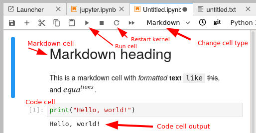
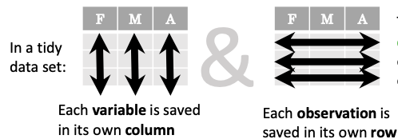

Python for Scientific Computing
Attending the course 7-10.november.2023?
See the course page here and watch at https://twitch.tv/coderefinery. Whether you are or aren’t, the course material is below. Videos will appear in this playlist.
Python is a modern, object-oriented programming language, which has become popular in several areas of software development. This course discusses how Python can be utilized in scientific computing. The course starts by introducing some of the main Python tools for computing: Jupyter for interactive analysis, NumPy and SciPy for numerical analysis, matplotlib for visualization, and so on. In addition, it talks about how python is used: related scientific libraries, reproducibility, and the broader ecosystem of science in Python, because your work is more than the raw code you write.
This course (like any course) can’t teach you Python… it can show your some examples, let you see how experts do things, and prepare you to learn yourself as you need to.
Prerequisites
Knowing basic Python syntax. We assume that you can do some Python programming, but not much more that that. We don’t cover standard Python programming. Here a short course on basic Python syntax, with further references.
Watch or read the command line crash course, if you aren’t familiar.
You should be able to use a text editor to edit files some.
The software installation described below (basically, anaconda).
These are not prerequisites:
Any external libraries, e.g. numpy
Knowing how to make scripts or use Jupyter
Videos and archived Q&A
Videos and material from past instances:
2021: this YouTube playlist.
2023 (appearing here as the course happens): Videos
(prereq) |
|
30 min |
|
60 min |
|
60 min |
|
30 min |
|
60 min |
|
30 min |
|
60 min |
|
40 min |
|
20 min |
|
30 min |
|
15 min |
|
30 min |
|
45 min |
|
30 min |
|
30 min |
|
60 min |
Introduction to Python
Questions
What are the basic blocks of Python language?
How are functions and classes defined in Python?
Objectives
Get a very short introduction to Python types and syntax
Be able to follow the rest of the examples in the course, even if you don’t understand everything perfectly.
We expect everyone to be able to know the following basic material to follow the course (though it is not everything you need to know about Python).
If you are not familiar with Python, here is a very short introduction. It will not be enough to do everything in this course, but you will be able to follow along a bit more than you would otherwise.
See also
This page contains an overview of the basics of Python. You can also refer to This Python overview from a different lesson which is slightly more engaging.
Scalars
Scalar types, that is, single elements of various types:
i = 42 # integer
i = 2**77 # Integers have arbitrary precision
g = 3.14 # floating point number
c = 2 - 3j # Complex number
b = True # boolean
s = "Hello!" # String (Unicode)
q = b'Hello' # bytes (8-bit values)
Collections
Collections are data structures capable of storing multiple values.
l = [1, 2, 3] # list
l[1] # lists are indexed by int
l[1] = True # list elements can be any type
d = {"Janne": 123, "Richard": 456} # dictionary
d["Janne"]
s = set(("apple", "cherry", "banana", "apple")) # Set of unique values
s
Control structures
Python has the usual control structures, that is conditional statements and loops. For example, the The if statement statement:
x = 2
if x == 3:
print('x is 3')
elif x == 2:
print('x is 2')
else:
print('x is something else')
While loops loop until some condition is met:
x = 0
while x < 42:
print('x is ', x)
x += 0.2
For loops loop over some collection of values:
xs = [1, 2, 3, 4]
for x in xs:
print(x)
Often you want to loop over a sequence of integers, in that case the
range function is useful:
for x in range(9):
print(x)
Another common need is to iterate over a collection, but at the same
time also have an index number. For this there is the enumerate()
function:
xs = [1, 'hello', 'world']
for ii, x in enumerate(xs):
print(ii, x)
Functions and classes
Python functions are defined by the Function definitions keyword. They take a number of arguments, and return a number of return values.
def hello(name):
"""Say hello to the person given by the argument"""
print('Hello', name)
return 'Hello ' + name
hello("Anne")
Classes are defined by the Class definitions keyword:
class Hello:
def __init__(self, name):
self._name = name
def say(self):
print('Hello', self._name)
h = Hello("Richard")
h.say()
Python type system
Python is strongly and dynamically typed.
Strong here means, roughly, that it’s not possible to circumvent the type system (at least, not easily, and not without invoking undefined behavior).
x = 42
type(x)
x + "hello"
Dynamic typing means that types are determined at runtime, and a variable can be redefined to refer to an instance of another type:
x = 42
x = "hello"
Jargon: Types are associated with rvalues, not lvalues. In statically typed language, types are associated with lvalues, and are (typically) reified during compilation.
??? (lesson here)
Keypoints
Python offers a nice set of basic types as many other programming languages
Python is strongly typed and dynamically typed
Jupyter
Questions
What is the purpose of a “Computational narrative”?
What role does Jupyter play in development?
When is Jupyter not a good tool?
Objectives
This part will be too easy for some people, and slow for others. Still, we need to take some time to get everyone on the same page.
Be able to use Jupyter to run examples for the rest of the course.
Be able to run Jupyter in a directory do your own work.
You won’t be a Jupyter expert after this, but should be able to do the rest of the course.
What is Jupyter?
Jupyter is a web-based interactive computing system. It is most well known for having the notebook file format and Jupyter Notebook / Jupyter Lab. A notebook format contains both the input and the output of the code along documentation, all interleaved to create what is called a computational narrative.
Jupyter is good for data exploration and interactive work.
We use Jupyter a lot in this course because it is a good way that everyone can follow along, and minimizes the differences between operating systems.
Getting started with Jupyter
Start JupyterLab: there are different ways. From the command line, activate your anaconda environment and run
jupyter-lab. You can also start in from Anaconda Navigator.
For practical purposes, JupyterLab is an integrated development environment that combines file browsing, notebooks, and code editing. There are many extensions that let you do whatever you may need.
Here, we see a tour of the JupyterLab interface:

Exercises 1
Exercises: Jupyter-1
Start Jupyter in the directory you want to use for this course.
If you are starting from the navigator, change to the directory you want to use.
If you are starting from the command line, you should navigate to the directory you want to use first.
Create a Python 3 notebook file. Save it. In the next section, you will add stuff to it.
(optional, but will be done in future lessons) Explore the file browser, try making some non-notebook text/py/md files and get used to that.
(optional, advanced) Look at the notebook file in a text editor. How does it work?
If everything works for you, this will end very quickly. You can begin reading the next sections independently.
Running code in Jupyter
A notebook is divided into cells. Each cell has some input, and when it is executed an output appears right below it.
There are different types of cells: primarily code cells and markdown cells. You can switch between them with the menu bar above. Code cells run whatever language your notebook uses. Markdown is a lightweight way of giving style to text - you can check out this reference. For example the previous sentence is:
Markdown is a lightweight way of giving *style* to `text` - you
can check out [this reference](https://commonmark.org/help/).

When using keyboard shortcuts, you can switch between edit mode and command mode with Enter and Esc.
You enter code in a cell, and push the run button to run it. There are also some important shortcut keys:
Ctrl-Enter: Run cellShift-Enter: Run cell and select cell belowAlt-Enter: Run cell and insert new cell belowa/b: insert new cell above/belowm/y: markdown cell / code cellx: cut cellc: copy cellv: paste celld, d: delete cell
Now, let’s look at some code samples:
for i in range(3):
print(i)
0
1
2
print(sum(range(5)))
10
By convention, if the last thing in a cell is an object, that object gets printed:
sum(range(5))
sum(range(10))
45
In addition to raw cells, there are magics, which exist outside of Python. They are a property of the runtime itself (in Python’s case, they come from IPython. For example, the following cell magic %%timeit will use the timeit module to time a cell by running it multiple times):
%%timeit
for x in range(1000000):
x**2
54.1 ms ± 993 µs per loop (mean ± std. dev. of 7 runs, 10 loops each)
Another example is %%bash which will turn the cell into a shell script (This will only work on operating systems with the Bash shell installed - MacOS and Linux at least):
%%bash
for x in $(seq 3) ; do
echo $x
done
1
2
3
A cell magic starts with
%%, goes on the first line of a cell, and applies to the whole cellA line magic starts with
%, goes on any line, and applies to that line.
Exercises 2
Exercises: Jupyter-2
Run some trivial code, such as
print(1).Run some slightly less trivial code, like print out the first ten Fibonacci numbers.
Make a Markdown cell above your code cell and give it a title and some description of your function. Use the reference to add a heading, bullet list, and some (bold, italic, or inline code)
Use the %%timeit magic function to time your Fibonacci function.
Again using
%%timeit, figure out the fastest way to sum the numbers 0 to 1000000.Once you are done, close your notebooks and other tabs you don’t need. Check the running sessions (hint: thin left sidebar) and shut down these kernels.
Solutions: Jupyter-2
–
Simple fibonacci code
a, b = 0, 1 for i in range(10): print(a) a, b = b, a+b
Markdown description
# Fibonacci * Start with two variables `a` and `b` * Repeat 10 times * Print old `a`, then increment both * Makes use of the Python *tuple assignment*: `a, b = new_a, new_b`
In this case, the print() statements get out of hand, so we comment that out. In general, writing output usually takes a lot of time reletive to the computation, so we don’t want to time that (unless output is the main point of the code, then we do have to time it!
%%timeit a, b = 0, 1 for i in range(10): #print(a) a, b = b, a+b
395 ns ± 10.2 ns per loop (mean ± std. dev. of 7 runs, 1000000 loops each)
–
–
Why Jupyter?
Being able to edit, check, re-edit quickly is great for prototyping and testing new ideas
Tends to be best either at the very beginning (getting started) or data analysis/plotting phases.
You can make a complete story - in one place. No more having code, figures, and description in different places.
Instead of sending plots to your advisor, send plots, the text there, and possibility of checking the code, too.
Notebook as an interactive publication itself - for example the discovery of gravitational waves data is released as a notebook.
Jupyter Notebooks display on Github - low-barrier way to share your analysis.
Teaching - great for getting difficult software distribution out of the way.
Why not Jupyter?
Jupyter is great for many things, but there are some problems if not used well:
They don’t promote modularity, and once you get started in a notebook it can be hard to migrate to modules.
They are difficult to test. There are things to run notebooks as unit tests like nbval, but it’s not perfect.
Notebooks can be version controlled (nbdime helps with that), but there are still limitations.
You can change code after you run it and run code out of order. This can make debugging hard and results irreproducible if you aren’t careful.
Notebooks aren’t named by default and tend to acquire a bunch of unrelated stuff. Be careful with organization!
Once lots of code is in notebooks, it can be hard to change to proper programs that can be scripted.
You can read more about these downsides https://scicomp.aalto.fi/scicomp/jupyter-pitfalls/.
But these downsides aren’t specific to Jupyter! They can easily happen in other sources, too. By studying these, you can make any code better, and find the right balance for what you do.
Exercises 3
Exercises: Jupyter-3
(optional) Discuss the following in groups:
Have any of you used Jupyter in a way that became impossible to maintain: too many files, code all spread out, not able to find your code and run it in the right order. How did you solve that?
On the other hand, what are your successes with Jupyter?
How can you prevent these problems by better development strategies?
See also
The CodeRefinery Jupyter lesson has much more, and the source of some of the content above.
Keypoints
Jupyter is powerful and can be used for interactive work
… but not the end solution when you need to scale up.
NumPy
Questions
Why use NumPy instead of pure python?
How to use basic NumPy?
What is vectorization?
Objectives
Understand the Numpy array object
Be able to use basic NumPy functionality
Understand enough of NumPy to seach for answers to the rest of your questions ;)
We expect most people to be able to do all the basic exercises here. It is probably quite easy for many people; we have advanced exercises at the end in that case.
So, we already know about python lists, and that we can put all kinds of things in there. But in scientific usage, lists are often not enough. They are slow and not very flexible.
What is an array?
For example, consider [1, 2.5, 'asdf', False, [1.5, True]] -
this is a Python list but it has different types for every
element. When you do math on this, every element has to be handled separately.
NumPy is the most used library for scientific computing. Even if you are not using it directly, chances are high that some library uses it in the background. NumPy provides the high-performance multidimensional array object and tools to use it.
An array is a ‘grid’ of values, with all the same types. It is indexed by tuples of non negative indices and provides the framework for multiple dimensions. An array has:
dtype - data type. Arrays always contain one type
shape - shape of the data, for example
3×2or3×2×500or even500(one dimensional) or[](zero dimensional).data- raw data storage in memory. This can be passed to C or Fortran code for efficient calculations.
To test the performance of pure Python vs NumPy we can write in our jupyter notebook:
Create one list and one ‘empty’ list, to store the result in
a = list(range(10000))
b = [ 0 ] * 10000
In a new cell starting with %%timeit, loop through the list a and fill the second list b with a squared
%%timeit
for i in range(len(a)):
b[i] = a[i]**2
That looks and feels quite fast. But let’s take a look at how NumPy performs for the same task.
So for the NumPy example, create one array and one ‘empty’ array to store the result in
import numpy as np
a = np.arange(10000)
b = np.zeros(10000)
In a new cell starting with %%timeit, fill b with a squared
%%timeit
b = a ** 2
We see that compared to working with numpy arrays, working with traditional python lists is actually slow.
Creating arrays
There are different ways of creating arrays (numpy.array(), numpy.ndarray.shape, numpy.ndarray.size):
a = np.array([1,2,3]) # 1-dimensional array (rank 1)
b = np.array([[1,2,3],[4,5,6]]) # 2-dimensional array (rank 2)
b.shape # the shape (rows,columns)
b.size # number of elements
In addition to above ways of creating arrays, there are many other ways of creating arrays depending on content (numpy.zeros(), numpy.ones(), numpy.full(), numpy.eye(), numpy.arange(), numpy.linspace()):
np.zeros((2, 3)) # 2x3 array with all elements 0
np.ones((1,2)) # 1x2 array with all elements 1
np.full((2,2),7) # 2x2 array with all elements 7
np.eye(2) # 2x2 identity matrix
np.arange(10) # Evenly spaced values in an interval
np.linspace(0,9,10) # same as above, see exercise
c = np.ones((3,3))
d = np.ones((3, 2), 'bool') # 3x2 boolean array
Arrays can also be stored and read from a (.npy) file (numpy.save(), numpy.load()):
np.save('x.npy', a) # save the array a to a .npy file
x = np.load('x.npy') # load an array from a .npy file and store it in variable x
In many occasions (especially when something goes different than expected) it is useful to check and control the datatype of the array (numpy.ndarray.dtype, numpy.ndarray.astype()):
d.dtype # datatype of the array
d.astype('int') # change datatype from boolean to integer
In the last example, .astype('int'), it will make a copy of the
array, and re-allocate data - unless the dtype is exactly the same as
before. Understanding and minimizing copies is one of the most
important things to do for speed.
Exercises 1
Exercises: Numpy-1
Datatypes Try out
np.arange(10)andnp.linspace(0,9,10), what is the difference? Can you adjust one to do the same as the other?Datatypes Create a 3x2 array of random float numbers (check
numpy.random.random()) between 0 and 1. Now change the arrays datatype to int (array.astype). How does the array look like?Reshape Create a 3x2 array of random integer numbers between 0 and 10. Change the shape of the array (check
array.reshape) in any way possible. What is not possible?NumPyI/O Save above array to .npy file (
numpy.save()) and read it in again.
Solutions: Numpy-1
Datatypes
np.arange(10)results inarray([0, 1, 2, 3, 4, 5, 6, 7, 8, 9])with dtype int64,while
np.linspace(0,9,10)results inarray([0., 1., 2., 3., 4., 5., 6., 7., 8., 9.])with dtype float64.Both
np.linspaceandnp.arangetake dtype as an argument and can be adjusted to match each other in that way.
Datatypes eg
a = np.random.random((3,2)).a.astype('int')results in an all zero array, not as maybe expected the rounded int (all numbers [0, 1) are cast to 0).Reshape eg
b = np.random.randint(0,10,(3,2)).
b.reshape((6,1))andb.reshape((2,3))possible.It is not possible to reshape to shapes using more or less elements than
b.size = 6, so for exampleb.reshape((12,1))gives an error.
NumPyI/O
np.save('x.npy', b)andx = np.load('x.npy')
Array maths and vectorization
Clearly, you can do math on arrays. Math in NumPy is very fast because it is implemented in C or Fortran - just like most other high-level languages such as R, Matlab, etc do.
By default, basic arithmetic (+, -, *, /) in NumPy is
element-by-element. That is, the operation is performed for each element in the
array without you having to write a loop. We say an operation is “vectorized”
when the looping over elements is carried out by NumPy internally, which uses
specialized CPU instructions for this that greatly outperform a regular Python
loop.
Note that unlike Matlab, where * means matrix multiplication, NumPy uses
* to perform element-by-element multiplication and uses the @ symbol to
perform matrix multiplication:
a = np.array([[1,2],[3,4]])
b = np.array([[5,6],[7,8]])
# Addition
c = a + b
d = np.add(a,b)
# Matrix multiplication
e = a @ b
f = np.dot(a, b)
Other common mathematical operations include: - (numpy.subtract), * (numpy.multiply), / (numpy.divide), .T (numpy.transpose()), numpy.sqrt, numpy.sum(), numpy.mean(), …
Exercises 2
Exercises: Numpy-2
Matrix multiplication What is the difference between
numpy.multiplyandnumpy.dot()? Try it.Axis What is the difference between
np.sum(axis=1)vsnp.sum(axis=0)on a two-dimensional array? What if you leave out the axis parameter?
Solutions: Numpy-2
Matrix multiplication
np.multiplydoes elementwise multiplication on two arrays, whilenp.dotenables matrix multiplication.Axis
axis=1does the operation (here:np.sum) over each row, while axis=0 does it over each column. If axis is left out, the sum of the full array is given.
Indexing and Slicing
See also
NumPy has many ways to extract values out of arrays:
You can select a single element
You can select rows or columns
You can select ranges where a condition is true.
Clever and efficient use of these operations is a key to NumPy’s speed: you should try to cleverly use these selectors (written in C) to extract data to be used with other NumPy functions written in C or Fortran. This will give you the benefits of Python with most of the speed of C.
a = np.arange(16).reshape(4, 4) # 4x4 matrix from 0 to 15
a[0] # first row
a[:,0] # first column
a[1:3,1:3] # middle 2x2 array
a[(0, 1), (1, 1)] # second element of first and second row as array
Boolean indexing on above created array:
idx = (a > 0) # creates boolean matrix of same size as a
a[idx] # array with matching values of above criterion
a[a > 0] # same as above in one line
Exercises 3
Exercise: Numpy-3
a = np.eye(4)
b = a[:,0]
b[0] = 5
View vs copy Try out above code. How does
alook like beforebhas changed and after? How could it be avoided?
Solution: Numpy-3
View vs copy The change in
bhas also changed the arraya! This is becausebis merely a view of a part of arraya. Both variables point to the same memory. Hence, if one is changed, the other one also changes. If you need to keep the original array as is, usenp.copy(a).
Types of operations
There are different types of standard operations in NumPy:
ufuncs, “universal functions”: These are element-by-element functions with standardized arguments:
One, two, or three input arguments
For example,
a + bis similar tonp.add(a, b)but the ufunc has more control.out=output argument, store output in this array (rather than make a new array) - saves copying data!See the full reference
They also do broadcasting (ref). Can you add a 1-dimensional array of shape (3) to an 2-dimensional array of shape (3, 2)? With broadcasting you can!
a = np.array([[1, 2, 3], [4, 5, 6]]) b = np.array([10, 10, 10]) a + b # array([[11, 12, 13], # [14, 15, 16]])
Broadcasting is smart and consistent about what it does, which I’m not clever enough to explain quickly here: the manual page on broadcasting. The basic idea is that it expands dimensions of the smaller array so that they are compatible in shape.
Array methods do something to one array:
Some of these are the same as ufuncs:
x = np.arange(12) x.shape = (3, 4) x # array([[ 0, 1, 2, 3], # [ 4, 5, 6, 7], # [ 8, 9, 10, 11]]) x.max() # 11 x.max(axis=0) # array([ 8, 9, 10, 11]) x.max(axis=1) # array([ 3, 7, 11])
Other functions: there are countless other functions covering linear algebra, scientific functions, etc.
Exercises 4
Exercises: Numpy-4
In-place addition: Create an array, add it to itself using a ufunc.
In-place addition (advanced): Create an array of
dtype='float', and an array ofdtype='int'. Try to use the int array is the output argument of the first two arrays.Output arguments and timing Repeat the initial
b = a ** 2example using the output arguments and time it. Can you make it even faster using the output argument?
Solution: Numpy-4
in-place addition:
x = np.array([1, 2, 3]) id(x) # get the memory-ID of x np.add(x, x, x) # Third argument is output array np.add(x, x, x) print(x) id(x) # get the memory-ID of x # - notice it is the same
You note that
np.add()has a third argument that is the output array (same asout=), and the function returns that same array.Output arguments and timing In this case, on my computer, it was actually slower (this is due to it being such a small array!):
a = np.arange(10000) b = np.zeros(10000)
%%timeit numpy.square(a, out=b)
This is a good example of why you always need to time things before deciding what is best.
Linear algebra and other advanced math
In general, you use arrays (n-dimensions), not matrixes
(specialized 2-dimensional) in NumPy.
Internally, NumPy doesn’t invent its own math routines: it relies on BLAS and LAPACK to do this kind of math - the same as many other languages.
Scipy has even more functions
Many other libraries use NumPy arrays as the standard data structure: they take data in this format, and return it similarly. Thus, all the other packages you may want to use are compatible
If you need to write your own fast code in C, NumPy arrays can be used to pass data. This is known as extending Python.
Additional exercises
Numpy-5
If you have extra time, try these out. These are advanced and optional, and will not be done in most courses.
Reverse a vector. Given a vector, reverse it such that the last element becomes the first, e.g.
[1, 2, 3]=>[3, 2, 1]Create a 2D array with zeros on the borders and 1 inside.
Create a random array with elements [0, 1), then add 10 to all elements in the range [0.2, 0.7).
What is
np.round(0.5)? What isnp.round(1.5)? Why?In addition to
np.round, explorenumpy.ceil,numpy.floor,numpy.trunc. In particular, take note of how they behave with negative numbers.Recall the identity \(\sin^2(x) + \cos^2(x) = 1\). Create a random 4x4 array with values in the range [0, 10). Now test the equality with
numpy.equal. What result do you get withnumpy.allclose()instead ofnp.equal?Create a 1D array with 10 random elements. Sort it.
What’s the difference between
np_array.sort()andnp.sort(np_array)?For the random array in question 8, instead of sorting it, perform an indirect sort. That is, return the list of indices which would index the array in sorted order.
Create a 4x4 array of zeros, and another 4x4 array of ones. Next combine them into a single 8x4 array with the content of the zeros array on top and the ones on the bottom. Finally, do the same, but create a 4x8 array with the zeros on the left and the ones on the right.
NumPy functionality Create two 2D arrays and do matrix multiplication first manually (for loop), then using the np.dot function. Use %%timeit to compare execution times. What is happening?
Solution Numpy-5
One solution is:
a = np.array([1, 2, 3]) a[::-1]
One solution is:
b = np.ones((10,10)) b[:,[0, -1]]=0 b[[0, -1],:]=0
A possible solution is:
x = np.random.rand(100) y = x + 10*(x >= 0.2)*(x < 0.7)
For values exactly halfway between rounded decimal values, NumPy rounds to the nearest even value.
Let’s test those functions with few negative and positive values:
a = np.array([-3.3, -2.5, -1.5, -0.75, -0.5, 0.5, 0.75, 1.5, 2.5, 3]) np.round(a) # [-3. -2. -2. -1. -0. 0. 1. 2. 2. 3.] np.ceil(a) # [-3. -2. -1. -0. -0. 1. 1. 2. 3. 3.] np.floor(a) # [-4. -3. -2. -1. -1. 0. 0. 1. 2. 3.] np.trunc(a) # [-3. -2. -1. -0. -0. 0. 0. 1. 2. 3.]
One solution is:
x = 10*np.random.rand(4,4) oo = np.ones((4,4)) s2c2 = np.square(np.sin(x))+np.square(np.cos(x)) np.equal(oo,s2c2) np.allclose(oo,s2c2)
Sorting the array itself, without copying it:
x = np.random.rand(10) x.sort()
NumPy.sort() returns a sorted copy of an array.
np.argsort(x)One solution is:
z = np.zeros((4,4)) o = np.ones((4,4)) np.concatenate((z,o)) np.concatenate((z,o),axis=1)
Using numpy without numpy functionality (np.dot) in this case, is still slow.
See also
Keypoints
NumPy is a powerful library every scientist using python should know about, since many other libraries also use it internally.
Be aware of some NumPy specific peculiarities
Advanced NumPy
Questions
How can NumPy be so fast?
Why are some things fast and some things slow?
How can I control whether NumPy makes a copy or operates in-place?
Objectives
Understand why NumPy has so many specialized functions for specific operations
Understand the underlying machinery of the Numpy
ndarrayobjectUnderstand when and why NumPy makes a copy of the data rather than a view
This is intended as a follow-up to the basic NumPy lesson. The intended audience for this advanced lesson is those who have used NumPy before and now want to learn how to get the most out of this amazing package.
Python, being an interpreted programming language, is quite slow. Manipulating large amounts of numbers using Python’s build-in lists would be impractically slow for any serious data analysis. Yet, the NumPy package can be really fast. How does it do that? We will dive into how NumPy works behind the scenes and use this knowledge to our advantage. This lesson also serves as an introduction to reading the definitive work on this topic: Guide to NumPy by Travis E. Oliphant, its initial creator.
NumPy can be really fast
Python, being an interpreted programming language, is quite slow. Manipulating large amounts of numbers using Python’s build-in lists would be impractically slow for any serious data analysis. Yet, the numpy package can be really fast.
How fast can NumPy be? Let’s race NumPy against C. The contest will be to sum together 100 000 000 random numbers. We will give the C version below, you get to write the NumPy version:
#include <stdlib.h>
#include <stdio.h>
#define N_ELEMENTS 100000000
int main(int argc, char** argv) {
double* a = (double*) malloc(sizeof(double) * N_ELEMENTS);
int i;
for(i=0; i<N_ELEMENTS; ++i) {
a[i] = (double) rand() / RAND_MAX;
}
double sum = 0;
for(i=0; i<N_ELEMENTS; ++i) {
sum += a[i];
}
printf("%f", sum);
return 0;
}
Exercise 1
Exercises: Numpy-Advanced-1
Write a Python script that uses NumPy to generate 100 million (100000000) random numbers and add them all together. Time how long it takes to execute. Can you beat the C version?
If you are having trouble with this, we recommend completing the basic NumPy lesson before continuing with this advanced lesson. If you are taking a live course - don’t worry, watch and learn and explore some during the exercises!
Solutions: Numpy-Advanced-1
The script can be implemented like this:
import numpy as np
print(np.random.rand(100_000_000).sum())
The libraries behind the curtain: MKL and BLAS
NumPy is fast because it outsources most of its heavy lifting to heavily optimized math libraries, such as Intel’s Math Kernel Library (MKL), which are in turn derived from a Fortran library called Basic Linear Algebra Subprograms (BLAS). BLAS for Fortran was published in 1979 and is a collection of algorithms for common mathematical operations that are performed on arrays of numbers. Algorithms such as matrix multiplication, computing the vector length, etc. The API of the BLAS library was later standardized, and today there are many modern implementations available. These libraries represent over 40 years of optimizing efforts and make use of specialized CPU instructions for manipulating arrays. In other words, they are fast.
One of the functions inside the BLAS library is a function to compute the “norm” of a vector, which is the same as computing its length, using the Pythagorean theorem: \(\sqrt(a[0]^2 + a[1]^2 + \ldots)\).
Let’s race the BLAS function versus a naive “manual” version of computing the vector norm. We start by creating a decently long vector filled with random numbers:
import numpy as np
rng = np.random.default_rng(seed=0)
a = rng.random(100_000_000)
We now implement the Pythagorean theorem using basic NumPy functionality and
use %%timeit to record how long it takes to execute:
%%timeit
l = np.sqrt(np.sum(a ** 2))
print(l)
And here is the version using the specialized BLAS function norm():
%%timeit
l = np.linalg.norm(a)
print(l)
NumPy tries to avoid copying data
Understanding the kind of operations that are expensive (take a long time) and
which ones are cheap can be surprisingly hard when it comes to NumPy. A big
part of data processing speed is memory management. Copying big arrays takes
time, so the less of that we do, the faster our code runs. The rules of when
NumPy copies data are not trivial and it is worth your while to take a closer
look at them. This involves developing an understanding of how NumPy’s
numpy.ndarray datastructure works behind the scenes.
An example: matrix transpose
Transposing a matrix means that all rows become columns and all columns become
rows. All off-diagonal values change places. Let’s see how long NumPy’s
transpose function takes, by transposing a huge (10 000 ✕ 20 000)
rand() matrix:
import numpy as np
a = np.random.rand(10_000, 20_000)
print(f'Matrix `a` takes up {a.nbytes / 10**6} MB')
Let’s time the transpose() method:
%%timeit
b = a.transpose()
It takes mere nanoseconds to transpose 1600 MB of data! How?
The ndarray exposed
The first thing you need to know about numpy.ndarray is that the
memory backing it up is always a flat 1D array. For example, a 2D matrix is
stored with all the rows concatenated as a single long vector.

NumPy is faking the second dimension behind the scenes! When we request the
element at say, [2, 3], NumPy converts this to the correct index in the
long 1D array [11].
Converting
[2, 3]→[11]is called “raveling”The reverse, converting
[11]→[2, 3]is called “unraveling”
The implications of this are many, so take let’s take some time to understand
it properly by writing our own ravel() function.
Exercise 2
Exercises: Numpy-Advanced-2
Write a function called ravel() that takes the row and column of an
element in a 2D matrix and produces the appropriate index in an 1D array,
where all the rows are concatenated. See the image above to remind yourself
how each row of the 2D matrix ends up in the 1D array.
The function takes these inputs:
rowThe row of the requested element in the matrix as integer index.
colThe column of the requested element in the matrix as integer index.
n_rowsThe total number of rows of the matrix.
n_colsThe total number of columns of the matrix.
Here are some examples of input and desired output:
ravel(2, 3, n_rows=4, n_cols=4)→11
ravel(2, 3, n_rows=4, n_cols=8)→19
ravel(0, 0, n_rows=1, n_cols=1)→0
ravel(3, 3, n_rows=4, n_cols=4)→15
ravel(3_465, 18_923, n_rows=10_000, n_cols=20_000)→69_318_923
Solutions: Numpy-Advanced-2
The function can be implemented like this:
def ravel(row, col, n_rows, n_cols):
return row * n_cols + col
Strides
As seen in the exercise, to get to the next row, we have to skip over
n_cols indices. To get to the next column, we can just add 1. To generalize
this code to work with an arbitrary number of dimensions, NumPy has the concept
of “strides”:
np.zeros((4, 8)).strides # (64, 8)
np.zeros((4, 5, 6, 7, 8)).strides # (13440, 2688, 448, 64, 8)
The strides attribute contains for each dimension, the number of bytes (not array indexes) we
have to skip over to get to the next element along that dimension. For example,
the result above tells us that to get to the next row in a 4 ✕ 8 matrix, we
have to skip ahead 64 bytes. 64? Yes! We have created a matrix consisting of
double-precision floating point numbers. Each one of those bad boys takes up 8
bytes, so all the indices are multiplied by 8 to get to the proper byte in the
memory array. To move to the next column in the matrix, we skip ahead 8 bytes.
So now we know the mystery behind the speed of transpose(). NumPy can avoid
copying any data by just modifying the strides of the array:
import numpy as np
a = np.random.rand(10_000, 20_000)
b = a.transpose()
print(a.strides) # (160000, 8)
print(b.strides) # (8, 160000)
Another example: reshaping
Modifying the shape of an array through numpy.reshape() is also
accomplished without any copying of data by modifying the strides:
a = np.random.rand(20_000, 10_000)
print(f'{a.strides=}') # (80000, 8)
b = a.reshape(40_000, 5_000)
print(f'{b.strides=}') # (40000, 8)
c = a.reshape(20_000, 5_000, 2)
print(f'{c.strides=}') # (80000, 16, 8)
Exercises 3
Exercises: Numpy-Advanced-3
A little known feature of NumPy is the numpy.stride_tricks module
that allows you to modify the strides attribute directly. Playing
around with this is very educational.
Create your own
transpose()function that will transpose a 2D matrix by reversing itsshapeandstridesattributes usingnumpy.lib.stride_tricks.as_strided().Create a (5 ✕ 100 000 000 000) array containing on the first row all 1’s, the second row all 2’s, and so on. Start with an 1D array
a = np.array([1., 2., 3., 4., 5.])and modify itsshapeandstridesattributes usingnumpy.lib.stride_tricks.as_strided()to obtain the desired 2D matrix:array([[1., 1., 1., ..., 1., 1., 1.], [2., 2., 2., ..., 2., 2., 2.], [3., 3., 3., ..., 3., 3., 3.], [4., 4., 4., ..., 4., 4., 4.], [5., 5., 5., ..., 5., 5., 5.]])
Solutions: Numpy-Advanced-3
The
transpose()function can be implemented like this:from numpy.lib.stride_tricks import as_strided def transpose(a): return as_strided(a, shape=a.shape[::-1], strides=a.strides[::-1]) # Testing the function on a small matrix a = np.array([[1, 2, 3], [4, 5, 6]]) print('Before transpose:') print(a) print('After transpose:') print(transpose(a))
By setting one of the
.stridesto 0, we can repeat a value infinitely many times without using any additional memory:from numpy.lib.stride_tricks import as_strided a = np.array([1., 2., 3., 4., 5.]) as_strided(a, shape=(5, 100_000_000_000), strides=(8, 0))
A fast thing + a fast thing = a fast thing?
If numpy.transpose() is fast, and numpy.reshape() is fast, then
doing them both must be fast too, right?:
# Create a large array
a = np.random.rand(10_000, 20_000)
Measuring the time it takes to first transpose and then reshape:
%%timeit -n 1 -r 1
a.T.reshape(40_000, 5_000)
In this case, the data actually had to be copied and it’s super slow (it takes
seconds instead of nanoseconds). When the array is first created, it is laid
out in memory row-by-row (see image above). The transpose left the data laid
out in memory column-by-column. To see why the copying of data was inevitable,
look at what happens to this smaller (2 ✕ 3) matrix after transposition and
reshaping. You can verify for yourself there is no way to get the final array
based on the first array and some clever setting of the strides:
a = np.array([[1, 2, 3], [4, 5, 6]])
print('Original array:')
print(a)
print('\nTransposed:')
print(a.T)
print('\nTransposed and then reshaped:')
print(a.T.reshape(2, 3))
Copy versus view
Whenever NumPy constructs a new array by modifying the strides instead of
copying data, we way it created a “view”. This also happens when we select only
a portion of an existing matrix. Whenever a view is created, the
numpy.ndarray object will have a reference to the original array in
its base attribute:
a = np.zeros((5, 5))
print(a.base) # None
b = a[:2, :2]
print(b.base.shape) # (5, 5)
Warning
When you create a large array and select only a portion of it, the large array will stay in memory if a view was created!
The new array b object has a pointer to the same memory buffer as the array
it has been derived from:
print(a.__array_interface__['data'])
print(b.__array_interface__['data'])
Views are created by virtue of modifying the value of the shape attribute
and, if necessary, apply an offset to the pointer into the memory buffer so it
no longer points to the start of the buffer, but somewhere in the middle:
b = a[1:3, 1:3] # This view does not start at the beginning
offset = b.__array_interface__['data'][0] - a.__array_interface__['data'][0]
print('Offset:', offset, 'bytes') # Offset: 48 bytes

Since the base array and its derived view share the same memory, any changes to the data in a view also affects the data in the base array:
b[0, 0] = 1.
print(a) # Original matrix was modified
Whenever you index an array, NumPy will attempt to create a view. Whether or not that succeeds depends on the memory layout of the array and what kind of indexing operation was done. If no view can be created, NumPy will create a new array and copy over the selected data:
c = a[[0, 2]] # Select rows 0 and 2
print(c.base) # None. So not a view.
See also
Keypoints
The best way to make your code more efficient is to learn more about the NumPy API and use specialized functions whenever possible.
NumPy will avoid copying data whenever it can. Whether it can depends on what kind of layout the data is currently in.
Pandas
Questions
How do I learn a new Python package?
How can I use pandas dataframes in my research?
Objectives
Learn simple and some more advanced usage of pandas dataframes
Get a feeling for when pandas is useful and know where to find more information
Understand enough of pandas to be able to read its documentation.
Pandas is a Python package that provides high-performance and easy to use data structures and data analysis tools. This page provides a brief overview of pandas, but the open source community developing the pandas package has also created excellent documentation and training material, including:
a Getting started guide (including tutorials and a 10 minute flash intro)
a “10 minutes to pandas” tutorial
thorough Documentation containing a user guide, API reference and contribution guide
a cookbook.
A quick Pandas preview
Let’s get a flavor of what we can do with pandas (you won’t be able to follow everything yet). We will be working with an example dataset containing the passenger list from the Titanic, which is often used in Kaggle competitions and data science tutorials. First step is to load pandas:
import pandas as pd
We can download the data from this GitHub repository
by visiting the page and saving it to disk, or by directly reading into
a DataFrame:
url = "https://raw.githubusercontent.com/pandas-dev/pandas/master/doc/data/titanic.csv"
titanic = pd.read_csv(url, index_col='Name')
We can now view the dataframe to get an idea of what it contains and print some summary statistics of its numerical data:
# print the first 5 lines of the dataframe
titanic.head()
# print summary statistics for each column
titanic.describe()
Ok, so we have information on passenger names, survival (0 or 1), age, ticket fare, number of siblings/spouses, etc. With the summary statistics we see that the average age is 29.7 years, maximum ticket price is 512 USD, 38% of passengers survived, etc.
Let’s say we’re interested in the survival probability of different
age groups. With two one-liners, we can find the average age of those
who survived or didn’t survive, and plot corresponding histograms of
the age distribution (pandas.DataFrame.groupby(), pandas.DataFrame.hist()):
print(titanic.groupby("Survived")["Age"].mean())
titanic.hist(column='Age', by='Survived', bins=25, figsize=(8,10),
layout=(2,1), zorder=2, sharex=True, rwidth=0.9);
Clearly, pandas dataframes allows us to do advanced analysis with very few commands, but it takes a while to get used to how dataframes work so let’s get back to basics.
Getting help
Series and DataFrames have a lot functionality, but
how can we find out what methods are available and how they work? One way is to visit
the API reference
and reading through the list.
Another way is to use the autocompletion feature in Jupyter and type e.g.
titanic["Age"]. in a notebook and then hit TAB twice - this should open
up a list menu of available methods and attributes.
Jupyter also offers quick access to help pages (docstrings) which can be more efficient than searching the internet. Two ways exist:
Write a function name followed by question mark and execute the cell, e.g. write
titanic.hist?and hitSHIFT + ENTER.Write the function name and hit
SHIFT + TAB.Right click and select “Show contextual help”. This tab will update with help for anything you click.
What’s in a dataframe?
As we saw above, pandas dataframes are a powerful tool for working with tabular data.
A pandas
pandas.DataFrame
is composed of rows and columns:

Each column of a dataframe is a pandas.Series object
- a dataframe is thus a collection of series:
# print some information about the columns
titanic.info()
Unlike a NumPy array, a dataframe can combine multiple data types, such as
numbers and text, but the data in each column is of the same type. So we say a
column is of type int64 or of type object.
Let’s inspect one column of the Titanic passenger list data (first downloading and reading the titanic.csv datafile into a dataframe if needed, see above):
titanic["Age"]
titanic.Age # same as above
type(titanic["Age"]) # a pandas Series object
The columns have names. Here’s how to get them (columns):
titanic.columns
However, the rows also have names! This is what Pandas calls the index:
titanic.index
We saw above how to select a single column, but there are many ways of
selecting (and setting) single or multiple rows, columns and
values. We can refer to columns and rows either by their name
(loc, at) or by
their index (iloc,
iat):
titanic.loc['Lam, Mr. Ali',"Age"] # select single value by row and column
titanic.loc[:'Lam, Mr. Ali',"Survived":"Age"] # slice the dataframe by row and column *names*
titanic.iloc[0:2,3:6] # same slice as above by row and column *numbers*
titanic.at['Lam, Mr. Ali',"Age"] = 42 # set single value by row and column *name* (fast)
titanic.at['Lam, Mr. Ali',"Age"] # select single value by row and column *name* (fast)
titanic.iat[0,5] # select same value by row and column *number* (fast)
titanic["is_passenger"] = True # set a whole column
Dataframes also support boolean indexing, just like we saw for numpy
arrays:
titanic[titanic["Age"] > 70]
# ".str" creates a string object from a column
titanic[titanic.index.str.contains("Margaret")]
What if your dataset has missing data? Pandas uses the value numpy.nan
to represent missing data, and by default does not include it in any computations.
We can find missing values, drop them from our dataframe, replace them
with any value we like or do forward or backward filling:
titanic.isna() # returns boolean mask of NaN values
titanic.dropna() # drop missing values
titanic.dropna(how="any") # or how="all"
titanic.dropna(subset=["Cabin"]) # only drop NaNs from one column
titanic.fillna(0) # replace NaNs with zero
titanic.fillna(method='ffill') # forward-fill NaNs
Exercises 1
Exploring dataframes
Have a look at the available methods and attributes using the API reference or the autocomplete feature in Jupyter.
Try out a few methods using the Titanic dataset and have a look at the docstrings (help pages) of methods that pique your interest
Compute the mean age of the first 10 passengers by slicing and the
pandas.DataFrame.mean()method(Advanced) Using boolean indexing, compute the survival rate (mean of “Survived” values) among passengers over and under the average age.
Solution
Mean age of the first 10 passengers:
titanic.iloc[:10,:]["Age"].mean()
or:
titanic.loc[:"Nasser, Mrs. Nicholas (Adele Achem)","Age"].mean()
or:
titanic.iloc[:10,4].mean()
Survival rate among passengers over and under average age:
titanic[titanic["Age"] > titanic["Age"].mean()]["Survived"].mean()
and:
titanic[titanic["Age"] < titanic["Age"].mean()]["Survived"].mean()
Tidy data
The above analysis was rather straightforward thanks to the fact that the dataset is tidy.
In short, columns should be variables and rows should be measurements, and adding measurements (rows) should then not require any changes to code that reads the data.
What would untidy data look like? Here’s an example from some run time statistics from a 1500 m running event:
runners = pd.DataFrame([
{'Runner': 'Runner 1', 400: 64, 800: 128, 1200: 192, 1500: 240},
{'Runner': 'Runner 2', 400: 80, 800: 160, 1200: 240, 1500: 300},
{'Runner': 'Runner 3', 400: 96, 800: 192, 1200: 288, 1500: 360},
])
What makes this data untidy is that the column names 400, 800, 1200, 1500 indicate the distance ran. In a tidy dataset, this distance would be a variable on its own, making each runner-distance pair a separate observation and hence a separate row.
To make untidy data tidy, a common operation is to “melt” it, which is to convert it from wide form to a long form:
runners = pd.melt(runners, id_vars="Runner",
value_vars=[400, 800, 1200, 1500],
var_name="distance",
value_name="time"
)
In this form it’s easier to filter, group, join and aggregate the data, and it’s also easier to model relationships between variables.
The opposite of melting is to pivot data, which can be useful to view data in different ways as we’ll see below.
For a detailed exposition of data tidying, have a look at this article.
Working with dataframes
We saw above how we can read in data into a dataframe using the read_csv() function.
Pandas also understands multiple other formats, for example using read_excel,
read_hdf, read_json, etc. (and corresponding methods to write to file:
to_csv, to_excel, to_hdf, to_json, etc.)
But sometimes you would want to create a dataframe from scratch. Also this can be done
in multiple ways, for example starting with a numpy array (see
DataFrame docs):
import numpy as np
dates = pd.date_range('20130101', periods=6)
df = pd.DataFrame(np.random.randn(6, 4), index=dates, columns=list('ABCD'))
df
or a dictionary (see same docs):
df = pd.DataFrame({'A': ['dog', 'cat', 'dog', 'cat', 'dog', 'cat', 'dog', 'dog'],
'B': ['one', 'one', 'two', 'three', 'two', 'two', 'one', 'three'],
'C': np.array([3] * 8, dtype='int32'),
'D': np.random.randn(8),
'E': np.random.randn(8)})
df
There are many ways to operate on dataframes. Let’s look at a few examples in order to get a feeling of what’s possible and what the use cases can be.
We can easily split and concatenate dataframes:
sub1, sub2, sub3 = df[:2], df[2:4], df[4:]
pd.concat([sub1, sub2, sub3])
When pulling data from multiple dataframes, a powerful pandas.DataFrame.merge method is
available that acts similarly to merging in SQL. Say we have a dataframe containing the age of some athletes:
age = pd.DataFrame([
{"Runner": "Runner 4", "Age": 18},
{"Runner": "Runner 2", "Age": 21},
{"Runner": "Runner 1", "Age": 23},
{"Runner": "Runner 3", "Age": 19},
])
We now want to use this table to annotate the original runners table from
before with their age. Note that the runners and age dataframes have a
different ordering to it, and age has an entry for Dave which is not
present in the runners table. We can let Pandas deal with all of it using
the merge method:
# Add the age for each runner
runners.merge(age, on="Runner")
In fact, much of what can be done in SQL is also possible with pandas.
groupby is a powerful method which splits a dataframe and aggregates data
in groups. To see what’s possible, let’s return to the Titanic dataset. Let’s
test the old saying “Women and children first”. We start by creating a new
column Child to indicate whether a passenger was a child or not, based on
the existing Age column. For this example, let’s assume that you are a
child when you are younger than 12 years:
titanic["Child"] = titanic["Age"] < 12
Now we can test the saying by grouping the data on Sex and then creating further sub-groups based on Child:
titanic.groupby(["Sex", "Child"])["Survived"].mean()
Here we chose to summarize the data by its mean, but many other common
statistical functions are available as dataframe methods, like
std, min,
max, cumsum,
median, skew,
var etc.
Exercises 2
Analyze the Titanic passenger list dataset
In the Titanic passenger list dataset, investigate the family size of the passengers (i.e. the “SibSp” column).
What different family sizes exist in the passenger list? Hint: try the
unique()methodWhat are the names of the people in the largest family group?
(Advanced) Create histograms showing the distribution of family sizes for passengers split by the fare, i.e. one group of high-fare passengers (where the fare is above average) and one for low-fare passengers (Hint: instead of an existing column name, you can give a lambda function as a parameter to
hist()to compute a value on the fly. For examplelambda x: "Poor" if df["Fare"].loc[x] < df["Fare"].mean() else "Rich").
Solution
Existing family sizes:
titanic["SibSp"].unique()
We get 8 from above. There is no
Namecolumn, since we madeNamethe index when we loaded the dataframe withread_csv, so we usepandas.DataFrame.indexto get the names. So, names of members of largest family(ies):titanic[titanic["SibSp"] == 8].index
Histogram of family size based on fare class:
titanic.hist("SibSp", lambda x: "Poor" if titanic["Fare"].loc[x] < titanic["Fare"].mean() else "Rich", rwidth=0.9)
Time series superpowers
An introduction of pandas wouldn’t be complete without mention of its special abilities to handle time series. To show just a few examples, we will use a new dataset of Nobel prize laureates available through an API of the Nobel prize organisation at https://api.nobelprize.org/v1/laureate.csv .
Unfortunately this API does not allow “non-browser requests”, so
pandas.read_csv will not work directly on it. Instead, we put a
local copy on Github which we can access (the original data is CC-0,
so we are allowed to do this). (Aside: if you do JupyterLab →
File → Open from URL → paste the URL above, it will open it in
JupyterLab and download a copy for your use.)
We can then load and explore the data:
nobel = pd.read_csv("https://github.com/AaltoSciComp/python-for-scicomp/raw/master/resources/data/laureate.csv")
nobel.head()
This dataset has three columns for time, “born”/”died” and “year”.
These are represented as strings and integers, respectively, and
need to be converted to datetime format. pandas.to_datetime()
makes this easy:
# the errors='coerce' argument is needed because the dataset is a bit messy
nobel["born"] = pd.to_datetime(nobel["born"], errors ='coerce')
nobel["died"] = pd.to_datetime(nobel["died"], errors ='coerce')
nobel["year"] = pd.to_datetime(nobel["year"], format="%Y")
Pandas knows a lot about dates (using .dt accessor):
print(nobel["born"].dt.day)
print(nobel["born"].dt.year)
print(nobel["born"].dt.weekday)
We can add a column containing the (approximate) lifespan in years rounded to one decimal:
nobel["lifespan"] = round((nobel["died"] - nobel["born"]).dt.days / 365, 1)
and then plot a histogram of lifespans:
nobel.hist(column='lifespan', bins=25, figsize=(8,10), rwidth=0.9)
Finally, let’s see one more example of an informative plot (boxplot())
produced by a single line of code:
nobel.boxplot(column="lifespan", by="category")
Exercises 3
Analyze the Nobel prize dataset
What country has received the largest number of Nobel prizes, and how many? How many countries are represented in the dataset? Hint: use the
describemethod on thebornCountryCodecolumn.Create a histogram of the age when the laureates received their Nobel prizes. Hint: follow the above steps we performed for the lifespan.
List all the Nobel laureates from your country.
Now more advanced steps:
Now define an array of 4 countries of your choice and extract only laureates from these countries (you need to look at the data and find how countries are written, and replace
COUNTRYwith those strings):countries = np.array([COUNTRY1, COUNTRY2, COUNTRY3, COUNTRY4]) subset = nobel.loc[nobel['bornCountry'].isin(countries)]Use
groupby()to compute how many nobel prizes each country received in each category. Thesize()method tells us how many rows, hence nobel prizes, are in each group:nobel.groupby(['bornCountry', 'category']).size()(Optional) Create a pivot table to view a spreadsheet like structure, and view it
First add a column “number” to the nobel dataframe containing 1’s (to enable the counting below). We need to make a copy of
subset, because right now it is only a view:subset = subset.copy() subset.loc[:, 'number'] = 1Then create the
pivot_table():table = subset.pivot_table(values="number", index="bornCountry", columns="category", aggfunc=np.sum)(Optional) Install the seaborn visualization library if you don’t already have it, and create a heatmap of your table:
import seaborn as sns sns.heatmap(table,linewidths=.5);Play around with other nice looking plots:
sns.violinplot(y=subset["year"].dt.year, x="bornCountry", inner="stick", data=subset);sns.swarmplot(y="year", x="bornCountry", data=subset, alpha=.5);subset_physchem = nobel.loc[nobel['bornCountry'].isin(countries) & (nobel['category'].isin(['physics']) | nobel['category'].isin(['chemistry']))] sns.catplot(x="bornCountry", y="year", col="category", data=subset_physchem, kind="swarm");sns.catplot(x="bornCountry", col="category", data=subset_physchem, kind="count");
Solution
Below is solutions for the basic steps, advanced steps are inline above.
We use the describe() method:
nobel.bornCountryCode.describe()
# count 956
# unique 81
# top US
# freq 287
We see that the US has received the largest number of Nobel prizes, and 81 countries are represented.
To calculate the age at which laureates receive their prize, we need to ensure that the “year” and “born” columns are in datetime format:
nobel["born"] = pd.to_datetime(nobel["born"], errors ='coerce')
nobel["year"] = pd.to_datetime(nobel["year"], format="%Y")
Then we add a column with the age at which Nobel prize was received and plot a histogram:
nobel["age_nobel"] = round((nobel["year"] - nobel["born"]).dt.days / 365, 1)
nobel.hist(column="age_nobel", bins=25, figsize=(8,10), rwidth=0.9)
We can print names of all laureates from a given country, e.g.:
nobel[nobel["country"] == "Sweden"].loc[:, "firstname":"surname"]
Beyond the basics
Larger DataFrame operations might be faster using eval() with string expressions, see:
import pandas as pd
# Make some really big dataframes
nrows, ncols = 100000, 100
rng = np.random.RandomState(42)
df1, df2, df3, df4 = (pd.DataFrame(rng.rand(nrows, ncols))
for i in range(4))
Adding dataframes the pythonic way yields:
%timeit df1 + df2 + df3 + df4
# 80ms
And by using eval():
%timeit pd.eval('df1 + df2 + df3 + df4')
# 40ms
We can assign function return lists as dataframe columns:
def fibo(n):
"""Compute Fibonacci numbers. Here we skip the overhead from the
recursive function calls by using a list. """
if n < 0:
raise NotImplementedError('Not defined for negative values')
elif n < 2:
return n
memo = [0]*(n+1)
memo[0] = 0
memo[1] = 1
for i in range(2, n+1):
memo[i] = memo[i-1] + memo[i-2]
return memo
df = pd.DataFrame({'Generation': np.arange(100)})
df['Number of Rabbits'] = fibo(99) # Assigns list to column
There is much more to Pandas than what we covered in this lesson. Whatever your
needs are, chances are good there is a function somewhere in its API. You should try to get good at
searching the web for an example showing what you can do. And when
there is not, you can always
apply your own functions to the data using apply:
from functools import lru_cache
@lru_cache
def fib(x):
"""Compute Fibonacci numbers. The @lru_cache remembers values we
computed before, which speeds up this function a lot."""
if x < 0:
raise NotImplementedError('Not defined for negative values')
elif x < 2:
return x
else:
return fib(x - 2) + fib(x - 1)
df = pd.DataFrame({'Generation': np.arange(100)})
df['Number of Rabbits'] = df['Generation'].apply(fib)
Note that the numpy precision for integers caps at int64 while python ints are unbounded – limited by memory size. Thus, the result from fibonacci(99) would be erroneous when using numpy ints. The type of df[‘Number of Rabbits’][99] given by both functions above is in fact <class ‘int’>.
Keypoints
pandas dataframes are a good data structure for tabular data
Dataframes allow both simple and advanced analysis in very compact form
Xarray
Questions
How shall we deal with real-world datasets that are usually more than just raw numbers?
What is the advantage of using labelled multidimensional arrays?
What does Xarray add to Numpy and Pandas to address these questions?
Objectives
Learn how to apply operations over dimensions and select values by label
Understand Xarray’s DataArrays and Datasets
Learn how to easily plot data in Xarray
Learn how to turn your own data into an Xarray Dataset
We have already seen how Pandas simplifies working with tabular NumPy data by adding labels to columns and rows. In this lesson, we take a look at how xarray can be used to add the same functionality to multidimensional data. Let’s consider the following example:
Imagine we have a dataset representing temperature measurements across different heights, latitudes, and longitudes. We can store the temperature data as a 3D NumPy array where each axis corresponds to one of these dimensions:
import numpy as np
# Create a 3D numpy array: height x latitude x longitude
data = np.random.rand(10, 5, 5) # 10 heights, 5 latitudes, 5 longitudes
Let’s assume now we want to take a look at a specific value in the dataset at a certain height, latitude, and longitude. We could do this by indexing the array with the corresponding indices:
# Get the temperature at height 3, latitude 2, longitude 4
temperature = data[3, 2, 4]
OK, we got a value, but how do we know whether this value corresponds to the correct height, latitude and longitude? Are we sure that latitude was the second dimension in the dataset? Was it the second or third index that corresponds to the correct position? In pure NumPy, we are mostly left in the dark and need to manually keep track of these things.
Unfortunately, Pandas isn’t of much help either since it is not designed for data with more than 2 dimensions. Fortunately, some clever climate scientists have come up with a solution to this problem and created Xarray.
What is Xarray?
Xarray is a powerful Python library that introduces labelled multidimensional arrays. This means the axes have labels (=dimensions), each row/column has a label (coordinates), and labels can even have units of measurement. This makes it much easier to follow what the data in an array means and select specific portions of data.
We will first download a dataset similar to the example above to illustrate the advantages of Xarray. We will cover how to transform your own data into an Xarray Dataset later in this lecture.
Let us open a python shell and download a public dataset:
>>> from pythia_datasets import DATASETS
>>> filepath = DATASETS.fetch('NARR_19930313_0000.nc')
We can now import xarray and open the dataset. Le’ts take a look at what it contains:
>>> import xarray as xr
>>> ds = xr.open_dataset(filepath)
>>> ds
<xarray.Dataset> Size: 15MB
Dimensions: (time1: 1, isobaric1: 29, y: 119, x: 268)
Coordinates:
* time1 (time1) datetime64[ns] 8B 1993-03-13
* isobaric1 (isobaric1) float32 116B 100.0 125.0 ... 1e+03
* y (y) float32 476B -3.117e+03 ... 714.1
* x (x) float32 1kB -3.324e+03 ... 5.343e+03
Data variables:
u-component_of_wind_isobaric (time1, isobaric1, y, x) float32 4MB ...
LambertConformal_Projection int32 4B ...
lat (y, x) float64 255kB ...
lon (y, x) float64 255kB ...
Geopotential_height_isobaric (time1, isobaric1, y, x) float32 4MB ...
v-component_of_wind_isobaric (time1, isobaric1, y, x) float32 4MB ...
Temperature_isobaric (time1, isobaric1, y, x) float32 4MB ...
Attributes:
Originating_or_generating_Center: US National Weather Service, Nation...
Originating_or_generating_Subcenter: North American Regional Reanalysis ...
GRIB_table_version: 0,131
Generating_process_or_model: North American Regional Reanalysis ...
Conventions: CF-1.6
history: Read using CDM IOSP GribCollection v3
featureType: GRID
History: Translated to CF-1.0 Conventions by...
geospatial_lat_min: 10.753308882144761
geospatial_lat_max: 46.8308828962289
geospatial_lon_min: -153.88242040519995
geospatial_lon_max: -42.666108129242815
That was a lot of information at once, but let’s break it down.
Close to the top of the output we see the
Dimensionsof the dataset:time1,isobaric1,y, andx.Below the dimensions, we see the
Coordinatesof the dataset. These are for each dimension the labels for each value along that dimension. For example, we have a timestamp of each value along the first dimension (time1).The
Data variablesare the actual data stored in the dataset. We see that the dataset contains a bunch of arrays, most of which are 4-dimensional, where each dimension corresponds to one of theDimensionsdescribed above. There are also some 2-dimensional arrays that only have some of theDimensionsdescribed above.At the bottom, we see the
Attributesof the dataset. This is a dictionary that stores metadata about the dataset.
The following image shows the structure of this particular Xarray Dataset:

Accessing and manipulating data in Xarray
An xarray Dataset typically consists of multiple DataArrays. Our example dataset has 7 of them (u-component_of_wind_isobaric, LambertConformal_Projection, lat, lon, Geopotential_height_isobaric`, v-component_of_wind_isobaric, Temperature_isobaric).
We can select a single DataArray from the dataset using a dictionary-like syntax:
>>> temperature_data = ds['Temperature_isobaric']
>>> temperature_data
<xarray.DataArray 'Temperature_isobaric' (time1: 1, isobaric1: 29, y: 119,
x: 268)> Size: 4MB
[924868 values with dtype=float32]
Coordinates:
* time1 (time1) datetime64[ns] 8B 1993-03-13
* isobaric1 (isobaric1) float32 116B 100.0 125.0 150.0 ... 950.0 975.0 1e+03
* y (y) float32 476B -3.117e+03 -3.084e+03 -3.052e+03 ... 681.6 714.1
* x (x) float32 1kB -3.324e+03 -3.292e+03 ... 5.311e+03 5.343e+03
Attributes:
long_name: Temperature @ Isobaric surface
units: K
description: Temperature
grid_mapping: LambertConformal_Projection
Grib_Variable_Id: VAR_7-15-131-11_L100
Grib1_Center: 7
Grib1_Subcenter: 15
Grib1_TableVersion: 131
Grib1_Parameter: 11
Grib1_Level_Type: 100
Grib1_Level_Desc: Isobaric surface
Xarray uses Numpy(-like) arrays under the hood, we can always access the underlying Numpy array using the .values attribute:
>>> temperature_numpy = ds['Temperature_isobaric'].values
>>> temperature_numpy
array([[[[201.88957, 202.2177 , 202.49895, ..., 195.10832, 195.23332,
195.37395],
[201.68645, 202.0302 , 202.3427 , ..., 195.24895, 195.38957,
195.51457],
[201.5302 , 201.87395, 202.20207, ..., 195.37395, 195.51457,
195.63957],
...,
[276.735 , 276.70374, 276.6881 , ..., 289.235 , 289.1725 ,
289.07874],
[276.86 , 276.84436, 276.78186, ..., 289.1881 , 289.11 ,
289.01624],
[277.01624, 276.82874, 276.82874, ..., 289.14124, 289.0475 ,
288.96936]]]], dtype=float32)
Xarray allows you to select data using the .sel() method, which uses the labels of the dimensions to extract data:
>>> ds['Temperature_isobaric'].sel(x='-3292.0078')
<xarray.DataArray 'Temperature_isobaric' (time1: 1, isobaric1: 29, y: 119)> Size: 14kB
array([[[202.2177 , 202.0302 , ..., 219.67082, 219.74895],
[202.58566, 202.58566, ..., 219.16379, 219.28879],
...,
[292.1622 , 292.14658, ..., 275.05283, 275.11533],
[294.1256 , 294.14124, ..., 276.84436, 276.82874]]], dtype=float32)
Coordinates:
* time1 (time1) datetime64[ns] 8B 1993-03-13
* isobaric1 (isobaric1) float32 116B 100.0 125.0 150.0 ... 950.0 975.0 1e+03
* y (y) float32 476B -3.117e+03 -3.084e+03 -3.052e+03 ... 681.6 714.1
x float32 4B -3.292e+03
Attributes:
long_name: Temperature @ Isobaric surface
units: K
description: Temperature
grid_mapping: LambertConformal_Projection
Grib_Variable_Id: VAR_7-15-131-11_L100
Grib1_Center: 7
Grib1_Subcenter: 15
Grib1_TableVersion: 131
Grib1_Parameter: 11
Grib1_Level_Type: 100
Grib1_Level_Desc: Isobaric surface
We can still access the same data by index using the .isel() method:
>>> ds['Temperature_isobaric'].isel(x=1)
<xarray.DataArray 'Temperature_isobaric' (time1: 1, isobaric1: 29, y: 119)> Size: 14kB
array([[[202.2177 , 202.0302 , ..., 219.67082, 219.74895],
[202.58566, 202.58566, ..., 219.16379, 219.28879],
...,
[292.1622 , 292.14658, ..., 275.05283, 275.11533],
[294.1256 , 294.14124, ..., 276.84436, 276.82874]]], dtype=float32)
Coordinates:
* time1 (time1) datetime64[ns] 8B 1993-03-13
* isobaric1 (isobaric1) float32 116B 100.0 125.0 150.0 ... 950.0 975.0 1e+03
* y (y) float32 476B -3.117e+03 -3.084e+03 -3.052e+03 ... 681.6 714.1
x float32 4B -3.292e+03
Attributes:
long_name: Temperature @ Isobaric surface
units: K
description: Temperature
grid_mapping: LambertConformal_Projection
Grib_Variable_Id: VAR_7-15-131-11_L100
Grib1_Center: 7
Grib1_Subcenter: 15
Grib1_TableVersion: 131
Grib1_Parameter: 11
Grib1_Level_Type: 100
Grib1_Level_Desc: Isobaric surface
A DataArray provides a lot of the functionality we expect from Numpy arrays, such as sum(), mean(), median(), min(), and max() that we can use these methods to aggregate data over one or multiple dimensions:
>>> # Calculate the mean over the 'isobaric1' dimension
>>> ds['Temperature_isobaric'].mean(dim='isobaric1')
<xarray.DataArray 'Temperature_isobaric' (time1: 1, y: 119, x: 268)> Size: 128kB
array([[[259.88446, 259.90222, 259.91678, ..., 262.61667, 262.6285 ,
262.65167],
[259.74866, 259.76752, 259.78638, ..., 262.5757 , 262.58218,
262.57516],
[259.6156 , 259.63498, 259.65115, ..., 262.52075, 262.51215,
262.4976 ],
...,
[249.8796 , 249.83649, 249.79501, ..., 254.43617, 254.49059,
254.54985],
[249.8505 , 249.80202, 249.75244, ..., 254.37044, 254.42378,
254.47711],
[249.82195, 249.75998, 249.71204, ..., 254.30956, 254.35805,
254.41139]]], dtype=float32)
Coordinates:
* time1 (time1) datetime64[ns] 8B 1993-03-13
* y (y) float32 476B -3.117e+03 -3.084e+03 -3.052e+03 ... 681.6 714.1
* x (x) float32 1kB -3.324e+03 -3.292e+03 ... 5.311e+03 5.343e+03
Let’s take a look at a concrete example and compare it to NumPy. We will calculate the max temperature over the ‘isobaric1’ dimension at a specific value for x:
>>> # Xarray
>>> ds['Temperature_isobaric'].sel(x='-3259.5447').max(dim='isobaric1')
array([[294.11 , 294.14124, 294.1256 , 294.0475 , 293.90686, 293.6256 ,
...,
276.46936, 276.59436, 276.6881 , 276.78186, 276.82874]],
dtype=float32)
In comparison, if we were to use plain Numpy, this would be:
>>> # NumPy
>>> np.max(temperature_numpy[:, :, :, 2 ], axis = 1)
array([[294.11 , 294.14124, 294.1256 , 294.0475 , 293.90686, 293.6256 ,
...,
276.46936, 276.59436, 276.6881 , 276.78186, 276.82874]],
dtype=float32)
As you can see, the Xarray code is much more readable and we didn’t need to keep track of the right indices and order of the dimensions.
Plotting data in Xarray
Like Pandas, Xarray comes with basic plotting capabilities. We can easily plot data in 1D and 2D using the .plot() method. Xarray uses a widely used plotting library called matplotlib for this. When calling the .plot() method, Xarray checks the dimensionality of the data and plots it accordingly. Let’s import matplotlib and plot the data:
>>> import matplotlib.pyplot as plt
>>> ds['Temperature_isobaric'].isel(x=2).plot()
>>> plt.show()
For a 2D DataArray the plot would resemble this example:

Note, that we didn’t specify the axes labels, Xarray automatically used the coordinates of the DataArray for the plot. This plot might not be one you include directly in a paper, but it is a great way to quickly visualize your data.
Let’s have a look at a dataslice of 1D data:
>>> ds['Temperature_isobaric'].isel(x=2, y=5).plot()
>>> plt.show()
The resulting plot detects the dimentionality of the data and plots it accordingly:

If the data has more than two dimensions, Xarray will plot a histogram of the data:
>>> ds['Temperature_isobaric'].plot()
>>> plt.show()
The resulting plot would look like this:

We can modify the plots by passing additional arguments to the .plot() method. Since we haven’t discussed the plotting library matplotlib in this course, we will not go into further detail here. You can find more information in the Xarray documentation.
Exercises 1
Exercises: Xarray-1
Download the NARR_19930313_0000.nc dataset have a look at all Data variables. Calculate the geopotential height at x=5148.3726 averaged over y and return the median value. You can use the .plot() method to check on the way whether you use the correct dimensions and indices.
Solutions: Xarray-1
One way of calculating this is:
>>> from pythia_datasets import DATASETS
>>> import xarray as xr
>>>
>>> filepath = DATASETS.fetch('NARR_19930313_0000.nc')
>>> ds = xr.open_dataset(filepath)
>>> ds['Geopotential_height_isobaric'].sel(x=5148.3726).mean('y').median()
<xarray.DataArray 'Geopotential_height_isobaric' ()> Size: 4B
array(4395.487, dtype=float32)
Coordinates:
x float32 4B 5.148e+03
Creating your own Xarray Dataset
Creating your own Xarray Dataset is quite simple. We can create a Dataset from scratch using basic Python data structures. Let’s create a simple weather dataset with pressure and humidity data with the following script:
import xarray as xr
import numpy as np
# Define coordinates using basic Python lists
time = ['2023-01-01', '2023-01-02', '2023-01-03', '2023-01-04', '2023-01-05']
location = ['Location1', 'Location2', 'Location3']
# Define data variables as numpy arrays
pressure_data = np.random.rand(5, 3) * 1000 # Random pressure data in hPa
humidity_data = np.random.rand(5, 3) * 100 # Random humidity data
# Put everything together to create the Dataset
ds = xr.Dataset(
{
"pressure": (["time", "location"], pressure_data),
"humidity": (["time", "location"], humidity_data)
},
coords={
"time": time,
"location": location
},
attrs={
"description": "Weather data",
"units": {
"pressure": "hPa",
"humidity": "%"
},
"creation_date": "2023-01-01",
"author": "Data Scientist"
}
)
Converting Xarray objects to NumPy, Pandas and NetCDF
Another handy feature of Xarray is the simple conversion between Xarray objects, NumPy arrays, Pandas DataFrames and even NetCDF files.
To convert an xarray DataArray to a NumPy array, you can use the .values attribute or the .to_numpy() method:
# Convert the 'pressure' DataArray to a NumPy array
pressure_numpy = ds['pressure'].values
# or
pressure_numpy = ds['pressure'].to_numpy()
To convert the entire Dataset or individual DataArrays to pandas DataFrames, use the .to_dataframe() method:
# Convert the entire Dataset to a DataFrame
df = ds.to_dataframe()
# Convert a single DataArray to DataFrame
pressure_df = ds['pressure'].to_dataframe()
To save the dataset as a NetCDF file, use the .to_netcdf() method:
# Save the Dataset as a NetCDF file
ds.to_netcdf('weather_data.nc')
Exercises 2
Exercises: Xarray-2
Let’s change from climate science to finance for this example. Put the stock prices and trading volumes of three companies over ten days in one dataset. Create an Xarray Dataset that uses time and company as dimensions and contains two DataArrays: stock_price and trading_volume. You can choose the values for the stock prices and trading volumes yourself. As a last thing, add the currency of the stock prices as an attribute to the Dataset.
Solutions: Xarray-2
We can use a script similar to this one:
import xarray as xr
import numpy as np
time = [
"2023-01-01",
"2023-01-02",
"2023-01-03",
"2023-01-04",
"2023-01-05",
"2023-01-06",
"2023-01-07",
"2023-01-08",
"2023-01-09",
"2023-01-10",
]
companies = ["AAPL", "GOOGL", "MSFT"]
stock_prices = np.random.normal(loc=[100, 1500, 200], scale=[10, 50, 20], size=(10, 3))
trading_volumes = np.random.randint(1000, 10000, size=(10, 3))
ds = xr.Dataset(
{
"stock_price": (["time", "company"], stock_prices),
"trading_volume": (["time", "company"], trading_volumes),
},
coords={"time": time, "company": companies},
attrs={"currency": "USD"},
)
print(ds)
The output should then resemble this:
> python exercise.py
<xarray.Dataset> Size: 940B
Dimensions: (time: 10, company: 3)
Coordinates:
* time (time) <U10 400B '2023-01-01' '2023-01-02' ... '2023-01-10'
* company (company) <U5 60B 'AAPL' 'GOOGL' 'MSFT'
Data variables:
stock_price (time, company) float64 240B 101.1 1.572e+03 ... 217.8
trading_volume (time, company) int64 240B 1214 7911 4578 ... 4338 6861 6958
Attributes:
currency: USD
Advanced Topics
We have barely scratched the surface of all the features Xarray has to offer. Hopefully this quick introduction has shown you whether Xarray is the right tool for your data analysis needs. If you are interested in learning more about Xarray, here are some topics for further reading:
Xarray integrates with Dask to support parallel computations and streaming computation on datasets that don’t fit into memory. If you work with datasets that are too large for your memory, have a read of the chapter Parallel computing with Dask in the Xarray documentation.
If you want to accelerate Xarray operations with your GPU, have a look at CuPy-Xarray.
Xarray can be combined with pint, a Python library that adds support for physical quantities to NumPy arrays. This blog post provides a good introduction to the topic.
You can extend Xarray with your own methods using the register_dataset_accessor() method. This is a powerful feature that allows you to add custom methods to your own Xarray Datasets.
Data visualization with Matplotlib
Questions
What happens if you can’t automatically produce plots?
When to use Matplotlib for data visualization?
When to prefer other libraries?
Objectives
Be able to create simple plots with Matplotlib and tweak them
Know about object-oriented vs pyplot interfaces of Matplotlib
Be able to adapt gallery examples
Know how to look for help
Know that other tools exist
Repeatability/reproducibility
From Claus O. Wilke: “Fundamentals of Data Visualization”:
One thing I have learned over the years is that automation is your friend. I think figures should be autogenerated as part of the data analysis pipeline (which should also be automated), and they should come out of the pipeline ready to be sent to the printer, no manual post-processing needed.
Try to minimize manual post-processing. This could bite you when you need to regenerate 50 figures one day before submission deadline or regenerate a set of figures after the person who created them left the group.
There is not the one perfect language and not the one perfect library for everything.
Within Python, many libraries exist:
Matplotlib: probably the most standard and most widely used
Seaborn: high-level interface to Matplotlib, statistical functions built in
Vega-Altair: declarative visualization, statistics built in (we have an entire lesson about data visualization using Vega-Altair)
Plotly: interactive graphs
Bokeh: also here good for interactivity
plotnine: implementation of a grammar of graphics in Python, it is based on ggplot2
ggplot: R users will be more at home
PyNGL: used in the weather forecast community
K3D: Jupyter Notebook extension for 3D visualization
…
Two main families of libraries: procedural (e.g. Matplotlib) and declarative.
Why are we starting with Matplotlib?
Matplotlib is perhaps the most popular Python plotting library.
Many libraries build on top of Matplotlib (example: Seaborn).
MATLAB users will feel familiar.
Even if you choose to use another library (see above list), chances are high that you need to adapt a Matplotlib plot of somebody else.
Libraries that are built on top of Matplotlib may need knowledge of Matplotlib for custom adjustments.
However it is a relatively low-level interface for drawing (in terms of abstractions, not in terms of quality) and does not provide statistical functions. Some figures require typing and tweaking many lines of code.
Many other visualization libraries exist with their own strengths, it is also a matter of personal preferences.
Getting started with Matplotlib
We can start in a Jupyter Notebook since notebooks are typically a good fit for data visualizations. But if you prefer to run this as a script, this is also OK.
Let us create our first plot using
subplots(),
scatter, and some other methods on the
Axes object:
import matplotlib.pyplot as plt
# this is dataset 1 from
# https://en.wikipedia.org/wiki/Anscombe%27s_quartet
data_x = [10.0, 8.0, 13.0, 9.0, 11.0, 14.0, 6.0, 4.0, 12.0, 7.0, 5.0]
data_y = [8.04, 6.95, 7.58, 8.81, 8.33, 9.96, 7.24, 4.26, 10.84, 4.82, 5.68]
fig, ax = plt.subplots()
ax.scatter(x=data_x, y=data_y, c="#E69F00")
ax.set_xlabel("we should label the x axis")
ax.set_ylabel("we should label the y axis")
ax.set_title("some title")
# uncomment the next line if you would like to save the figure to disk
# fig.savefig("my-first-plot.png")

This is the result of our first plot.
When running a Matplotlib script on a remote server without a
“display” (e.g. compute cluster), you may need to add the
matplotlib.use call:
import matplotlib.pyplot as plt
matplotlib.use("Agg")
# ... rest of the script
Exercise: Matplotlib
Exercise Matplotlib-1: extend the previous example (15 min)
Extend the previous plot by also plotting this set of values but this time using a different color (
#56B4E9):# this is dataset 2 data2_y = [9.14, 8.14, 8.74, 8.77, 9.26, 8.10, 6.13, 3.10, 9.13, 7.26, 4.74]
Then add another color (
#009E73) which plots the second dataset, scaled by 2.0.# here we multiply all elements of data2_y by 2.0 data2_y_scaled = [y * 2.0 for y in data2_y]
Try to add a legend to the plot with
matplotlib.axes.Axes.legend()and searching the web for clues on how to add labels to each dataset. You can also consult this great quick start guide.At the end it should look like this one:

Experiment also by using named colors (e.g. “red”) instead of the hex-codes.
Solution
import matplotlib.pyplot as plt
# this is dataset 1 from
# https://en.wikipedia.org/wiki/Anscombe%27s_quartet
data_x = [10.0, 8.0, 13.0, 9.0, 11.0, 14.0, 6.0, 4.0, 12.0, 7.0, 5.0]
data_y = [8.04, 6.95, 7.58, 8.81, 8.33, 9.96, 7.24, 4.26, 10.84, 4.82, 5.68]
# this is dataset 2
data2_y = [9.14, 8.14, 8.74, 8.77, 9.26, 8.10, 6.13, 3.10, 9.13, 7.26, 4.74]
# here we multiply all elements of data2_y by 2.0
data2_y_scaled = [y * 2.0 for y in data2_y]
fig, ax = plt.subplots()
ax.scatter(x=data_x, y=data_y, c="#E69F00", label="set 1")
ax.scatter(x=data_x, y=data2_y, c="#56B4E9", label="set 2")
ax.scatter(x=data_x, y=data2_y_scaled, c="#009E73", label="set 2 (scaled)")
ax.set_xlabel("we should label the x axis")
ax.set_ylabel("we should label the y axis")
ax.set_title("some title")
ax.legend()
# uncomment the next line if you would like to save the figure to disk
# fig.savefig("exercise-plot.png")
Why these colors?
This qualitative color palette is optimized for all color-vision deficiencies, see https://clauswilke.com/dataviz/color-pitfalls.html and Okabe, M., and K. Ito. 2008. “Color Universal Design (CUD): How to Make Figures and Presentations That Are Friendly to Colorblind People”.
Matplotlib has two different interfaces
When plotting with Matplotlib, it is useful to know and understand that there are two approaches even though the reasons of this dual approach is outside the scope of this lesson.
The more modern option is an object-oriented interface or explicit interface (the
figandaxobjects can be configured separately and passed around to functions):import matplotlib.pyplot as plt # this is dataset 1 from # https://en.wikipedia.org/wiki/Anscombe%27s_quartet data_x = [10.0, 8.0, 13.0, 9.0, 11.0, 14.0, 6.0, 4.0, 12.0, 7.0, 5.0] data_y = [8.04, 6.95, 7.58, 8.81, 8.33, 9.96, 7.24, 4.26, 10.84, 4.82, 5.68] fig, ax = plt.subplots() ax.scatter(x=data_x, y=data_y, c="#E69F00") ax.set_xlabel("we should label the x axis") ax.set_ylabel("we should label the y axis") ax.set_title("some title")
The more traditional option mimics MATLAB plotting and uses the pyplot interface or implicit interface (
pltcarries the global settings):import matplotlib.pyplot as plt # this is dataset 1 from # https://en.wikipedia.org/wiki/Anscombe%27s_quartet data_x = [10.0, 8.0, 13.0, 9.0, 11.0, 14.0, 6.0, 4.0, 12.0, 7.0, 5.0] data_y = [8.04, 6.95, 7.58, 8.81, 8.33, 9.96, 7.24, 4.26, 10.84, 4.82, 5.68] plt.scatter(x=data_x, y=data_y, c="#E69F00") plt.xlabel("we should label the x axis") plt.ylabel("we should label the y axis") plt.title("some title")
When searching for help on the internet, you will find both approaches, they can also be mixed. Although the pyplot interface looks more compact, we recommend to learn and use the object oriented interface.
Why do we emphasize this?
One day you may want to write functions which wrap
around Matplotlib function calls and then you can send Figure and Axes
into these functions and there is less risk that adjusting figures changes
settings also for unrelated figures created in other functions.
When using the pyplot interface, settings are modified for the entire
matplotlib.pyplot package. The latter is acceptable for simple scripts but may yield
surprising results when introducing functions to enhance/abstract Matplotlib
calls.
Styling and customizing plots
Before you customize plots “manually” using a graphical program, please consider how this affects reproducibility.
Try to minimize manual post-processing. This might bite you when you need to regenerate 50 figures one day before submission deadline or regenerate a set of figures after the person who created them left the group.
Matplotlib and also all the other libraries allow to customize almost every aspect of a plot.
It is useful to study Matplotlib parts of a figure so that we know what to search for to customize things.
Matplotlib cheatsheets: https://github.com/matplotlib/cheatsheets
You can also select among pre-defined themes/ style sheets with
use, for instance:plt.style.use('ggplot')
Exercises: Styling and customization
Here are 3 exercises where we try to adapt existing scripts to either tweak how the plot looks (exercises 1 and 2) or to modify the input data (example 3).
This is very close to real life: there are so many options and possibilities and it is almost impossible to remember everything so this strategy is useful to practice:
Select an example that is close to what you have in mind
Being able to adapt it to your needs
Being able to search for help
Being able to understand help request answers (not easy)
Exercise Customization-1: log scale in Matplotlib (15 min)
In this exercise we will learn how to use log scales.
To demonstrate this we first fetch some data to plot:
import pandas as pd url = ( "https://raw.githubusercontent.com/plotly/datasets/master/gapminder_with_codes.csv" ) gapminder_data = pd.read_csv(url).query("year == 2007") gapminder_data
Try the above snippet in a notebook and it will give you an overview over the data.
Then we can plot the data, first using a linear scale:
import matplotlib.pyplot as plt fig, ax = plt.subplots() ax.scatter(x=gapminder_data["gdpPercap"], y=gapminder_data["lifeExp"], alpha=0.5) ax.set_xlabel("GDP per capita (PPP dollars)") ax.set_ylabel("Life expectancy (years)")
This is the result but we realize that a linear scale is not ideal here:

Your task is to switch to a log scale and arrive at this result:
What does
alpha=0.5do?
Solution
See ax.set_xscale().
fig, ax = plt.subplots()
ax.scatter(x=gapminder_data["gdpPercap"], y=gapminder_data["lifeExp"], alpha=0.5)
ax.set_xscale("log")
ax.set_xlabel("GDP per capita (PPP dollars)")
ax.set_ylabel("Life expectancy (years)")
alphasets transparency of points.
Exercise Customization-2: preparing a plot for publication (15 min)
Often we need to create figures for presentation slides and for publications but both have different requirements: for presentation slides you have the whole screen but for a figure in a publication you may only have few centimeters/inches.
For figures that go to print it is good practice to look at them at the size they will be printed in and then often fonts and tickmarks are too small.
Your task is to make the tickmarks and the axis label font larger, using Matplotlib parts of a figure and web search, and to arrive at this:
Solution
See ax.tick_params.
fig, ax = plt.subplots()
ax.scatter(x="gdpPercap", y="lifeExp", alpha=0.5, data=gapminder_data)
ax.set_xscale("log")
ax.set_xlabel("GDP per capita (PPP dollars)", fontsize=15)
ax.set_ylabel("Life expectancy (years)", fontsize=15)
ax.tick_params(which="major", length=10)
ax.tick_params(which="minor", length=5)
ax.tick_params(labelsize=15)
Exercise Customization-3: adapting a gallery example
This is a great exercise which is very close to real life.
Your task is to select one visualization library (some need to be installed first - in doubt choose Matplotlib or Seaborn since they are part of Anaconda installation):
Matplotlib: probably the most standard and most widely used
Seaborn: high-level interface to Matplotlib, statistical functions built in
Vega-Altair: declarative visualization, statistics built in (we have an entire lesson about data visualization using Vega-Altair)
Plotly: interactive graphs
Bokeh: also here good for interactivity
plotnine: implementation of a grammar of graphics in Python, it is based on ggplot2
ggplot: R users will be more at home
PyNGL: used in the weather forecast community
K3D: Jupyter Notebook extension for 3D visualization
Browse the various example galleries (links above).
Select one example that is close to your recent visualization project or simply interests you.
Note that you might need to install additional Python packages in order make use of the libraries. This could be the visualization library itself, and in addition also any required dependency package.
First try to reproduce this example in the Jupyter Notebook.
Then try to print out the data that is used in this example just before the call of the plotting function to learn about its structure. Is it a pandas dataframe? Is it a NumPy array? Is it a dictionary? A list? a list of lists?
Then try to modify the data a bit.
If you have time, try to feed it different, simplified data. This will be key for adapting the examples to your projects.
Example “solution” for such an exploration below.
An example exploration
Let us imagine we were browsing https://seaborn.pydata.org/examples/index.html
And this example plot caught our eye: https://seaborn.pydata.org/examples/simple_violinplots.html
Try to run it in the notebook.
The
dseems to be the data. Right before the call tosns.violinplot, add aprint(d):import numpy as np import seaborn as sns sns.set_theme() # Create a random dataset across several variables rs = np.random.default_rng(0) n, p = 40, 8 d = rs.normal(0, 2, (n, p)) d += np.log(np.arange(1, p + 1)) * -5 + 10 print(d) # Show each distribution with both violins and points sns.violinplot(data=d, palette="light:g", inner="points", orient="h")
The print reveals that
dis a NumPy array and looks like a two-dimensional list:[[10.25146044 6.27005437 5.78778386 3.27832843 0.88147169 1.76439276 2.87844934 1.49695422] [ 8.59252953 4.00342116 3.26038963 3.15118015 -2.69725111 0.60361933 -2.22137264 -1.86174242] ... many more lines ... [12.45950762 4.32352988 6.56724895 3.42215312 0.34419915 0.46123886 -1.56953795 0.95292133]]
Now let’s try with a much simplified two-dimensional list:
# import numpy as np import seaborn as sns sns.set_theme() # # Create a random dataset across several variables # rs = np.random.default_rng(0) # n, p = 40, 8 # d = rs.normal(0, 2, (n, p)) # d += np.log(np.arange(1, p + 1)) * -5 + 10 d = [[1.0, 2.0, 2.0, 3.0, 3.0, 3.0], [1.0, 1.0, 1.0, 2.0, 2.0, 3.0]] # Show each distribution with both violins and points sns.violinplot(data=d, palette="light:g", inner="points", orient="h")
Seems to work! And finally we arrive at a working example with our own data with all the “clutter” removed:
import seaborn as sns # l1 and l2 are note great names but they will do for a quick test l1 = [1.0, 2.0, 2.0, 3.0, 3.0, 3.0] l2 = [1.0, 1.0, 1.0, 2.0, 2.0, 3.0] sns.violinplot(data=[l1, l2], palette="light:g", inner="points", orient="h")
And now we can focus the rest of our work to read our real data.
Finally we can customize the plot, e.g. web search for “seaborn violin plot axis labels” and add
ax.set_yticklabels(['dataset 1', 'dataset 2']).
Discussion
After the exercises, the group can discuss their findings and it is important to clarify questions at this point before moving on.
Matplotlib and pandas DataFrames
In the above exercises we have sent individual columns of the gapminder_data DataFrame
into ax.scatter() like this:
fig, ax = plt.subplots()
ax.scatter(x=gapminder_data["gdpPercap"], y=gapminder_data["lifeExp"], alpha=0.5)
It is possible to do this instead and let Matplotlib “unpack” the columns:
fig, ax = plt.subplots()
ax.scatter(x="gdpPercap", y="lifeExp", alpha=0.5, data=gapminder_data)
Other input types are possible. See Types of inputs to plotting functions.
Keypoints
Minimize manual post-processing, script everything.
Browse a number of example galleries to help you choose the library that fits best your work/style.
Figures for presentation slides and figures for manuscripts have different requirements.
Think about color-vision deficiencies when choosing colors. Use existing solutions for this problem.
Data formats with Pandas and Numpy
Questions
How do you store your data right now?
Are you doing data cleaning / preprocessing every time you load the data?
Objectives
Learn the distinguishing characteristics of different data formats.
Learn how you can read and write data in a variety of formats.
What is a data format?
Data format can mean two different things
data structure or how you’re storing the data in memory while you’re working on it;
file format or the way you’re storing the data in the disk.
Let’s consider this randomly generated DataFrame with various columns:
import pandas as pd
import numpy as np
n_rows = 100000
dataset = pd.DataFrame(
data={
'string': np.random.choice(('apple', 'banana', 'carrot'), size=n_rows),
'timestamp': pd.date_range("20130101", periods=n_rows, freq="s"),
'integer': np.random.choice(range(0,10), size=n_rows),
'float': np.random.uniform(size=n_rows),
},
)
dataset.info()
This DataFrame is structured in the tidy data format. In tidy data format we have multiple columns of data that are collected in a Pandas DataFrame.
Let’s consider another example:
n = 1000
data_array = np.random.uniform(size=(n,n))
np.info(data_array)
Here we have a different data structure: we have a two-dimensional array of numbers. This is different to a Pandas DataFrame as data is stored as one contiguous block instead of individual columns. This also means that the whole array must have one data type.

Source: Elegant Scipy
Now the question is: Can the data be saved to the disk without changing the data format?
For this we need a file format that can easily store our data structure.
Data type vs. data structure vs. file format
Data type: Type of a single piece of data (integer, string, float, …).
Data structure: How the data is organized in memory (individual columns, 2D-array, nested dictionaries, …).
File format: How the data is organized when it is saved to the disk (columns of strings, block of binary data, …).
For example, a black and white image stored as a .png-file (file format) might be stored in memory as an NxM array (data structure) of integers (data type).
What to look for in a file format?
When deciding which file format you should use for your program, you should remember the following:
There is no file format that is good for every use case.
Instead, there are various standard file formats for various use cases:

Usually, you’ll want to consider the following things when choosing a file format:
Is the file format good for my data structure (is it fast/space efficient/easy to use)?
Is everybody else / leading authorities in my field recommending a certain format?
Do I need a human-readable format or is it enough to work on it using code?
Do I want to archive / share the data or do I just want to store it while I’m working?
Pandas supports many file formats for tidy data and Numpy supports some file formats for array data. However, there are many other file formats that can be used through other libraries.
Table below describes some data formats:
Name:
|
Human
readable:
|
Space
efficiency:
|
Arbitrary
data:
|
Tidy
data:
|
Array
data:
|
Long term
storage/sharing:
|
|---|---|---|---|---|---|---|
❌ |
🟨 |
✅ |
🟨 |
🟨 |
❌ |
|
✅ |
❌ |
❌ |
✅ |
🟨 |
✅ |
|
❌ |
✅ |
❌ |
✅ |
❌ |
❌ |
|
❌ |
✅ |
🟨 |
✅ |
🟨 |
✅ |
|
❌ |
🟨 |
❌ |
❌ |
✅ |
❌ |
|
❌ |
✅ |
❌ |
❌ |
✅ |
✅ |
|
❌ |
✅ |
❌ |
❌ |
✅ |
✅ |
|
✅ |
❌ |
🟨 |
❌ |
❌ |
✅ |
|
❌ |
❌ |
❌ |
🟨 |
❌ |
✅ |
|
🟨 |
🟨 |
❌ |
❌ |
❌ |
🟨 |
Important
✅ : Good
🟨 : Ok / depends on a case
❌ : Bad
Storing arbitrary Python objects
Pickle
Key features
Type: Binary format
Packages needed: None (
pickle-module is included with Python).Space efficiency: 🟨
Arbitrary data: ✅
Tidy data: 🟨
Array data: 🟨
Long term archival/sharing: ❌! See warning below.
Best use cases: Saving Python objects for debugging.
Warning
Loading pickles that you have not created is risky as they can contain arbitrary executable code.
Do not unpickle objects from sources that you do not trust!
Pickle is Python’s own serialization library.
It allows you to store Python objects into a binary file, but it is not a format you will want to use for long term storage or data sharing.
It is best suited for debugging your code by saving the Python variables for later inspection:
import pickle
with open('data_array.pickle', 'wb') as f:
pickle.dump(data_array, f)
with open('data_array.pickle', 'rb') as f:
data_array_pickle = pickle.load(f)
Exercise 1
Exercise
Create an arbitrary python object (for example, a string or a list). Pickle it.
Read the pickled object back in and check if it matches the original one.
Solution
import pickle
my_object=['test', 1, 2, 3]
with open('string.pickle', 'wb') as f:
pickle.dump(my_object, f)
with open('string.pickle', 'rb') as f:
my_pickled_object = pickle.load(f)
print(my_object, my_pickled_object)
print(my_object == my_pickled_object)
Storing tidy data
CSV (comma-separated values)
Key features
Type: Text format
Packages needed: numpy, pandas
Space efficiency: ❌
Arbitrary data: ❌
Tidy data: ✅
Array data: 🟨
Long term archival/sharing: ✅
Best use cases: Sharing data. Small data. Data that needs to be human-readable.
CSV is by far the most popular file format, as it is human-readable and easily shareable. However, it is not the best format to use when you’re working with big data.
Pandas has a very nice interface for writing and reading CSV files with to_csv- and read_csv-functions:
dataset.to_csv('dataset.csv', index=False)
dataset_csv = pd.read_csv('dataset.csv')
Numpy has routines for saving and loading arrays as CSV files as well:
np.savetxt('data_array.csv', data_array)
data_array_csv = np.loadtxt('data_array.csv')
Storing data in CSVs can reduce data precision
When working with floating point numbers you should be careful to save the data with enough decimal places so that you won’t lose precision.
For example, double-precision floating point numbers have ~16 decimal places of precision, but if you use normal Python to write these numbers, you can easily lose some of that precision. Let’s consider the following example:
import numpy as np test_number = np.sqrt(2) # Write the number in a file test_file = open('sqrt2.csv', 'w') test_file.write('%f' % test_number) test_file.close() # Read the number from a file test_file = open('sqrt2.csv', 'r') test_number2 = np.float64(test_file.readline()) test_file.close() # Calculate the distance between these numbers print(np.abs(test_number - test_number2))CSV writing routines in Pandas and numpy try to avoid problems such as these by writing the floating point numbers with enough precision, but even they are not infallible. We can check whether our written data matches the generated data:
dataset.compare(dataset_csv) np.all(data_array == data_array_csv)In our case some rows of
dataset_csvloaded from CSV do not match the originaldatasetas the last decimal can sometimes be rounded due to complex technical reasons.Storage of these high-precision CSV files is usually very inefficient storage-wise.
Binary files, where floating point numbers are represented in their native binary format, do not suffer from such problems.
Feather
Requires additional packages
Using Feather requires pyarrow-package to be installed.
You can try installing pyarrow with
!pip install pyarrowor you can take this as a demo.
Key features
Type: Binary format
Packages needed: pandas, pyarrow
Space efficiency: ✅
Arbitrary data: ❌
Tidy data: ✅
Array data: ❌
Long term archival/sharing: ❌
Best use cases: Temporary storage of tidy data.
Feather is a file format for storing data frames quickly. There are libraries for Python, R and Julia.
We can work with Feather files with to_feather- and read_feather-functions:
dataset.to_feather('dataset.feather')
dataset_feather = pd.read_feather('dataset.feather')
Feather is not a good format for storing array data, so we won’t present an example of that here.
Parquet
Requires additional packages
Using Parquet requires pyarrow-package to be installed.
You can try installing PyArrow with
!pip install pyarrowor you can take this as a demo.
Key features
Type: Binary format
Packages needed: pandas, pyarrow
Space efficiency: ✅
Arbitrary data: 🟨
Tidy data: ✅
Array data: 🟨
Long term archival/sharing: ✅
Best use cases: Working with big datasets in tidy data format. Archival of said data.
Parquet is a standardized open-source columnar storage format that is commonly used for storing big data. Parquet is usable from many different languages (C, Java, Python, MATLAB, Julia, etc.).
We can work with Parquet files with to_parquet- and read_parquet-functions:
dataset.to_parquet('dataset.parquet')
dataset_parquet = pd.read_parquet('dataset.parquet')
Parquet can be used to store arbitrary data and arrays as well, but doing that is more complicated so we won’t do that here.
Exercise 2
Exercise
Create the example
dataset:import pandas as pd import numpy as np n_rows = 100000 dataset = pd.DataFrame( data={ 'string': np.random.choice(('apple', 'banana', 'carrot'), size=n_rows), 'timestamp': pd.date_range("20130101", periods=n_rows, freq="s"), 'integer': np.random.choice(range(0,10), size=n_rows), 'float': np.random.uniform(size=n_rows), }, )
Save the dataset
datasetas CSV. Load the dataset into a variabledataset_csv.Use
dataset.compare(dataset_csv)to check if loaded dataset matches the original one.
Solution
import pandas as pd
import numpy as np
n_rows = 100000
dataset = pd.DataFrame(
data={
'string': np.random.choice(('apple', 'banana', 'carrot'), size=n_rows),
'timestamp': pd.date_range("20130101", periods=n_rows, freq="s"),
'integer': np.random.choice(range(0,10), size=n_rows),
'float': np.random.uniform(size=n_rows),
},
)
dataset.to_csv('dataset.csv', index=False)
dataset_csv = pd.read_csv('dataset.csv')
print(dataset.compare(dataset_csv))
Dataset might not be completely the same. Sometimes the CSV format cannot fully represent a floating point value, which will result in rounding errors.
Storing array data
npy (numpy array format)
Key features
Type: Binary format
Packages needed: numpy
Space efficiency: 🟨
Arbitrary data: ✅
Tidy data: ❌
Array data: ✅
Long term archival/sharing: ❌
Best use cases: Saving numpy arrays temporarily.
If you want to temporarily store numpy arrays, you can use the numpy.save()- and numpy.load()-functions:
np.save('data_array.npy', data_array)
data_array_npy = np.load('data_array.npy')
There also exists numpy.savez()-function for storing multiple datasets in a single file:
np.savez('data_arrays.npz', data_array0=data_array, data_array1=data_array)
data_arrays = np.load('data_arrays.npz')
data_arrays['data_array0']
For big arrays it’s good idea to check other binary formats such as HDF5 or NetCDF4.
np.save- and np.savez-functions work with
sparse matrices,
but one can also use dedicated
scipy.sparse.save_npz- and
scipy.sparse.load_npz-functions.
Storing sparse matrices using these functions can give huge storage savings.
HDF5 (Hierarchical Data Format version 5)
Key features
Type: Binary format
Packages needed: numpy, pandas, PyTables, h5py
Space efficiency: ✅
Arbitrary data: ❌
Tidy data: ❌
Array data: ✅
Long term archival/sharing: ✅
Best use cases: Working with big datasets in array data format.
HDF5 is a high performance storage format for storing large amounts of data in multiple datasets in a single file. It is especially popular in fields where you need to store big multidimensional arrays such as physical sciences.
Pandas allows you to store tables as HDF5 with PyTables, which uses HDF5 to write the files. You can create a HDF5 file with to_hdf- and read_parquet-functions:
dataset.to_hdf('dataset.h5', key='dataset', mode='w')
dataset_hdf5 = pd.read_hdf('dataset.h5')
PyTables comes installed with the default Anaconda installation.
For writing data that is not a table, you can use the excellent h5py-package:
import h5py
# Writing:
# Open HDF5 file
h5_file = h5py.File('data_array.h5', 'w')
# Write dataset
h5_file.create_dataset('data_array', data=data_array)
# Close file and write data to disk. Important!
h5_file.close()
# Reading:
# Open HDF5 file again
h5_file = h5py.File('data_array.h5', 'r')
# Read the full dataset
data_array_h5 = h5_file['data_array'][()]
# Close file
h5_file.close()
h5py comes with Anaconda as well.
NetCDF4 (Network Common Data Form version 4)
Requires additional packages
Using NetCDF4 requires netCDF4- or h5netcdf-package to be installed. h5netcdf is often mentioned as being faster to the official netCDF4-package, so we’ll be using it in the example.
A great NetCDF4 interface is provided by a xarray-package.
You can try installing these packages with
!pip install h5netcdf xarrayor you can take this as a demo.
Key features
Type: Binary format
Packages needed: pandas, netCDF4/h5netcdf, xarray
Space efficiency: ✅
Arbitrary data: ❌
Tidy data: ❌
Array data: ✅
Long term archival/sharing: ✅
Best use cases: Working with big datasets in array data format. Especially useful if the dataset contains spatial or temporal dimensions. Archiving or sharing those datasets.
NetCDF4 is a data format that uses HDF5 as its file format, but it has standardized structure of datasets and metadata related to these datasets. This makes it possible to be read from various different programs.
NetCDF4 is a common format for storing large data from big simulations in physical sciences.
Using interface provided by xarray:
# Write tidy data as NetCDF4
dataset.to_xarray().to_netcdf('dataset.nc', engine='h5netcdf')
# Read tidy data from NetCDF4
import xarray as xr
dataset_xarray = xr.open_dataset('dataset.nc', engine='h5netcdf')
dataset_netcdf4 = dataset_xarray.to_pandas()
dataset_xarray.close()
Working with array data is easy as well:
# Write array data as NetCDF4
xr.DataArray(data_array).to_netcdf('data_array.nc', engine='h5netcdf')
# Read array data from NetCDF4
data_array_xarray = xr.open_dataarray('data_array.nc', engine='h5netcdf')
data_array_netcdf4 = data_array_xarray.to_numpy()
data_array_xarray.close()
The advantage of NetCDF4 compared to HDF5 is that one can easily add other metadata e.g. spatial dimensions (x, y, z) or timestamps (t) that tell where the grid-points are situated.
As the format is standardized, many programs can use this metadata for visualization and further analysis.
Exercise 3
Exercise
Create an example numpy array:
n = 1000 data_array = np.random.uniform(size=(n,n))
Store the array as a npy.
Read the dataframe back in and compare it to the original one. Does the data match?
Solution
import numpy as np
n = 1000
data_array = np.random.uniform(size=(n,n))
np.save('data_array.npy', data_array)
data_array_npy = np.load('data_array.npy')
np.all(data_array == data_array_npy)
Other file formats
JSON (JavaScript Object Notation)
Key features
Type: Text format
Packages needed: None (
json-module is included with Python).Space efficiency: ❌
Arbitrary data: 🟨
Tidy data: ❌
Array data: ❌
Long term archival/sharing: ✅
Best use cases: Saving nested/relational data, storing web requests.
JSON is a popular human-readable data format. It is especially common when dealing with web applications (REST-APIs etc.).
You rarely want to keep your data in this format, unless you’re working with nested data with multiple layers or lots of interconnections.
Similarly to other popular files, Pandas can write and read json files with to_json()- and read_json()-functions:
dataset.to_json('dataset.json')
dataset_json = pd.read_json('dataset.json')
Excel
Requires additional packages
Using Excel files with Pandas requires openpyxl-package to be installed.
Key features
Type: Text format
Packages needed: openpyxl
Space efficiency: ❌
Arbitrary data: ❌
Tidy data: 🟨
Array data: ❌
Long term archival/sharing: ✅
Best use cases: Sharing data in many fields. Quick data analysis.
Excel is very popular in social sciences and economics. However, it is not a good format for data science.
See Pandas’ documentation on working with Excel files.
Graph formats (adjency lists, gt, GraphML etc.)
Key features
Type: Many different formats
Packages needed: Depends on a format.
Space efficiency: 🟨
Arbitrary data: ❌
Tidy data: ❌
Array data: ❌
Long term archival/sharing: 🟨
Best use cases: Saving graphs or data that can be represented as a graph.
There are plenty of data formats for storing graphs. We won’t list them here as optimal data format depends heavily on the graph structure.
One can use functions in libraries such as networkx, graph-tool, igraph to read and write graphs.
Benefits of binary file formats
Binary files come with various benefits compared to text files.
They can represent floating point numbers with full precision.
Storing data in binary format can potentially save lots of space. This is because you do not need to write numbers as characters. Additionally some file formats support compression of the data.
Data loading from binary files is usually much faster than loading from text files. This is because memory can be allocated for the data before data is loaded as the type of data in columns is known.
You can often store multiple datasets and metadata to the same file.
Many binary formats allow for partial loading of the data. This makes it possible to work with datasets that are larger than your computer’s memory.
Performance with tidy dataset:
For the tidy dataset we had, we can test the performance of the different file formats:
File format |
File size [MB] |
Write time [ms] |
Read time [ms] |
Data matches exactly |
|---|---|---|---|---|
CSV |
4.57 |
360 |
81.2 |
False |
Feather |
2.2 |
12.9 |
6.67 |
True |
Parquet |
1.82 |
35.1 |
8.96 |
True |
HDF5 |
4.89 |
41.7 |
29.6 |
True |
NetCDF4 |
6.9 |
92.9 |
74.2 |
True |
The relatively poor performance of HDF5-based formats in this case is due to the data being mostly one dimensional columns full of character strings.
Performance with data array:
For the array-shaped data_array we had, we can test the performance of the different file formats:
File format |
File size [MB] |
Write time [ms] |
Read time [ms] |
Data matches exactly |
|---|---|---|---|---|
CSV |
23.8 |
690 |
294 |
True |
npy |
7.63 |
13.8 |
2.72 |
True |
HDF5 |
7.63 |
27 |
3.97 |
True |
NetCDF4 |
7.64 |
28.8 |
12.2 |
True |
For this kind of a data, HDF5-based formats perform much better.
Things to remember
There is no file format that is good for every use case.
Usually, your research question determines which libraries you want to use to solve it. Similarly, the data format you have determines file format you want to use.
However, if you’re using a previously existing framework or tools or you work in a specific field, you should prioritize using the formats that are used in said framework/tools/field.
When you’re starting your project, it’s a good idea to take your initial data, clean it, and store the results in a good binary format that works as a starting point for your future analysis. If you’ve written the cleaning procedure as a script, you can always reproduce it.
Throughout your work, you should use code to turn important data to human-readable format (e.g. plots, averages,
pandas.DataFrame.head()), not to keep your full data in a human-readable format.Once you’ve finished, you should store the data in a format that can be easily shared to other people.
See also
Keypoints
Pandas can read and write a variety of data formats.
There are many good, standard formats, and you don’t need to create your own.
There are plenty of other libraries dedicated to various formats.
Scripts
Questions
Why are command line programs useful, compared to Jupyter notebooks and similar?
How to create a Python script?
How to generalize a Python script?
Objectives
Learn how to streamline your Python notebooks by creating repeatable Python scripts
Learn how to import other Python files
Learn to parse command line arguments in Python
Why scripts?
So far we have been learning Python using Jupyter notebooks. It is very convenient: it allowed us to experiment and prototype Python code so we may think that is more than enough for your day to day work.
But after several weeks of hard work with Python, you may end up:
either with 10 different notebooks (so that you can run them concurrently)
or with a very long notebook which is becoming hardly readable!
Let’s imagine you have created 10 notebooks to run for 10 different input parameters and now you are willing to experiment with 1000 sets of input parameters. Suppose you find a bug in the original notebook and need to rerun everything: are you willing to re-create manually your 1000 notebooks?
In this episode, we will learn how to automate your work using Python scripts so that
you do not need to manually configure your notebooks to be able to run with different parameters
can easily run you work via other tools, such as on computing clusters.
From Jupyter notebooks to Python scripts
Save as Python script
Jupyter notebooks can be parameterized for instance using papermill. It can be an attractive approach when you have short notebooks (to generate automatically plots/reports) but as soon as you have more complex tasks to execute, we strongly recommend to generate Python scripts. This will also force you to modularize your code. See CodeRefinery’s lesson on Modular code development.
You need to convert the notebook to a Python file. Check the JupyterLab documentation for more information. You can get a command line by (File → New Launcher → Terminal - if you go through New Launcher, your command line will be in the directory you are currently browsing), you can convert files in the terminal by running:
$ jupyter nbconvert --to script your_notebook_name.ipynb
If nbconvert doesn’t work, within JupyterLab, you can export any Jupyter notebook to a Python script, but this downloads it to your own computer and then you need to copy it to a place you are working (maybe upload it back to JupyterLab?):

Select File (top menu bar) → Export Notebook as → Export notebook to Executable Script.
Exercises 1
Scripts-1
Download the
weather_observations.ipynband upload them to your Jupyterlab. The script plots the temperature data for Tapiola in Espoo. The data is originally from rp5.kz and was slightly adjusted for this lecture.Hint: Copy the URL above (right-click) and in JupyterLab, use File → Open from URL → Paste the URL. It will both download it to the directory JupyterLab is in and open it for you.
Open a terminal in Jupyter: File → New Launcher, then click “Terminal” there. (if you do it this way, it will be in the right directory. File → New → Terminal might not be.)
Convert the Jupyter script to a Python script by calling:
$ jupyter nbconvert --to script weather_observations.ipynb
Run the script (note: you may have
python3rather thanpython):$ python weather_observations.py
Command line arguments with sys.argv
We now have a Python script that is callable from the command line (e.g. for use on an HPC system).
However, this code is still not adjustable, as we still need to have a copy for each single
time range we want to plot, or need to modify our file whenever we want to just change parameters.
What we need is to allow the code to do something different based on something outside the code itself: in this case, to
plot information for different time ranges. This can be achieved by
using Pythons sys package, which provides access to arguments given to the Python interpreter at
startup in the sys.argv list. The first (i.e. sys.argv[0] entry of this array is the script that is running,
and any further argument (separated by space) is appended to this list, like such:
$ python my_script.py A B
$ # sys.argv[1] is 'A'
$ # sys.argv[2] is 'B'
Lets see how it works: We modify the weather_observations.py script such that we allow start
and end times as well as the output file to be passed in as arguments
to the function. Open it (find the .py file from the JupyterLab
file browser) and make these edits:
import sys
import pandas as pd
# define the start and end time for the plot
start_date = pd.to_datetime(sys.argv[1], dayfirst=True)
end_date = pd.to_datetime(sys.argv[2], dayfirst=True)
...
# select the data
weather = weather[weather['Local time'].between(start_date,end_date)]
...
# save the figure
output_file_name = sys.argv[3]
fig.savefig(output_file_name)
We can try it out (see the file spring_in_tapiola.png made in the
file browser):
$ python weather_observations.py 01/03/2021 31/05/2021 spring_in_tapiola.png
Discussion
Does it work?
Why is this better than modifying the script every time I want it to plot data for a different period?
What problems do you expect when using this approach (using
sys.argv)?
This approach is brittle and more robust solutions exist that allow you to fully customize your scripts and generate help texts at the same time:
Parsing command line arguments with argparse
Argparse not only gives you descriptive command line arguments, it also automatically
generates a --help option for you. To use argparse you first set up a parser
by calling parser = argparse.ArgumentParser() and then you add arguments using
parser.add_argument(args). There are two different types of arguments:
Positional arguments
Optional arguments
Positional arguments are detected by their order, while optional arguments need to be
given with their respective flags ( like --name or -n).
The following example would parse a positional argument Name of type string
and an optional argument date of type string which defaults to 01/01/2000.
import argparse
parser = argparse.ArgumentParser()
# One positional and one optional argument
parser.add_argument('name', type=str, metavar="N",
help="The name of the subject")
parser.add_argument('-d', '--date', type=string, default="01/01/2000",
help="Birth date of the subject")
args = parser.parse_args()
print(args.name + " was born on " + args.date)
If this code was in birthday.py and we would call python birthday.py --help it
would show the following message:
$ python birthday.py --help
usage: birthday.py [-h] [-d DATE] N
positional arguments:
N The name of the subject
optional arguments:
-h, --help show this help message and exit
-d DATE, --date DATE Birth date of the subject
Exercises 2
Scripts-2
Take the Python script (
weather_observations.py) we have written in the preceding exercise and useargparseto specify the input (URL) and output files and allow the start and end dates to be set.Hint: try not to do it all at once, but add one or two arguments, test, then add more, and so on.
Hint: The input and output filenames make sense as positional arguments, since they must always be given. Input is usually first, then output.
Hint: The start and end dates should be optional parameters with the defaults as they are in the current script.
Execute your script for a few different time intervals (e.g. from January 2019 to June 2020, or from May 2020 to October 2020). Also try using this data for Cairo:
https://raw.githubusercontent.com/AaltoSciComp/python-for-scicomp/master/resources/data/scripts/weather_cairo.csv
Solution
import pandas as pd
import argparse
parser = argparse.ArgumentParser()
parser.add_argument("input", type=str, help="Input data file")
parser.add_argument("output", type=str, help="Output plot file")
parser.add_argument("-s", "--start", default="01/01/2019", type=str, help="Start date in DD/MM/YYYY format")
parser.add_argument("-e", "--end", default="16/10/2021", type=str, help="End date in DD/MM/YYYY format")
args = parser.parse_args()
# load the data
weather = pd.read_csv(args.input,comment='#')
# define the start and end time for the plot
start_date=pd.to_datetime(args.start, dayfirst=True)
end_date=pd.to_datetime(args.end, dayfirst=True)
# preprocess the data
weather['Local time'] = pd.to_datetime(weather['Local time'], dayfirst=True)
# select the data
weather = weather[weather['Local time'].between(start_date,end_date)]
# plot the data
import matplotlib.pyplot as plt
# start the figure.
fig, ax = plt.subplots()
ax.plot(weather['Local time'], weather['T'])
# label the axes
ax.set_xlabel("Date of observation")
ax.set_ylabel("Temperature in Celsius")
ax.set_title("Temperature Observations")
# adjust the date labels, so that they look nicer
fig.autofmt_xdate()
# save the figure
fig.savefig(args.output)
Discussion
What was the point of doing this?
Now you can do this:
$ python weather_observations.py --help
$ python weather_observations.py https://raw.githubusercontent.com/AaltoSciComp/python-for-scicomp/master/resources/data/scripts/weather_tapiola.csv temperature_tapiola.png
$ python weather_observations.py -s 1/12/2020 -e 31/12/2020 https://raw.githubusercontent.com/AaltoSciComp/python-for-scicomp/master/resources/data/scripts/weather_tapiola.csv temperature_tapiola_dec.png
$ python weather_observations.py -s 1/2/2021 -e 28/2/2021 https://raw.githubusercontent.com/AaltoSciComp/python-for-scicomp/master/resources/data/scripts/weather_tapiola.csv temperature_tapiola_feb.png
$ python weather_observations.py https://raw.githubusercontent.com/AaltoSciComp/python-for-scicomp/master/resources/data/scripts/weather_cairo.csv temperature_cairo.png
We can now process different input files without changing the script.
We can select multiple time ranges without modifying the script.
We can easily save these commands to know what we did.
This way we can also loop over file patterns (using shell loops or similar) or use the script in a workflow management system and process many files in parallel.
By changing from
sys.argvtoargparsewe made the script more robust against user input errors and also got a help text (accessible via--help).
Load larger option lists using config files
In the above example we only allowed the input and output files along with start and end dates to be selected by command line arguments. This already leads to a quite large command line call. Now imagine, that we also want to allow the user to select more specific information from the dataset, define specific X and Y labels, write their own title etc. Now imagine to put all this into the command line:
$ python weather_observations.py --input https://raw.githubusercontent.com/AaltoSciComp/python-for-scicomp/master/resources/data/scripts/weather_cairo.csv --output rain_in_tapiola.png --xlabel "Days in June" --ylabel "Rainfall in mm" --title "Rainfall in Cairo" --data_column RRR --start 01/06/2021 --end 30/06/2021
This is an even larger line, needs scrolling and becomes quite inconvenient to modify.
Instead of putting all of this into the command line, you could think about storing and modifying the arguments in a config file.
There are several ways, how config files can be stored. You can use a simple Parameter = Value
format, and parse it yourself, or you can use e.g. the JSON or YAML formats.
For both parsers exist that can save you some work, and both formats also allow you to use
more complex input data, like lists, or dictionaries. We won’t go into the details of the formats, and will only give
a short example using YAML here.
The YAML file format can be simple or very complex allowing a large variety of data structures to be stored.
One benefit of YAML is that there is already a Python module (yaml) available for parsing it and it
directly parses numbers as numbers and text as strings, making conversions unnecessary (the same is true for JSON
with the json package).
The Python module optionsparser.py provides a simple parser for YAML styled options files.
Similar to argparse, it takes a dict of required options, along with a dict of optional parameters.
Required arguments need to specify a type. Optional argument types are derived from their default values.
In our example above, we could for example add optional parameters that allow the selection of other weather data from the dataset (precipitation …), set the labels and titles explicitly etc.
In the YAML format, names and values are separated by :. Our above example would therefore translate to the following YAML file:
input: https://raw.githubusercontent.com/AaltoSciComp/python-for-scicomp/master/resources/data/scripts/weather_cairo.csv
output: rain_in_cairo.png
xlabel: Days in June
ylabel: Rainfall in mm
title: Rainfall in Cairo
data_column: RRR
start: 01/06/2021
end: 30/06/2021
Exercises 3 (optional)
Scripts-3
Download the
optionsparser.pyfunction and load it into your working folder in Jupyterlab (Hint: in JupyterLab, File → Open from URL). Modify the previous script to use a config file parser to read all arguments. The config file is passed in as a single argument on the command line (using e.g.argparseorsys.argv) still needs to be read from the command line.Run your script with different config files.
Solution
The modified weather_observations.py script:
#!/usr/bin/env python
# coding: utf-8
import pandas as pd
from optionsparser import get_parameters
import argparse
# Lets start reading our confg file. we'll use argparse to get the config file.
parser = argparse.ArgumentParser()
parser.add_argument('input', type=str,
help="Config File name ")
args = parser.parse_args()
# Set optional parameters with default values and required parameter values with their type
defaults = {
"xlabel" : "Date of observation",
"title" : "Weather Observations",
"start" : "01/06/2021",
"end" : "01/10/2021",
"output" : "weather.png",
"ylabel" : "Temperature in Celsius",
"data_column" : "T",
}
required = {
"input" : str
}
# now, parse the config file
parameters = get_parameters(args.input, required, defaults)
# load the data
weather = pd.read_csv(parameters.input,comment='#')
# obtain start and end date
start_date=pd.to_datetime(parameters.start, dayfirst=True)
end_date=pd.to_datetime(parameters.end, dayfirst=True)
# Data preprocessing
weather['Local time'] = pd.to_datetime(weather['Local time'], dayfirst=True)
# select the data
weather = weather[weather['Local time'].between(start_date,end_date)]
# Data plotting
import matplotlib.pyplot as plt
# start the figure.
fig, ax = plt.subplots()
ax.plot(weather['Local time'], weather['T'])
# label the axes
ax.set_xlabel("Date of observation")
ax.set_ylabel("Temperature in Celsius")
ax.set_title("Temperature Observations")
# adjust the date labels, so that they look nicer
fig.autofmt_xdate()
# save the figure
fig.savefig(parameters.output)
What did this config file parser get us? Now, we have separated the code from the configuration. We could save all the configuration in version control - separately and have one script that runs them. If done right, our work could be much more reproducible and understandable.
Further reading
Linking Jupyterlab notebooks to python scripts (making linking
.py- and.ipynb-files easier) using jupytextThe wikipedia page about YAML contains a lot of additional information on the YAML syntax.
The Coderefinery Lesson about reproducible research can give additional information about good coding practices and workflow automation.
Profiling
Objectives
Understand when improving code performance is worth the time and effort.
Knowing how to find performance bottlenecks in Python code.
Try
scaleneas one of many tools to profile Python code.
Instructor note
Discussion: 20 min
Exercise: 20 min
Should we even optimize the code?
Classic quote to keep in mind: “Premature optimization is the root of all evil.” [Donald Knuth]
Discussion
It is important to ask ourselves whether it is worth it.
Is it worth spending e.g. 2 days to make a program run 20% faster?
Is it worth optimizing the code so that it spends 90% less memory?
Depends. What does it depend on?
Measure instead of guessing
Before doing code surgery to optimize the run time or lower the memory usage, we should measure where the bottlenecks are. This is called profiling.
Analogy: Medical doctors don’t start surgery based on guessing. They first measure (X-ray, MRI, …) to know precisely where the problem is.
Not only programming beginners can otherwise guess wrong, but also experienced programmers can be surprised by the results of profiling.
One of the simplest tools is to insert timers
Below we will list some tools that can be used to profile Python code. But even without these tools you can find time-consuming parts of your code by inserting timers:
import time
# ...
# code before the function
start = time.time()
result = some_function()
print(f"some_function took {time.time() - start} seconds")
# code after the function
# ...
Many tools exist
The list below here is probably not complete, but it gives an overview of the different tools available for profiling Python code.
CPU profilers:
Memory profilers:
memory_profiler (not actively maintained)
Both CPU and memory:
In the exercise below, we will use Scalene to profile a Python program. Scalene is a sampling profiler that can profile CPU, memory, and GPU usage of Python.
Tracing profilers vs. sampling profilers
Tracing profilers record every function call and event in the program, logging the exact sequence and duration of events.
Pros:
Provides detailed information on the program’s execution.
Deterministic: Captures exact call sequences and timings.
Cons:
Higher overhead, slowing down the program.
Can generate larger amount of data.
Sampling profilers periodically samples the program’s state (where it is and how much memory is used), providing a statistical view of where time is spent.
Pros:
Lower overhead, as it doesn’t track every event.
Scales better with larger programs.
Cons:
Less precise, potentially missing infrequent or short calls.
Provides an approximation rather than exact timing.
Analogy: Imagine we want to optimize the London Underground (subway) system
We wish to detect bottlenecks in the system to improve the service and for this we have asked few passengers to help us by tracking their journey.
Tracing: We follow every train and passenger, recording every stop and delay. When passengers enter and exit the train, we record the exact time and location.
Sampling: Every 5 minutes the phone notifies the passenger to note down their current location. We then use this information to estimate the most crowded stations and trains.
Choosing the right system size
Sometimes we can configure the system size (for instance the time step in a simulation or the number of time steps or the matrix dimensions) to make the program finish sooner.
For profiling, we should choose a system size that is representative of the real-world use case. If we profile a program with a small input size, we might not see the same bottlenecks as when running the program with a larger input size.
Often, when we scale up the system size, or scale the number of processors, new bottlenecks might appear which we didn’t see before. This brings us back to: “measure instead of guessing”.
Exercises
Exercise: Practicing profiling
In this exercise we will use the Scalene profiler to find out where most of the time is spent and most of the memory is used in a given code example.
Please try to go through the exercise in the following steps:
Make sure
scaleneis installed in your environment (if you have followed this course from the start and installed the recommended software environment, then it is).Download Leo Tolstoy’s “War and Peace” from the following link (the text is provided by Project Gutenberg): https://www.gutenberg.org/cache/epub/2600/pg2600.txt (right-click and “save as” to download the file and save it as “book.txt”).
Before you run the profiler, try to predict in which function the code will spend most of the time and in which function it will use most of the memory.
Run the
scaleneprofiler on the following code example and browse the generated HTML report to find out where most of the time is spent and where most of the memory is used:$ scalene example.py
Alternatively you can do this (and then open the generated file in a browser):
$ scalene example.py --html > profile.html
You can find an example of the generated HTML report in the solution below.
Does the result match your prediction? Can you explain the results?
"""
The code below reads a text file and counts the number of unique words in it
(case-insensitive).
"""
import re
def count_unique_words1(file_path: str) -> int:
with open(file_path, "r", encoding="utf-8") as file:
text = file.read()
words = re.findall(r"\b\w+\b", text.lower())
return len(set(words))
def count_unique_words2(file_path: str) -> int:
unique_words = []
with open(file_path, "r", encoding="utf-8") as file:
for line in file:
words = re.findall(r"\b\w+\b", line.lower())
for word in words:
if word not in unique_words:
unique_words.append(word)
return len(unique_words)
def count_unique_words3(file_path: str) -> int:
unique_words = set()
with open(file_path, "r", encoding="utf-8") as file:
for line in file:
words = re.findall(r"\b\w+\b", line.lower())
for word in words:
unique_words.add(word)
return len(unique_words)
def main():
# book.txt is downloaded from https://www.gutenberg.org/cache/epub/2600/pg2600.txt
_result = count_unique_words1("book.txt")
_result = count_unique_words2("book.txt")
_result = count_unique_words3("book.txt")
if __name__ == "__main__":
main()
Solution
{kind=link}
Result of the profiling run for the above code example. You can click on the image to make it larger.
Results:
Most time is spent in the
count_unique_words2function.Most memory is used in the
count_unique_words1function.
Explanation:
The
count_unique_words2function is the slowest because it uses a list to store unique words and checks if a word is already in the list before adding it. Checking whether a list contains an element might require traversing the whole list, which is an O(n) operation. As the list grows in size, the lookup time increases with the size of the list.The
count_unique_words1andcount_unique_words3functions are faster because they use a set to store unique words. Checking whether a set contains an element is an O(1) operation.The
count_unique_words1function uses the most memory because it creates a list of all words in the text file and then creates a set from that list.The
count_unique_words3function uses less memory because it traverses the text file line by line instead of reading the whole file into memory.
What we can learn from this exercise:
When processing large files, it can be good to read them line by line or in batches instead of reading the whole file into memory.
It is good to get an overview over standard data structures and their advantages and disadvantages (e.g. adding an element to a list is fast but checking whether it already contains the element can be slow).
Productivity tools
Questions
Do you have preferences on the visual aspects of the code and how it should look?
Do you use any tools that help you create better looking code faster?
Objectives
Learn tools that can help you be more productive.
Learn how to follow standards that other people have created and how to pick your own favorite.
Spotting code problems with linters
Python as a programming language has a syntax that specifies the rules that the code must follow. If the code is not written with valid syntax, you will get an error.
# Valid syntax, returns 1
a = 1
print(a)
# Invalid syntax, returns SyntaxError
True = 1
Spotting syntax errors can be time consuming and to help this programmers have created linters. Linters are tools that check whether code’s syntax is correct.
Some popular linters include:
In the following example lets use pylint to check the following
script (lint_example.py: to easily download
to JupyterLab, use File → Open from URL → Paste URL → It will download
and open in a window.):
import numpy
import matplotlib.pyplot as plt
x = np.linspace(0, np.pi, 100))
y = np.sin(x)
plt.plot(x, y)
plt.show()
To run pylint from the terminal in JupyterLab, File → New →
Terminal. Make sure you are in the right directory, then you can run
pylint:
$ pylint lint_example.py
************* Module lint_example
lint_example.py:4:31: E0001: Parsing failed: 'unmatched ')' (<unknown>, line 4)' (syntax-error)
From here we can see that pylint says that there is a unmatched bracket
on line 4. We also get an message code E0001 (syntax-error). We can find
description for the message from
Pylint’s messages list
and look at the
specific error page to see an example that describes the error.
After fixing the problem with the bracket and running pylint again we
get more errors:
$ pylint lint_example.py
************* Module lint_example
lint_example.py:1:0: C0114: Missing module docstring (missing-module-docstring)
lint_example.py:4:4: E0602: Undefined variable 'np' (undefined-variable)
lint_example.py:4:19: E0602: Undefined variable 'np' (undefined-variable)
lint_example.py:5:4: E0602: Undefined variable 'np' (undefined-variable)
lint_example.py:1:0: W0611: Unused import numpy (unused-import)
------------------------------------------------------------------
Your code has been rated at 0.00/10 (previous run: 0.00/10, +0.00)
Here we see the following suggestions:
On line 1 we’re missing a module docstring. This is a warning that we’re going against a coding convention and thus we get a
CXXXXmessage code. This is not critical, so let’s not focus on this for now.On lines 4 and 5 we have undefined variable
np. This will create error if we would execute the code and thus we get aEXXXXmessage code.On line 1 we have unused import for
numpymodule. This won’t create an error, but Pylint flags this as unnecessary and will give a warning withWXXXmessage code.
At the end Pylint will give a rating for the code. In this case the
errors will give an overall rating of 0.00/10 as the code won’t execute
correctly.
From these messages we can deduce that the main problem is that the import
statement does not use import numpy as np and thus np is undefined.
After changing the import statement, the code works correctly and running
pylint lint_example.py will only warn about the missing docstring.
You can also notice that the changes have increased the rating and
Pylint will show the improvement since last run.
$ pylint lint_example.py
************* Module lint_example
lint_example.py:1:0: C0114: Missing module docstring (missing-module-docstring)
------------------------------------------------------------------
Your code has been rated at 8.33/10 (previous run: 0.00/10, +8.33)
Exercise 1
Using Pylint
The following code uses scikit-learn to fit a simple linear
model to randomly generated data with some error. You can download it
here (see
above for how to easily download and run in JupyterLab).
It has four mistakes in it. One of these cannot be found by Pylint.
Fix the following code with Pylint and try to determine why Pylint did not find the last mistake.
"""
pylint exercise 1
"""
import numpy as np
import pandas as pd
import matplotlib.pyplot as plt
from sklearn import linear_model
def f(x):
"""
Example function:
f(x) = x/2 + 2
""""
return 0.5*x + 2
# Create example data
x_data = np.linspace(0, 10, 100)
err = 2 * np.random.random(x_data.shape[0])
y_data = f(x_data) + err
# Put data into dataframe
df = pd.DataFrame({'x': x_data, 'y': y_data})
# Create linear model and fit data
reg = linear_model.LinearRegression(fit_intercept=True)
reg.fit(df[['x'], df[['y']])
slope = reg.coef_[0][0]
intercept = reg.intercept_[0]
df['pred'] = reg.predict(df[['x']])
fig, ax = plt.subplots()
ax.scater(df[['x']], df[['y']], alpha=0.5)
ax.plot(df[['x']], df[['pred']]
color='black', linestyle='--',
label=f'Prediction with slope {slope:.2f} and intercept {intercept:.2f}')
ax.set_ylabel('y')
ax.set_xlabel('x')
ax.legend()
plt.show()
Solution
Solution is available
here.
Errors were as follows:
Line 15 has an extra
"-character, which results in syntax-error.Line 30 has a missing
]-bracker, which results in syntax-error.Line 40 is missing a comma at the end, which results in syntax-error.
On line 39 the function
scatteris misspelled. Pylint does not notice this as it does not run the code and thus it does not create the ax-object.
"""
pylint exercise 1
"""
import numpy as np
import pandas as pd
import matplotlib.pyplot as plt
from sklearn import linear_model
def f(x):
"""
Example function:
f(x) = x/2 + 2
"""
return 0.5*x + 2
# Create example data
x_data = np.linspace(0, 10, 100)
err = 2 * np.random.random(x_data.shape[0])
y_data = f(x_data) + err
# Put data into dataframe
df = pd.DataFrame({'x': x_data, 'y': y_data})
# Create linear model and fit data
reg = linear_model.LinearRegression(fit_intercept=True)
reg.fit(df[['x']], df[['y']])
slope = reg.coef_[0][0]
intercept = reg.intercept_[0]
df['pred'] = reg.predict(df[['x']])
fig, ax = plt.subplots()
ax.scatter(df[['x']], df[['y']], alpha=0.5)
ax.plot(df[['x']], df[['pred']],
color='black', linestyle='--',
label=f'Prediction with slope {slope:.2f} and intercept {intercept:.2f}')
ax.set_ylabel('y')
ax.set_xlabel('x')
ax.legend()
plt.show()
Enforcing consistent code style
Python is a very flexible language which makes it possible to use all kinds of coding styles.
For example, one could use the following naming styles for variables:
# Different variable styles
myvariable = 1 # Lowercase
myVariable = 1 # Camel case
MyVariable = 1 # Pascal case
my_variable = 1 # Snake case
Everyone has their own preference to what style to use and everybody has freedom to use their preferred style, but to improve legibility of code there are official style guides for code (PEP 8) and for docstrings (PEP 257).
There are many code checkers that give you suggestions on how to modify your code or do the modifications automatically:
Let’s use black and flake8 (with pep8-naming-extension) to modify
code_style_example.py:
import numpy as np
def PI_estimate(n):
"""This function calculates an estimate of pi with dart thrower algorithm.
"""
pi_Numbers = np.random.random(size = 2*n)
x = pi_Numbers[ :n ]
y = pi_Numbers[ n: ]
return 4*np.sum((x * x + y*y ) < 1)/n
for number in range(1,8):
n = 10** number
print(f'Estimate for PI with {n:8d} dart throws: {PI_estimate( n )}')
Running flake8 to check for style problems we get the following output:
$ flake8 code_style_example.py
code_style_example.py:1:7: E271 multiple spaces after keyword
code_style_example.py:1:14: E272 multiple spaces before keyword
code_style_example.py:3:1: E302 expected 2 blank lines, found 1
code_style_example.py:3:4: E271 multiple spaces after keyword
code_style_example.py:3:6: N802 function name 'PI_estimate' should be lowercase
code_style_example.py:7:6: N806 variable 'pi_Numbers' in function should be lowercase
code_style_example.py:7:17: E222 multiple spaces after operator
code_style_example.py:7:40: E251 unexpected spaces around keyword / parameter equals
code_style_example.py:7:42: E251 unexpected spaces around keyword / parameter equals
code_style_example.py:8:20: E201 whitespace after '['
code_style_example.py:8:23: E202 whitespace before ']'
code_style_example.py:9:20: E201 whitespace after '['
code_style_example.py:9:23: E202 whitespace before ']'
code_style_example.py:11:33: E202 whitespace before ')'
code_style_example.py:14:11: E272 multiple spaces before keyword
code_style_example.py:14:23: E231 missing whitespace after ','
code_style_example.py:16:11: E225 missing whitespace around operator
code_style_example.py:18:67: E201 whitespace after '('
code_style_example.py:18:69: E202 whitespace before ')'
There are plenty of errors and warnings. We could fix these manually, but
instead let’s use black to format the code. Black is an “uncompromising
Python code formatter” from Python Software Foundation and it automatically
modifies your code to match their recommended coding style.
It should fix most of the errors automatically without changing the functionality.
After running black code_style_example.py the code looks like this:
import numpy as np
def PI_estimate(n):
"""This function calculates an estimate of pi with dart thrower algorithm."""
pi_Numbers = np.random.random(size=2 * n)
x = pi_Numbers[:n]
y = pi_Numbers[n:]
return 4 * np.sum((x * x + y * y) < 1) / n
for number in range(1, 8):
n = 10**number
print(f"Estimate for PI with {n:8d} dart throws: {PI_estimate( n )}")
Much cleaner. If we want to check for variable naming syntax we can still run
flake8 code_style_example.py:
$ flake8 code_style_example.py
code_style_example.py:4:6: N802 function name 'PI_estimate' should be lowercase
code_style_example.py:5:80: E501 line too long (81 > 79 characters)
code_style_example.py:7:6: N806 variable 'pi_Numbers' in function should be lowercase
code_style_example.py:17:67: E201 whitespace after '('
code_style_example.py:17:69: E202 whitespace before ')'
Fixing these problems we get the final piece of code:
import numpy as np
def pi_estimate(n):
"""
This function calculates an estimate of pi with dart thrower algorithm.
"""
pi_numbers = np.random.random(size=2 * n)
x = pi_numbers[:n]
y = pi_numbers[n:]
return 4 * np.sum((x * x + y * y) < 1) / n
for number in range(1, 8):
n = 10**number
print(f"Estimate for PI with {n:8d} dart throws: {pi_estimate(n)}")
Comparing the fixed one to the original one the code is much more legible.
Problems with styles and writing your own kind of code
There style black uses is a bit different to PEP 8 and one can definitely argue that it does not handle mathematical expressions in the optimal way.
However, one can turn formatting off for math heavy sections with # fmt: on-
and # fmt: off-comments. Alternatively, you can use formatter such as
yapf, which supports formatting based on
arithmetic precedence:
$ yapf --style='{based_on_style: pep8, arithmetic_precedence_indication=true}' --diff code_style_example.py
--- code_style_example.py (original)
+++ code_style_example.py (reformatted)
@@ -10,7 +10,7 @@
x = pi_numbers[:n]
y = pi_numbers[n:]
- return 4 * np.sum((x * x + y * y) < 1) / n
+ return 4 * np.sum((x*x + y*y) < 1) / n
for number in range(1, 8):
From this diff we see that yapf would change the multiplications to
match the arithmetic precedence.
All formatters allow for massive amounts of style changes and you can configure them by creating a configuration file in your repository.
If the formatter makes a change that you do not like you can usually disable the change by changing the configuration of the formatter.
Exercise 2
Using black to format code
Format
this code
with black:
import numpy as np
import matplotlib.pyplot as plt
def dice_toss(n,m):
"""Throw n dice m times and the total value together."""
dice_rolls = np.random.randint(1,6,size=(m, n))
roll_averages = np.sum(dice_rolls,axis = -1)
return roll_averages
fig,ax = plt.subplots( )
n = int( input('Number of dices to toss:\n'))
bins = np.arange(1, 6 * n+1)
m = 1000
ax.hist(dice_toss(n,m), bins = bins)
ax.set_title(f'Histogram of {n} dice tosses')
ax.set_xlabel('Total value' )
ax.set_ylabel('Number of instances')
plt.show()
Solution
Running black exercise2.py will produce
this piece of code.
import numpy as np
import matplotlib.pyplot as plt
def dice_toss(n, m):
"""Throw n dice m times and the total value together."""
dice_rolls = np.random.randint(1, 6, size=(m, n))
roll_averages = np.sum(dice_rolls, axis=-1)
return roll_averages
fig, ax = plt.subplots()
n = int(input("Number of dices to toss:\n"))
bins = np.arange(1, 6 * n + 1)
m = 1000
ax.hist(dice_toss(n, m), bins=bins)
ax.set_title(f"Histogram of {n} dice tosses")
ax.set_xlabel("Total value")
ax.set_ylabel("Number of instances")
plt.show()
Integrating productivity tools with git
If you’re using version control you can easily add tools such as pylint, flake8, black and ruff as automatic using tools like pre-commit.
Pre-commit is a tool that makes it easy to automatically run various code checkers when you’re doing a new commit to the repository.
For more information see their website.
Other nice tools
isort - Sorts import statements for you
jupyterlab_code_formatter - Adds formatting functionality to jupyterlab.
Keypoints
Using linters and formatters can help you write cleaner code.
You should adapt your own code and documentation style based on standards that other people use.
Using pre-commit with your git repository can make many of the checks automatic.
SciPy
Questions
When you need more advanced mathematical functions, where do you look?
Objectives
Understand that SciPy exists and what kinds of things it has.
Understand the importance of using external libraries and how to use them.
Understand the purpose of wrapping existing C/Fortran code.
Non-objective: know details of everything (or anything) in SciPy.
See also
Main article: SciPy documentation
SciPy is a library that builds on top of NumPy. It contains a lot of interfaces to battle-tested numerical routines written in Fortran or C, as well as python implementations of many common algorithms.
What’s in SciPy?
Briefly, it contains functionality for
Special functions (Bessel, Gamma, etc.)
Numerical integration
Optimization
Interpolation
Fast Fourier Transform (FFT)
Signal processing
Linear algebra (more complete than in NumPy)
Sparse matrices
Statistics
More I/O routine, e.g. Matrix Market format for sparse matrices, MATLAB files (.mat), etc.
Many (most?) of these are not written specifically for SciPy, but use the best available open source C or Fortran libraries. Thus, you get the best of Python and the best of compiled languages.
Most functions are documented ridiculously well from a scientific standpoint: you aren’t just using some unknown function, but have a full scientific description and citation to the method and implementation.
Exercises: use SciPy
These exercises do not exist because you might need these functions someday. They are because you will need to read documentation and understand documentation of an an external library eventually.
1: Numerical integration
Exercise
Do the following exercise or read the documentation and understand the relevant functions of SciPy:
Define a function of one variable and using
scipy.integrate.quad
calculate the integral of your function in the
interval [0.0, 4.0]. Then vary the interval and also modify the function and check
whether scipy can integrate it.
Solution
from scipy import integrate
def myfunction(x):
# you need to define result
return result
integral = integrate.quad(myfunction, 0.0, 4.0)
print(integral)
quad uses the Fortran library QUADPACK, which one can assume is pretty good. You can also see a whole lot of scientific information about the function on the docs page - including the scientific names of the methods used.
2: Sparse matrices
Exercise
Do the following exercise or read the documentation and understand the relevant functions of SciPy:
Use the SciPy sparse matrix functionality to create a random sparse
matrix with a probability of non-zero elements of 0.05 and size 10000
x 10000. The use the SciPy sparse linear algebra support to calculate
the matrix-vector product of the sparse matrix you just created and a
random vector. Use the %timeit macro to measure how long it
takes. Does the optional format argument when you create the
sparse matrix make a difference?
Then, compare to how long it takes if you’d instead first convert the
sparse matrix to a normal NumPy dense array, and use the NumPy dot
method to calculate the matrix-vector product.
Can you figure out a quick rule of thumb when it’s worth using a sparse matrix representation vs. a dense representation?
Solution
The basic code to do the test is:
import numpy
import scipy.sparse
vector = numpy.random.random(10000)
matrix = scipy.sparse.rand(10000, 10000, density=.05, format='csc')
# We time this line
matrix.dot(vector)
From the top of the spare matrix module documentation, we can
see there are a variety of different available sparse matrix types:
bsr, coo, csr, csc, etc. These each represent a
different way of storing the matrices.
It seems that csr and csc are fairly fast. lil and
dok are slow but it says that these are good for creating
matrices with random insertions.
For example, csr takes 7ms, lil 42ms, dok 1600ms, and
converting to a non-sparse array matrix.toarray() and
multiplying takes 64ms on one particular computer.
This code allows us to time the performance at different
densities. It seems that with the csr format, sparse is better
below densities of around .4 to .5:
..code-block:
for density in [.01, .05, .1, .2, .3, .4, .5]:
matrix = scipy.sparse.rand(10000, 10000, density=density, format='csr')
time_sparse = timeit.timeit('matrix.dot(vector)', number=10, globals=globals())
matrix2 = matrix.toarray()
time_full = timeit.timeit('matrix2.dot(vector)', number=10, globals=globals())
print(f"{density} {time_sparse:.3f} {time_full:.3f}")
See also
Keypoints
When you need advance math or scientific functions, let’s just admit it: you do a web search first.
But when you see something in SciPy come up, you know your solutions are in good hands.
Library ecosystem
Questions
What happens when you need some method beyond what we discuss in this course, what is available?
How do you decide what to build on for your work?
Objectives
Know of some other available packages, but don’t necessarily know how to use them.
Be able to evaluate what you should reuse and what you should develop yourself.
You can’t do everything yourself. In fact, once we heard a quote such as this:
When you are a student, you are expected to do everything yourself, and that is how you are evaluated. When you become a researcher, you have to be able to reuse what others have done. We don’t have much practice in doing this. – A student
In this lesson, we’ll talk about the broader ecosystem in Python: all the resources you have available to you. Perhaps we can even classify this into two types:
Well-maintained libraries that are used by many others.
A wide variety of public code that might work but isn’t necessarily well-maintained (for example, code from articles).
We’ll start with the first then go to the second.
Glossary
- Library
A collection of code used by a program.
- Package
A library that has been made easily installable and reusable. Often published on public repositories such as the Python Package Index
- Dependency
A requirement of another program, not included in that program.
The Python/SciPy ecosystem
This section is nothing more than a tour of what exists in Python. You aren’t expected to particularly remember any of these right now, but searching for these repositories is a starting point of a lot of future work.
The “core” packages could be considered. Many other packages build on these, and others that try to do similar things often try to conform to their interfaces (especially numpy):
Python
Numpy - arrays, everything builds on this
Scipy - scientific functions (not necessarily a lot builds on this)
matplotlib - plotting, many other plotting tools build on this
pandas - data structures
IPython / Jupyter: interactive work
Core numerics libraries
Plotting
matplotlib - base plotting package, somewhat low level but almost everything builds on it.
seaborn - higher level plotting interface; statistical graphics.
mayavi - 3D plotting
PIL - image manipulation. The original PIL is no longer maintained, the new “Pillow” is a drop-in replacement.
Data analysis and other important core packages
Interactive computing and human interface
Interactive computing
Testing
pytest - automated testing interface
Documentation
Sphinx - documentation generator (also used for this lesson…)
Development environments
Spyder - interactive Python development environment.
Binder - load any git repository in Jupyter automatically, good for reproducible research
Speeding up code and parallelism
PyMPI - Message Passing Interface (MPI) in Python for parallelizing jobs.
cython - easily make C extensions for Python, also interface to C libraries
numba - just in time compiling of functions for speed-up
PyPy - Python written in Python so that it can internally optimize more.
Dask - distributed array data structure for distributed computation
Joblib - easy embarrassingly parallel computing
IPyParallel - easy parallel task engine
numexpr - Fast evaluation of array expressions by automatically compiling the arithmetic.
Machine learning
If you need some machine learning, you probably already know what you need and this list is short and irrelevant.
nltk - natural language processing
scikit-learn - simple tools for predictive data analysis
Connecting Python to other languages
As we discussed with Scipy, very many of the above packages aren’t written in Python: they are written in some other language and have a Python interface. Python is written in C, and thus has great C interfaces. This contributes to two things:
Extending Python by writing your own modules in C.
It’s actually common to first have (or write) an analysis package in C or C++, then make the Python interface. Then it can be supported by other languages, too.
Or one starts an analysis package in Python, and slowly moves bits of it to C over time as there is need.
Embedding Python, where you have another primary application that uses Python under the hood as an internal scripting language.
These features aren’t exactly unique to Python, but Python does support them very well. Read more: Extending and embedding Python.
Tools for interfacing with other languages
These days, one rarely directly extends the Python interpreter, but uses
Evaluating Python packages for reuse
Above, we talked about well-maintained mainstream packages. Do you trust random code you find online (for example included in a paper)?
Especially consider scientific results, which have to be correct. Still, you also can’t build everything yourself, so you have to carefully evaluate the situation.
Below are some things to consider:
Are there releases? Have they been going on for a while?
Are releases installable without copy-paste?
Are dependencies handled well?
Does the code randomly change, so that it no longer works with your code. Is this relevant?
Is there good documentation, that not just tells how to use it but how it works?
Is there automated testing? What’s your evaluation of the risk of undetectable scientific errors?
Is there a community, or is it one person? Is it backed by some organization? Does it have a permanent home?
Is it is a public hosting site (GitLab, GitHub, Bitbucket, etc) where a community could form?
Do others post issues and make contributions? Are these issues dealt with in a timely manner? Can you search past bug reports?
Is the software citeable?
Is your work reuseable?
Every small project you do contributes a little bit to the Python and SciPy ecosystem. This course has sort of started you on that path, and a CodeRefinery workshop will make sure you have the tools to produce high-quality, reusable code.
What’s next?
The CodeRefinery workshop mentioned above will prepare you for others to reuse your code and for you to contribute to other code.
The upcoming Dependency management lesson will teach you how to record and manage dependencies so that anyone can seamlessly reuse your code.
Exercises
Libraries 1.1: Libraries in your work
What libraries do you use in your work? What have you made, which you could have reused from some other source. What have you used from some other source that you wished you had re-created?
Discuss in your groups or HackMD.
Libraries 1.1
… is there anything to say here?
Libraries 1.2: Evaluating packages
Below are some links to some packages, both public and made by the authors of this lesson. Evaluate them, considering “would I use this in my project?”
some code on webpage in a paper’s footnote
Libraries 1.2
networkx: This seems to be a relatively large, active project using best practices. Probably usable.
I would probably use it if I had to, but would prefer not to.
This (written by one of the authors of this lesson) has no documenting, no community, no best practices, and is very old. Probably not a good idea to try to use it
This project uses best practices, but doesn’t seem to have a big community. It’s probably fine to use, but who knows if it will be maintained 10 years from now. It does have automated tests via Github Actions (
.github/workflowsand the green checks), so the authors have put some work into making it correct.This (also written by one of the authors) looks like it was made for a paper of some sort. It has some minimal documentation, but still is missing many best practices and is clearly not maintained anymore (look at the ancient pull request). Probably not a good idea to use unless you have to.
This project has a pretty website, and some information. But seems to not be using best practices of an open repository, and custom locations which could disappear at any time.
You notice that several of the older projects here were written by one of the authors of this lesson. It goes to show that everyone starts somewhere and improves over time - don’t feel bad if your work isn’t perfect, as long as you keep trying to get better!
See also
Topical Software in the SciPy ecosystem - relatively detailed (but not comprehensive) list of projects
Keypoints
Almost everything you need can already be found, except your incremental work.
When do you build on that other work, and when do you create things yourself?
Dependency management
Questions
Do you expect your code to work in one year? Five? What if it uses
numpyortensorfloworrandom-github-package?How can my collaborators get the same results as me? What about future me?
How can my collaborators easily install my codes with all the necessary dependencies?
How can I make it easy for my colleagues to reproduce my results?
How can I work on two (or more) projects with different and conflicting dependencies?
Objectives
Learn how to record dependencies
Be able to communicate the dependencies as part of a report/thesis/publication
Learn how to use isolated environments for different projects
Simplify the use and reuse of scripts and projects
How do you track dependencies of your project?
Dependency: Reliance on a external component. In this case, a separately installed software package such as
numpy.
Exercises 1
Dependencies-1: Discuss dependency management (5 min)
Please discuss and answer via collaborative document the following questions:
How do you install Python packages (libraries) that you use in your work? From PyPI using pip? From other places using pip? Using conda?
How do you track/record the dependencies? Do you write them into a file or README? Into
requirements.txtorenvironment.yml?If you track dependencies in a file, why do you do this?
Have you ever experienced that a project needed a different version of a Python library than the one on your computer? If yes, how did you solve it?
PyPI (The Python Package Index) and conda ecosystem
PyPI (The Python Package Index) and conda are popular packaging/dependency management tools:
When you run
pip installyou typically install from PyPI, but you can alsopip installfrom a GitHub repository and similar.When you run
conda installyou typically install from Anaconda Cloud where there are conda channels maintained by Anaconda Inc. and by various communities.
Why are there two ecosystems?
PyPI
Installation tool:
pipSummary: PyPI is traditionally used for Python-only packages or for Python interfaces to external libraries. There are also packages that have bundled external libraries (such as numpy).
Amount of packages: Huge number. Old versions are supported for a long time.
How libraries are handled: If your code depends on external libraries or tools, these things need to be either included in the pip-package or provided via some other installation system (like operating system installer or manual installation).
- Pros:
Easy to use
Package creation is easy
- Cons:
Installing packages that need external libraries can be complicated
Conda
Installation tool:
condaormambaSummary: Conda aims to be a more general package distribution tool and it tries to provide not only the Python packages, but also libraries and tools needed by the Python packages. Most scientific software written in Python uses external libraries to speed up calculations and installing these libraries can often become complicated without conda.
Amount of packages: Curated list of packages in defaults-channel, huge number in community managed channels. Other packages can be installed via pip.
How libraries are handled: Required libraries are installed as separate conda packages.
- Pros:
Quite easy to use
Easier to manage packages that need external libraries
- Cons:
Package creation is harder
Conda ecosystem explained
Warning
Anaconda has recently changed its licensing terms, which affects its use in a professional setting. This caused uproar among academia and Anaconda modified their position in this article.
Main points of the article are:
conda (installation tool) and community channels (e.g. conda-forge) are free to use.
Anaconda repository and Anaconda’s channels in the community repository are free for universities and companies with fewer than 200 employees. Non-university research institutions and national laboratories need licenses.
Miniconda is free, when it does not download Anaconda’s packages.
Miniforge is not related to Anaconda, so it is free.
For ease of use on sharing environment files, we recommend using Miniforge to create the environments and using conda-forge as the main channel that provides software.
Package repositories:
Anaconda Community Repository (anaconda.org) aka. Anaconda Cloud is a package cloud maintained by Anaconda Inc. It is a repository that houses mirrors of Anaconda’s channels and community maintained channels.
Anaconda Repository (repo.anaconda.com) houses Anaconda’s own proprietary software channels.
Major package channels:
Anaconda’s proprietary channels:
main,r,msys2andanaconda. These are sometimes calleddefaults.conda-forge is the largest open source community channel. It has over 27,000 packages that include open-source versions of packages in Anaconda’s channels.
Package distributions and installers:
Anaconda is a distribution of conda packages made by Anaconda Inc.. When using Anaconda remember to check that your situation abides with their licensing terms.
Miniconda is a minimal installer maintained by Anaconda Inc. that has conda and uses Anaconda’s channels by default. Check licensing terms when using these packages.
Miniforge is an open-source Miniconda replacement that uses conda-forge as the default channel. Contains mamba as well.
micromamba is a tiny stand-alone version of the mamba package manager written in C++. It can be used to create and manage environments without installing base-environment and Python. It is very useful if you want to automate environment creation or want a more lightweight tool.
Package managers:
conda is a package and environment management system used by Anaconda. It is an open source project maintained by Anaconda Inc..
mamba is a drop in replacement for conda. It used be much faster than conda due to better dependency solver but nowadays conda also uses the same solver. It still has some UI improvements.
Exercises 2
Dependencies-2: Package language detective (2 min)
Think about the following sentences:
Yes, you can install my package with pip from GitHub.
I forgot to specify my channels, so my packages came from the defaults.
I have a Miniforge installation and I use mamba to create my environments.
What hidden information is given in these sentences?
Solution
The package is provided as a pip package. However, it is most likely not uploaded to PyPI as it needs to be installed from a repository.
In this case the person saying the sentence is most likely using Anaconda or Miniconda because these tools use the
defaults-channel as the default channel. They probably meant to install software from conda-forge, but forgot to specify the channel.Miniforge uses conda-forge as the default channel. So unless some other channel has been specified, packages installed with these tools come from conda-forge as well.
Python environments
An environment is a basically a folder that contains a Python interpreter and other Python packages in a folder structure similar to the operating system’s folder structure.
These environments can be created by the venv-module in base Python, by a pip package called virtualenv or by conda/mamba.
Using these environments is highly recommended because they solve the following problems:
Installing environments won’t modify system packages.
You can install specific versions of packages into them.
You can create an environment for each project and you won’t encounter any problems if different projects require different versions of packages.
If you make some mistake and install something you did not want or need, you can remove the environment and create a new one.
Others can replicate your environment by reusing the same specification that you used to create the environment.
Creating Python environments
Record channels and packages you need to a file called
environment.yml:
name: my-environment
channels:
- conda-forge
dependencies:
- python
- numpy
- matplotlib
- pandas
The name describes the name of the environment,
channels-list tells which channels should be search for packages
(channel priority goes from top to bottom) and dependencies-list
contains all packages that are needed.
Using this file you can now create an environment with:
$ conda env create --file environment.yml
You can also use mamba
If you have mamba installed, you can replace conda with mamba in each command.
You can then activate the environment with:
$ conda activate my-environment
conda activate versus source activate
conda activate will only work if you have run conda init
in the past. Running conda init will make loading environments
easier as you will always have a conda environment loaded.
However, this can also cause problems as programs in the
main environment will be constantly loaded and they might be used
even when they’re not supposed to be used. A common example is
not having pip installed in a conda environment which results
pip from main environment to be used instead.
You can then check e.g. installed versions of Python and numpy:
$ python -c 'import sys; import numpy; print(f"Python version: {sys.version}\nNumPy version: {numpy.__version__}")'
Python version: 3.13.0 | packaged by conda-forge | (main, Oct 8 2024, 20:04:32) [GCC 13.3.0]
NumPy version: 2.1.2
To deactivate the environment, you can run:
$ conda deactivate
Record packages you need to a file called
requirements.txt:
numpy
matplotlib
pandas
This is simply a text file that lists all of the packages that
you need. It is usually called requirements.txt.
Now you can create a virtual environment with:
$ python -m venv my-environment
You can then activate the environment by sourcing a file called
activate.
Linux/Mac OSX: .. code-block:: console
$ source my-environment/bin/activate
Windows: most likely you can find it in the Scripts folder.
Now the environment should be active. You can then install packages
listed in requirements.txt with
$ python -m pip install -r requirements.txt
You can then check e.g. installed versions of Python and numpy:
$ python -c 'import sys; import numpy; print(f"Python version: {sys.version}\nNumPy version: {numpy.__version__}")'
Python version: 3.10.12 (main, Sep 11 2024, 15:47:36) [GCC 11.4.0]
NumPy version: 2.1.2
To deactivate the environment, you can run:
$ deactivate
Creating environments without environment.yml/requirements.txt
It is possible to create environments with manual commands, but this is highly discouraged for continuous use.
Firstly, replicating the environment becomes much harder.
Secondly, running package installation commands manually in an environment can result in unexpected behaviour such as:
Package manager might remove an already installed packages or update them.
Package manager might not find a package that works with already installed packages.
The reason for this behavior is that package managers does not know what commands you ran in the past. It only knows the state of your environment and what you’re currently telling it to install.
These kinds of problems can be mitigated by recording dependencies in an
environment.yml or requirements.txt and using the relevant
package manager to update / recreate the environment.
Exercises 3
Dependencies-3: Create a Python environment (15 min)
Use conda or venv to create the environment presented in the example.
Adding more packages to existing environments
Quite often when you’re creating a new environment you might forget
to add all relevant packages to environment.yml or
requirements.txt.
In these cases the best practice is to add missing packages to
environment.yml or requirements.txt and to update the environment.
Add new packages that you want to install to
dependencies in
environment.yml.
Afterwards, run
$ conda env update --file environment.yml
to update the environment.
Add new packages that you want to install to
requirements.txt.
Afterwards, activate the environment and re-run
$ pip install -r requirements.txt
to update the environment.
Sometimes the new packages are incompatible with the ones already in the environment. Maybe they have different dependencies that are not satisfied with the current versions, maybe the package you’re installing is incompatible with the ones installed. In these cases the safest approach is to re-create the environment. This will let the dependency solvers to start from clean slate and with a full picture of what packages need to be installed.
Pinning package versions
Sometimes your code will only work with a certain range of dependencies. Maybe you use a function or a class that was introduced in a later version or a newer version has modified its API.
In these situations, you’ll want to pin the package versions.
For example, there is usually a delay between doing research and that research being published. During this time packages used in the research might update and reviewers or interested researchers might not be able to replicate your results or run your code if new versions are not compatible.
When pinning versions in environment.yml one can use a
variety of comparison operators:
name: my-environment
channels:
- conda-forge
dependencies:
# Use python 3.11
- python=3.11
# numpy that is bigger or equal than version 1, but less than version 2
- numpy>=1,<2
# matplotlib greater than 3.8.2
- matplotlib>3.8.2
# pandas that is compatible with 2.1
- pandas~=2.1
When pinning versions in requirements.txt one can use a
variety of comparison operators:
# numpy that is bigger or equal than version 1, but less than version 2
numpy>=1,<2
# matplotlib greater than 3.8.2
matplotlib>3.8.2
# pandas that is compatible with 2.1
pandas~=2.1
For more information on all possible specifications, see this page from Python’s packaging guide.
See also: https://coderefinery.github.io/reproducible-research/dependencies/
To pin or not to pin? That is the question.
Pinning versions means that you pin the environment to that instance in time when these specific versions of the dependencies were being used.
This can be good for single-use applications, like replicating a research paper, but it is usually bad for the long-term maintainability of the software.
Pinning to major versions or to compatible versions is usually the best practice as that allows your software to co-exist with other packages even when they are updated.
Remember that at some point in time you will face a situation where newer versions of the dependencies are no longer compatible with your software. At this point you’ll have to update your software to use the newer versions or to lock it into a place in time.
Exporting package versions from an existing environment
Sometimes you want to create a file that contains the exact versions of packages in the environment. This is often called exporting or freezing and environment.
Doing this will create a file that does describe the installed packages, but it won’t tell which packages are the most important ones and which ones are just dependencies for those packages.
Using manually created environment.yml or requirements.txt
are in most cases better than automatically created ones because they
shows which packages are the important packages needed by the software.
Once you have activated the environment, you can run
$ conda env export > environment.yml
If package build versions are not relevant for the use case, one can also run
$ conda env export --no-builds > environment.yml
which leaves out the package build versions.
Alternatively one can also run
$ conda env export --from-history > environment.yml
which creates the environment.yml-file based on
what packages were asked to be installed.
conda-lock
For even more reproducibility, you should try out
conda-lock.
It turns your environment.yml into a conda.lock
that has all information needed to exactly create
the same environment. You can use conda.lock-files
in same way as environment.yml when you create
an environment:
$ conda env create --file conda.lock
Once you have activated the environment, you can run
$ pip freeze > requirements.txt
Exercise 4
Dependencies-4: Export an environment (15 min)
Export the environment you previously created.
Additional tips and tricks
conda supports installing an environment from
requirements.txt.$ conda env create --name my-environment --channel conda-forge --file requirements.txtTo create an
environment.ymlfrom this environment that mimics therequirements.txt, activate it and run
$ conda env export --from-history > environment.yml
conda supports installing pip packages in an environment.yml.
Usually this is done to add those packages that are missing from conda channels.
To do this you’ll want to install pip into the environment
and then add pip-installed packages to a list called pip.
See this example environment.yml:
name: my-environment
channels:
- conda-forge
dependencies:
- python
- pip
- pip:
- numpy
- matplotlib
- pandas
One can even add a full requirements.txt to the environment:
name: my-environment
channels:
- conda-forge
dependencies:
- python
- pip
- pip:
- "-r requirements.txt"
Do note that in both methods the pip-packages come from PyPI and not from conda channels. The installation of these packages is done after conda environment is created and this can also remove or update conda packages installed previously.
Packages available in GitHub or other repositorios
can be given as a URL in requirements.txt.
For example, to install a development version of the
black code formatter, one can
write the following requirement.txt.
git+https://github.com/psf/black
or
https://github.com/psf/black/archive/master.zip
First one would use git to clone the repository, second would download the zip archive of the repository.
How to communicate the dependencies as part of a report/thesis/publication
Each notebook or script or project which depends on libraries should come with
either a requirements.txt or a environment.yml, unless you are creating
and distributing this project as Python package (see next section).
Attach a
requirements.txtor aenvironment.ymlto your thesis.Even better: put
requirements.txtor aenvironment.ymlin your Git repository along your code.Even better: also binderize your analysis pipeline (more about that in a later session).
Version pinning for package creators
We will talk about packaging in a different session but when you create a library and package
projects, you express dependencies either in pyproject.toml (or setup.py)
(PyPI) or meta.yaml (conda).
These dependencies will then be used by either other libraries (who in turn
write their own setup.py or pyproject.toml or meta.yaml) or by
people directly (filling out requirements.txt or a environment.yml).
Now as a library creator you have a difficult choice. You can either pin versions very
narrowly like here (example taken from setup.py):
# ...
install_requires=[
'numpy==1.19.2',
'matplotlib==3.3.2'
'pandas==1.1.2'
'scipy==1.5.2'
]
# ...
or you can define a range or keep them undefined like here (example taken from
setup.py):
# ...
install_requires=[
'numpy',
'matplotlib'
'pandas'
'scipy'
]
# ...
Should we pin the versions here or not?
Pinning versions here would be good for reproducibility.
However pinning versions may make it difficult for this library to be used in a project alongside other libraries with conflicting version dependencies.
Therefore as library creator make the version requirements as wide as possible.
Set minimum version when you know of a reason:
>=2.1Sometimes set maximum version to next major version (
<4) (when you currently use3.x.y) when you expect issues with next major version.
As the “end consumer” of libraries, define your dependencies as narrowly as possible.
See also
Other tools for dependency management:
Poetry: dependency management and packaging
Pipenv: dependency management, alternative to Poetry
pyenv: if you need different Python versions for different projects
micropipenv: lightweight tool to “rule them all”
mamba: a drop in replacement for conda that does installations faster.
miniforge: Miniconda alternative with conda-forge as the default channel and optionally mamba as the default installer.
micromamba: tiny version of Mamba as a static C++ executable. Does not need base environment or Python for installing an environment.
Other resources:
Keypoints
Install dependencies by first recording them in
requirements.txtorenvironment.ymland install using these files, then you have a trace.Use isolated environments and avoid installing packages system-wide.
Binder
Questions
Why sharing code alone may not be sufficient.
How to share a computational environment?
What is Binder?
How to binderize my Python repository?
How to publish my Python repository?
Objectives
Learn about reproducible computational environments.
Learn to create and share custom computing environments with Binder.
Learn to get a DOI from Zenodo for a repository.
Why is it sometimes not enough to share your code?

Exercise 1
Binder-1: Discuss better strategies than only code sharing (10 min)
Lea is a PhD student in computational biology and after 2 years of intensive work, she is finally ready to publish her first paper. The code she has used for analyzing her data is available on GitHub but her supervisor who is an advocate of open science told her that sharing code is not sufficient.
Why is it possibly not enough to share “just” your code? What problems can you anticipate 2-5 years from now?
We form small groups (4-5 persons) and discuss in groups. If the workshop is online, each group will join a breakout room. If joining a group is not possible or practical, we use the shared document to discuss this collaboratively.
Each group write a summary (bullet points) of the discussion in the workshop shared document (the link will be provided by your instructors).
Sharing a computing environment with Binder
Binder allows you to create custom computing environments that can be shared and used by many remote users. It uses repo2docker to create a container image (docker image) of a project using information contained in included configuration files.
Repo2docker is a standalone package that you can install locally on your laptop but an online Binder service is freely available. This is what we will be using in the tutorial.
The main objective of this exercise is to learn to fork a repository and add a requirement file to share the computational environment with Binder.

Credit: Juliette Taka, Logilab and the OpenDreamKit project (2017)
Binder exercise/demo
In an earlier episode (Data visualization with Matplotlib) we have created this notebook:
import pandas as pd
import matplotlib.pyplot as plt
url = "https://raw.githubusercontent.com/plotly/datasets/master/gapminder_with_codes.csv"
data = pd.read_csv(url)
data_2007 = data[data["year"] == 2007]
fig, ax = plt.subplots()
ax.scatter(x=data_2007["gdpPercap"], y=data_2007["lifeExp"], alpha=0.5)
ax.set_xscale("log")
ax.set_xlabel("GDP (USD) per capita")
ax.set_ylabel("life expectancy (years)")
We will now first share it via GitHub “statically”, then using Binder.
Binder-2: Exercise/demo: Make your notebooks reproducible by anyone (15 min)
Instructor demonstrates this. This exercise (and all following) requires git/GitHub knowledge and accounts, which wasn’t a prerequisite of this course. Thus, this is a demo (and might even be too fast for you to type-along). Watch the video if you are reading this later on:
Creates a GitHub repository
Uploads the notebook file
Then we look at the statically rendered version of the notebook on GitHub
Create a
requirements.txtfile which contains:pandas==1.2.3 matplotlib==3.4.2
Commit and push also this file to your notebook repository.
Visit https://mybinder.org and copy paste the code under “Copy the text below …” into your README.md:

Check that your notebook repository now has a “launch binder” badge in your README.md file on GitHub.
Try clicking the button and see how your repository is launched on Binder (can take a minute or two). Your notebooks can now be explored and executed in the cloud.
Enjoy being fully reproducible!
How can I get a DOI from Zenodo?
Zenodo is a general purpose open-access repository built and operated by CERN and OpenAIRE that allows researchers to archive and get a Digital Object Identifier (DOI) to data that they share.
Binder-3: Link a Github repository with Zenodo (optional)
Everything you deposit on Zenodo is meant to be kept (long-term archive). Therefore we recommend to practice with the Zenodo “sandbox” (practice/test area) instead: https://sandbox.zenodo.org
Link GitHub with Zenodo:
Go to https://sandbox.zenodo.org (or to https://zenodo.org for the real upload later, after practicing).
Log in to Zenodo with your GitHub account. Be aware that you may need to authorize Zenodo application (Zenodo will redirect you back to GitHub for Authorization).
Choose the repository webhooks options.
From the drop-down menu next to your email address at the top of the page, select GitHub.
You will be presented with a list of all your Github repositories.
Archiving a repo:
Select a repository you want to archive on Zenodo.
Toggle the “on” button next to the repository ou need to archive.
Click on the Repo that you want to reserve.
Click on Create release button at the top of the page. Zenodo will redirect you back to GitHub’s repo page to generate a release.
Trigger Zenodo to Archive your repository
Go to GitHub and create a release. Zenodo will automatically download a .zip-ball of each new release and register a DOI.
If this is the first release of your code then you should give it a version number of v1.0.0. Add description for your release then click the Publish release button.
Zenodo takes an archive of your GitHub repository each time you create a new Release.
To ensure that everything is working:
Go to https://zenodo.org/account/settings/github/ (or the corresponding sandbox at https://sandbox.zenodo.org/account/settings/github/), or the Upload page (https://zenodo.org/deposit), you will find your repo is listed.
Click on the repo, Zenodo will redirect you to a page that contains a DOI for your repo will the information that you added to the repo.
You can edit the archive on Zenodo and/or publish a new version of your software.
It is recommended that you add a description for your repo and fill in other metadata in the edit page. Instead of editing metadata manually, you can also add a
.zenodo.jsonor aCITATION.cfffile to your repo and Zenodo will infer the metadata from this file.Your code is now published on a Github public repository and archived on Zenodo.
Update the README file in your repository with the newly created zenodo badge.
Create a Binder link for your Zenodo DOI
Rather than specifying a GitHub repository when launching binder, you can instead use a Zenodo DOI.
Binder-4: Link Binder with Zenodo (10 min)
We will be using an existing Zenodo DOI 10.5281/zenodo.3886864 to start Binder:
Go to https://mybinder.org and fill information using Zenodo DOI (as shown on the animation below):

You can also get a Binder badge and update the README file in the repository. It is good practice to add both the Zenodo badge and the corresponding Binder badge.
Keypoints
It is easy to sharing reproducible computational environments
Binder provides a way for anyone to test and run code - without you needing to set up a dedicated server for it.
Zenodo provides permanent archives and a DOI.
Parallel programming
Questions
When you need more than one processor, what do you do?
How can we use more than one processor/core in Python?
Objectives
Understand the major strategies of parallelizing code
Understand mechanics of the
multiprocessingpackageKnow when to use more advanced packages or approaches
Modes of parallelism
You realize you do have more computation to do than you can on one processor? What do you do?
Profile your code, identify the actual slow spots.
Can you improve your code in those areas? Use an existing library?
Are there are any low-effort optimizations that you can make?
Think about parallelizing.
Many times in science, you want to parallelize your code: either if the computation takes too much time on one core or when the code needs to be parallel to even be allowed to run on a specific hardware (e.g. supercomputers).
Parallel computing is when many different tasks are carried out simultaneously. There are three main models:
Embarrassingly parallel: the code does not need to synchronize/communicate with other instances, and you can run multiple instances of the code separately, and combine the results later. If you can do this, great! (array jobs, task queues, workflow management tools)
Multithreading: Parallel threads need to communicate and do so via the same memory (variables, state, etc). (OpenMP,
threading)Multiprocessing, message passing: Different processes manage their own memory segments. They share data by communicating (passing messages) as needed. (
multiprocessing, MPI).
Warning
Parallel programming is not magic, but many things can go wrong and you can get unexpected results or difficult to debug problems. Parallel programming is a fascinating world to get involved in, but make sure you invest enough time to do it well.
See the video by Raymond Hettinger (“See Also” at bottom of page) for an entertaining take on this.
Multithreading and the GIL
The designers of the Python language made the choice that only one thread in a process can run actual Python code by using the so-called global interpreter lock (GIL). This means that approaches that may work in other languages (C, C++, Fortran), may not work in Python. At first glance, this is bad for parallelism. But it’s not all bad!:
External libraries (NumPy, SciPy, Pandas, etc), written in C or other languages, can release the lock and run multi-threaded.
Most input/output releases the GIL, and input/output is slow. The
threadinglibrary can be used to multithread I/O.Python libraries like
multiprocessingandmpi4pyrun multiple Python processes and this circumvents the GIL.
Consider the following code which does a symmetrical matrix inversion of a fairly large matrix:
import numpy as np
import time
A = np.random.random((4000,4000))
A = A * A.T
time_start = time.time()
np.linalg.inv(A)
time_end = time.time()
print("time spent for inverting A is", round(time_end - time_start,2), 's')
If we run this in a Jupyter notebook or through a Python script, it
will automatically use multithreading through OpenMP. We can force
NumPy to use only one thread by setting an environment variable
(either export OMP_NUM_THREADS=1 or export MKL_NUM_THREADS=1,
depending on how NumPy is compiled on your machine),
and this will normally result in significantly longer runtime.
See also
Threading python module. This is very low level and you shouldn’t use it unless you really know what you are doing.
We recommend you find a UNIX threading tutorial first before embarking on using the
threadingmodule.
multiprocessing
As opposed to threading, Python has a reasonable way of doing
something similar that uses multiple processes: the
multiprocessing module.
The interface is a lot like threading, but in the background creates
new processes to get around the global interpreter lock.
To show an example, the split-apply-combine or map-reduce paradigm is quite useful for many scientific workflows. Consider you have this:
def square(x):
return x*x
You can apply the function to every element in a list using the
map() function:
>>> list(map(square, [1, 2, 3, 4, 5, 6]))
[1, 4, 9, 16, 25, 36]
The multiprocessing.pool.Pool class provides an equivalent but
parallelized (via multiprocessing) way of doing this. The pool class,
by default, creates one new process per CPU and does parallel
calculations on the list:
>>> from multiprocessing import Pool
>>> with Pool() as pool:
... pool.map(square, [1, 2, 3, 4, 5, 6])
[1, 4, 9, 16, 25, 36]
Warning
Running the above example interactively in a Jupyter notebook or through an Python/IPython terminal may or may not work on your computer! This is a feature and not a bug, as covered in the documentation.
Fortunately, there is a fork of multiprocesssing called
multiprocess which does
work in interactive environments. All we have to do is install it
by pip install multiprocess and change the import statement:
from multiprocess import Pool.
Exercises, multiprocessing
Parallel-1, multiprocessing
Here, you find some code which calculates pi by a stochastic
algorithm. You don’t really need to worry how the algorithm works,
but it computes random points in a 1x1 square, and computes the
number that fall into a circle. Copy it into a Jupyter notebook
and use the %%timeit cell magic on the computation part (the
one highlighted line after timeit below):
import random
def sample(n):
"""Make n trials of points in the square. Return (n, number_in_circle)
This is our basic function. By design, it returns everything it\
needs to compute the final answer: both n (even though it is an input
argument) and n_inside_circle. To compute our final answer, all we
have to do is sum up the n:s and the n_inside_circle:s and do our
computation"""
n_inside_circle = 0
for i in range(n):
x = random.random()
y = random.random()
if x**2 + y**2 < 1.0:
n_inside_circle += 1
return n, n_inside_circle
%%timeit
n, n_inside_circle = sample(10**6)
pi = 4.0 * (n_inside_circle / n)
pi
Using the multiprocessing.pool.Pool code from the lesson, run
the sample function 10 times, each with 10**5 samples
only. Combine the results and time the calculation. What is the
difference in time taken?
NOTE: If you’re working in an interactive environment and this
doesn’t work with the multiprocessing module, install and use
the multiprocess module instead!
(optional, advanced) Do the same but with
multiprocessing.pool.ThreadPool instead. This works identically
to Pool, but uses threads instead of different processes.
Compare the time taken.
Solution
See the finished notebook here:
Python multithreading solution
Here, we will create a simple stochastic calculation of pi, and then parallelize it using multiprocessing (and multithreading to compare).
import random
def sample(n):
"""Make n trials of points in the square. Return (n, number_in_circle)
This is our basic function. By design, it returns everything it\
needs to compute the final answer: both n (even though it is an input
argument) and n_inside_circle. To compute our final answer, all we
have to do is sum up the n:s and the n_inside_circle:s and do our
computation"""
n_inside_circle = 0
for i in range(n):
x = random.random()
y = random.random()
if x**2 + y**2 < 1.0:
n_inside_circle += 1
return n, n_inside_circle
%%timeit
# Do it just for timing
n, n_inside_circle = sample(10**6)
598 ms ± 29.4 ms per loop (mean ± std. dev. of 7 runs, 1 loop each)
# Do the actual calculation (the previous result doesn't get saved)
n, n_inside_circle = sample(10**6)
This is the “calculate answer” phase.
pi = 4.0 * (n_inside_circle / n)
pi
3.144548
Do it in parallel with multiprocessing
This divides the calculation into 10 tasks and runs sample on each of them. Then it re-combines the results.
import multiprocessing.pool
pool = multiprocessing.pool.Pool()
# The default pool makes one process per CPU
%%timeit
# Do it once to time it
results = pool.map(sample, [10**5] * 10)
320 ms ± 38.2 ms per loop (mean ± std. dev. of 7 runs, 1 loop each)
# Do it again to get the results, since the results of the above
# cell aren't accessible because of the %%timeit magic.
results = pool.map(sample, [10**5] * 10)
pool.close()
n_sum = sum(x[0] for x in results)
n_inside_circle_sum = sum(x[1] for x in results)
pi = 4.0 * (n_inside_circle_sum / n_sum)
pi
3.140768
Do it in “parallel” with threads
To compare. This should not be any faster, because the multiple Python functions can not run at the same time in the same process.
threadpool = multiprocessing.pool.ThreadPool()
%%timeit -o
# Do it once to time it
threadpool.map(sample, [10**5] * 10)
635 ms ± 28.9 ms per loop (mean ± std. dev. of 7 runs, 1 loop each)
<TimeitResult : 635 ms ± 28.9 ms per loop (mean ± std. dev. of 7 runs, 1 loop each)>
# Do it again to get the results, since the results of the above
# cell aren't accessible because of the %%timeit magic.
results = threadpool.map(sample, [10**5] * 10)
threadpool.close()
n_sum = sum(x[0] for x in results)
n_inside_circle_sum = sum(x[1] for x in results)
pi = 4.0 * (n_inside_circle_sum / n_sum)
pi
3.142388
Future ideas
You could make a separate calculate function that take a list of results and returns pi. This can be used regardless of if it is done with multiprocessing or without.
Notice the similarity to split-apply-combine or map-reduce which is a specialization of split-apply-combine.
You notice the version with ThreadPool is no faster, and
probably takes even longer. This is because this is a
pure-Python function which can not run simultaneously in
multiple threads.
(advanced) Parallel-2 Running on a cluster
How does the pool know how many CPUs to take? What happens if you run on a computer cluster and request only part of the CPUs on a node?
Solution
Pool by default uses one process for each CPU on the node - it doesn’t know about your cluster’s scheduling system. It’s possible that you have permission to use 2 CPUs but it is trying to use 12. This is generally a bad situation, and will just slow you down (and make other users on the same node upset)!
You either need to be able to specify the number of CPUs to use
(and pass it the right number), or make it aware of the cluster
system. For example, on a Slurm cluster you would check the
environment variable SLURM_CPUS_PER_TASK.
Whatever you do, document what your code is doing under the hood, so that other users know what is going on (we’ve learned this from experience…).
MPI
The message passing interface (MPI) approach to parallelization is that:
Tasks (cores) have a rank and are numbered 0, 1, 2, 3, …
Each task (core) manages its own memory
Tasks communicate and share data by sending messages
Many higher-level functions exist to distribute information to other tasks and gather information from other tasks
All tasks typically run the entire code and we have to be careful to avoid that all tasks do the same thing
Introductory MPI lessons where Python is included:
These blog posts are good for gentle MPI/mpi4py introduction:
https://www.kth.se/blogs/pdc/2019/08/parallel-programming-in-python-mpi4py-part-1/
https://www.kth.se/blogs/pdc/2019/11/parallel-programming-in-python-mpi4py-part-2/
Those who use MPI in C, C++, Fortran, will probably understand the steps in the following example. For learners new to MPI, we can explore this example together.
Here we reuse the example of approximating pi with a stochastic algorithm from above, and we have highlighted the lines which are important to get this MPI example to work:
import random
import time
from mpi4py import MPI
def sample(n):
"""Make n trials of points in the square. Return (n, number_in_circle)
This is our basic function. By design, it returns everything it\
needs to compute the final answer: both n (even though it is an input
argument) and n_inside_circle. To compute our final answer, all we
have to do is sum up the n:s and the n_inside_circle:s and do our
computation"""
n_inside_circle = 0
for i in range(n):
x = random.random()
y = random.random()
if x ** 2 + y ** 2 < 1.0:
n_inside_circle += 1
return n, n_inside_circle
comm = MPI.COMM_WORLD
size = comm.Get_size()
rank = comm.Get_rank()
n = 10 ** 7
if size > 1:
n_task = int(n / size)
else:
n_task = n
t0 = time.perf_counter()
_, n_inside_circle = sample(n_task)
t = time.perf_counter() - t0
print(f"before gather: rank {rank}, n_inside_circle: {n_inside_circle}")
n_inside_circle = comm.gather(n_inside_circle, root=0)
print(f"after gather: rank {rank}, n_inside_circle: {n_inside_circle}")
if rank == 0:
pi_estimate = 4.0 * sum(n_inside_circle) / n
print(
f"\nnumber of darts: {n}, estimate: {pi_estimate}, time spent: {t:.2} seconds"
)
Exercises, MPI
Parallel-3, MPI
We can do this as exercise or as demo. Note that this example requires mpi4py and a
MPI installation such as for instance OpenMPI.
Try to run this example on one core:
$ python example.py.Then compare the output with a run on multiple cores (in this case 2):
$ mpiexec -n 2 python example.py.Can you guess what the
comm.gatherfunction does by looking at the print-outs right before and after.Why do we have the if-statement
if rank == 0at the end?Why did we use
_, n_inside_circle = sample(n_task)and notn, n_inside_circle = sample(n_task)?
Solution
We first run the example normally, and get:
$ python example.py
before gather: rank 0, n_inside_circle: 7854305
after gather: rank 0, n_inside_circle: [7854305]
number of darts: 10000000, estimate: 3.141722, time spent: 2.5 seconds
Next we take advantage of the MPI parallelisation and run on 2 cores:
$ mpirun -n 2 python mpi_test.py
before gather: rank 0, n_inside_circle: 3926634
before gather: rank 1, n_inside_circle: 3925910
after gather: rank 1, n_inside_circle: None
after gather: rank 0, n_inside_circle: [3926634, 3925910]
number of darts: 10000000, estimate: 3.1410176, time spent: 1.3 seconds
Note that two MPI processes are now printing output. Also, the parallel version runs twice as fast!
The comm.gather function collects (gathers) values of a
given variable from all MPI ranks onto one root rank, which is
conventionally rank 0.
A conditional if rank == 0 is typically used to print output
(or write data to file, etc) from only one rank.
An underscore _ is often used as a variable name in cases
where the data is unimportant and will not be reused.
Coupling to other languages
As mentioned further up in “Multithreading and the GIL”, Python has the global interpreter lock (GIL) which prevents us from using shared-memory parallelization strategies like OpenMP “directly”.
However, an interesting workaround for this can be to couple Python with other languages which do not have the GIL. This also works just as well when you don’t need parallelism, but need to make an optimized algorithm for a small part of the code.
Two strategies are common:
Couple Python with compiled languages like C, C++, Fortran, or Rust and let those handle the shared-memory parallelization:
Let compiled languages do the shared-memory parallelization part (as in above point) and let Python do the MPI work and distribute tasks across nodes using an
mpi4pylayer.
Coupling Python with other languages using the above tools is not difficult but it goes beyond the scope of this course.
Before you take this route, profile the application first to be sure where the bottleneck is.
Of course sometimes coupling languages is not about overcoming bottlenecks but about combining existing programs which have been written in different languages for whatever reason.
Dask and task queues
There are other strategies that go completely beyond the manual parallelization methods above. We won’t go into much detail.
Dask
Dask is a array model extension and task scheduler. By using the new array classes, you can automatically distribute operations across multiple CPUs.
Dask is very popular for data analysis and is used by a number of high-level Python libraries:
Dask arrays scale NumPy (see also xarray
Dask dataframes scale Pandas workflows
Dask-ML scales Scikit-Learn
Dask divides arrays into many small pieces (chunks), as small as necessary to fit it into memory. Operations are delayed (lazy computing) e.g. tasks are queue and no computation is performed until you actually ask values to be computed (for instance print mean values). Then data is loaded into memory and computation proceeds in a streaming fashion, block-by-block.
Example from dask.org
# Arrays implement the Numpy API
import dask.array as da
x = da.random.random(size=(10000, 10000),
chunks=(1000, 1000))
x + x.T - x.mean(axis=0)
# It runs using multiple threads on your machine.
# It could also be distributed to multiple machines
Exercises, Dask
Dask-Examples (optional)
Dask examples illustrate the usage of dask and can be run interactively through mybinder. Start an interactive session on mybinder and test/run a few dask examples.
Task queues
A task queue has a scheduler which takes a list of small jobs and distributes them to runners for computation. It serves as a synchronization layer and may be useful for embarrassingly parallel jobs.
There are different descriptions of task queues in Python. Job runners ask the queue for the task which needs to be done next. If you can divide your job into many small parts, this may be useful to you. However, if you have a cluster with a job scheduler, this may be a bit redundant.
See also
Thinking about Concurrency, Raymond Hettinger. Good introduction to simple and safe concurrent code.
Keypoints
Pure Python is not very good for highly parallel code.
Luckily it interfaces to many things which are good, and give you the full control you need.
Combining vectorized functions (NumPy, Scipy, pandas, etc.) with the parallel strategies listed here will get you very far.
Another popular framework similar to multiprocessing is joblib.
Packaging
Questions
How to organize Python projects larger than one script?
What is a good file and folder structure for Python projects?
How can you make your Python functions most usable by your collaborators?
How to prepare your code to make a Python package?
How to publish your Python package?
Objectives
Learn to identify the components of a Python package
Learn to create a Python package
Learn to publish a Python package
Organizing Python projects
Python projects often start as a single script or Jupyter notebook but they can grow out of a single file.
In the Scripts episode we have also learned how to import functions and objects from other Python files (modules). Now we will take it a step further.
Recommendations:
Collect related functions into modules (files).
Collect related modules into packages (we will show how).
Add a
LICENSEfile to your code (see Software Licensing and Open source explained with cakes).Write a
README.mdfile describing what the code does and how to use it.It is also recommended to document your package.
When the project grows, you might need automated testing.
To have a concrete but still simple example, we will create a project
consisting of 3 functions, each in its own file. We can then imagine that each
file would contain many more functions. To make it more interesting,
one of these functions will depend on an external library: scipy.
These are the 3 files:
def add(x, y):
return x + y
def subtract(x, y):
return x - y
from scipy import integrate
def integral(function, lower_limit, upper_limit):
return integrate.quad(function, lower_limit, upper_limit)
We will add a fourth file:
"""
Example calculator package.
"""
from .adding import add
from .subtracting import subtract
from .integrating import integral
__version__ = "0.1.0"
This __init__.py file will be the interface of our package/library.
It also holds the package docstring and the version string.
Note how it imports functions from the various modules using relative imports
(with the dot).
This is how we will arrange the files in the project folder/repository:
project-folder
├── calculator
│ ├── adding.py
│ ├── __init__.py
│ ├── integrating.py
│ └── subtracting.py
├── LICENSE
└── README.md
Now we are ready to test the package. For this we need to be in the “root”
folder, what we have called the project-folder. We also need to have
scipy available in our environment:
from calculator import add, subtract, integral
print(add(2, 3))
print(subtract(2, 3))
print(integral(lambda x: x * x, 0.0, 1.0))
The package is not yet pip-installable, though. We will make this possible in the next section.
Testing a local pip install
To make our example package pip-installable we need to add one more file:
project-folder
├── calculator
│ ├── adding.py
│ ├── __init__.py
│ ├── integrating.py
│ └── subtracting.py
├── LICENSE
├── README.md
└── pyproject.toml
This is how pyproject.toml looks:
[build-system]
requires = ["setuptools>=61.0"]
build-backend = "setuptools.build_meta"
[project]
name = "calculator-myname"
description = "A small example package"
version = "0.1.0"
readme = "README.md"
authors = [
{ name = "Firstname Lastname", email = "firstname.lastname@example.org" }
]
dependencies = [
"scipy"
]
Note how our package requires scipy and we decided to not pin the version
here (see Version pinning for package creators).
Now we have all the building blocks to test a local pip install. This is a good test before trying to upload a package to PyPI or test-PyPI (see PyPI (The Python Package Index) and conda ecosystem)
Exercises 1
Packaging-1
To test a local pip install:
Create a new folder outside of our example project
Create a new virtual environment (Dependency management)
Install the example package from the project folder into the new environment:
$ pip install /path/to/project-folder/Test the local installation:
from calculator import add, subtract, integral
print(add(2, 3))
print(subtract(2, 3))
print(integral(lambda x: x * x, 0.0, 1.0))
Tools that simplify sharing via PyPI
The solution that we have used to create the example package (using
setuptools and twine) is not the only approach. There are many ways to
achieve this and we avoided going into too many details and comparisons to not
confuse too much. If you web-search this, you will also see that recently the
trend goes towards using pyproject.toml as more general
alternative to the previous setup.py.
There are at least two tools which try to make the packaging and PyPI interaction easier:
Web APIs with Python
Questions
Have you ever needed to get some data from somewhere else on the web?
Objectives
Understand a web server and API and why might you need to talk to one.
Basics of the requests Python library
Some lightweight recommendations on saving data when you get to more serious data download.
Requests
Requests is a Python library that makes requests to web servers. It provides a nice interface and is one of the go-to tools. It does the raw data-download for simple web servers.
First, let’s take a tour of the Requests webpage. Below, we embed the Requests website into a Jupyter notebook, but you might want to open it in another browser tab: https://requests.readthedocs.io/en/latest/
# Embed the requests homepage
from IPython.display import IFrame
requests_documentation_url = "https://requests.readthedocs.io/en/latest/"
IFrame(requests_documentation_url, '100%', '30%')
Retrieve data from API
An API (Application Programming Interface) is the definition of the way computer programs communicate with each other. We use Requests to connect to the API of a web server, tell it what we want, and it returns it to us. This is called the request-response cycle.
We can find a list of some free APIs (available without authentication) at https://apipheny.io/free-api/#apis-without-key . These APIs can be used for developing and testing our code.
Let’s make a request to the Cat Fact API. If we go to https://catfact.ninja/, it gives us the definitions:
GET
/factis the API endpoint.GET is the type of request we make and
/factis the path.
You can even test this in your web browser: https://catfact.ninja/fact
Using the Requests library, we do this with get().
# Import
import requests
# URL
url = 'https://catfact.ninja/fact'
# Make a request
response = requests.get(url)
The requests.Response object tells us what the server said. We can access the response content using content.
response_content = response.content
# Display
display(response_content)
The response content is in the JSON format and Requests gives us the json() method that decodes it and returns the corresponding data as Python objects. This is equivalent to json.load().
response_json = response.json()
# Display
display(response_json)
(Note that, normally, we could study the API documentation to check the response format beforehand. However, many times manual inspection and trial-and-error is needed, as we did here.)
API which requires parameters
Let’s then examine another API which accepts parameters to specify the information request. In particular, we will request a list of Finnish universities from http://universities.hipolabs.com using the /search end point and a parameter country with value Finland, like this:
http://universities.hipolabs.com/search?country=Finland .
# URL
url = 'http://universities.hipolabs.com/search?country=Finland'
# Make a request
response = requests.get(url)
# Decode JSON
response_json = response.json()
# Display
display(response_json[:2])
URLs containing parameters can always be constructed manually using the & character and then listing the parameter (key, value) pairs as above.
However, Requests allows us to provide the parameters as a dictionary of strings, using the params keyword argument to get(). This is easier to read and less error-prone.
# URL
url = 'http://universities.hipolabs.com/search'
# Make the parameter dictionary
parameters = {'country' : 'Finland'}
# Get response
response = requests.get(url, params=parameters)
# Decode JSON
response_json = response.json()
# Display
display(response_json[:2])
Exercises 1
Exercise WebAPIs-1: Request different activity suggestions from the Bored API
Go to the documentation page of the Bored API. The Bored API is an open API which can be used to randomly generate activity suggestions.
Let’s examine the first sample query on the page http://www.boredapi.com/api/activity/ with a sample JSON response
{
"activity": "Learn Express.js",
"accessibility": 0.25,
"type": "education",
"participants": 1,
"price": 0.1,
"link": "https://expressjs.com/",
"key": "3943506"
}
Let’s replicate the query and see if we can get another random suggestion.
# Import module
import requests
# URL of the activity API end point
url = "http://www.boredapi.com/api/activity/"
# Send the request using the get() function
response = requests.get(url)
# Show the JSON content of the response
display(response.json())
Next, let’s try to narrow down the suggestions by adding some parameters
type
participants
All possible parameter values are presented at the bottom of the bored documentation page. Relevant parts in the Requests documentation
# Define some parameters
params = {
'type' : 'education',
'participants' : 1,
}
# Send the request using get() with parameters
response = requests.get(url, params)
# Show the JSON content of the response
display("Response")
display(response.json())
Let’s narrow the request further with more parameters
price range
accessibility range
(All possible parameter values are again presented at the bottom of the document page.)
# Define some parameters
params = {
'type' : 'social',
'participants' : 2,
'minprice' : 0,
'maxprice' : 1000,
}
# Send the request using get() with parameters
response = requests.get(url, params)
# Show the JSON content of the response
display(response.json())
display("")
Exercises 2
Exercise WebAPIs-2: Examine request and response headers
Request headers are similar to request parameters but usually define meta information regarding, e.g., content encoding (gzip, utf-8) or user identification (user-agent/user ID/etc., password/access token/etc.).
Let’s first make a request.
# Import modules
import requests
# URL of the activity API end point
url = "http://www.boredapi.com/api/activity/"
# Make the request using the get() function
response = requests.get(url)
We can access the headers of the original request
display("Request headers")
display(dict(response.request.headers))
We can also access the headers of the response
display("Response headers")
display(dict(response.headers))
In many cases, the default headers
{'User-Agent': 'python-requests/2.28.1',
'Accept-Encoding': 'gzip, deflate, br',
'Accept': '*/*',
'Connection': 'keep-alive'}
added automatically by Requests are sufficient. However, similarly to parameters, we can pass custom headers to the get function as an argument.
This is useful when, for example, the API has restricted access and requires a user ID and/or password as a part of the headers.
{'User-Agent': 'python-requests/2.28.1',
'Accept-Encoding': 'gzip, deflate, br',
'Accept': '*/*',
'Connection': 'keep-alive',
'example-user-id' : 'example-password'}
For examples of APIs using this type of authentication, see
For more on authentication, see also Requests documentation.
Exercises 3
Exercise WebAPIs-3: Scrape links from a webpage (Advanced)
Let’s use Requests to get the HTML source code of www.example.com, examine it, and use the Beautiful Soup library to extract links from it. Note: This requires the extra bs4 Python package to be installed, which was not in our initial requirements. Consider this a demo.
# Import module
import requests
# Define webpage to scrape
url = "http://www.example.com/"
# Make a request for the URL
response = requests.get(url)
# Examine the response
display(response.content)
# Looks like HTML :) Let's access it using the text attribute
html = response.text
print(html)
# Import beautiful soup module
from bs4 import BeautifulSoup
# Create soup
soup = BeautifulSoup(html, 'html.parser')
# Extract page title from the HTML
print(f"Found title: {soup.title.text}")
# Extract links (hrefs) from the HTML
for link in soup.find_all('a'):
print(f"Found link: {link.get('href')}")
# Extract all text from the HTML
print(f"Found text: {soup.get_text()}")
After exercises: Saving retrieved data to disk
Usually, we want to save the retrieved data to disk for later use. For example, we might collect data for one year and later analyze it for a longitudinal study.
To save the retrieved JSON objects to disk, it is practical to use the JSONLINES file format. The JSONLINES format contains a single valid JSON object on each line. This is preferable to saving each object as its own file since we don’t, in general, want to end up with excessive amounts of individual files (say, hundreds of thousands or millions).
For example, let’s retrieve three cat facts and save them to a JSONLINES file using the jsonlines library.
# Import
import requests
import jsonlines
import time
# URL
url = 'https://catfact.ninja/fact'
# Make three requests in loop and make a list of response JSON objects
for i in range(3):
# Logging
print(f"Make request {i}")
# Make a request
response = requests.get(url)
# Decode to JSON
response_json = response.json()
# Open a jsonlines writer in 'append' mode
with jsonlines.open('catfacts.jsonl', mode='a') as writer:
# Write
writer.write(response_json)
# Sleep for one second between requests
time.sleep(1)
We can then read the objects from the disk using the same library.
# Open a jsonlines reader
with jsonlines.open('catfacts.jsonl', mode='r') as reader:
# Read and display
for obj in reader:
display(obj)
Wrap-up
Keypoints
Requests is a common tool
Web APIs may often require some trial and error, but actually getting data is usually not that difficult
Storing all the data and processing it well can be a much larger issue.
Software installation
This page contains instructions for installing the required software on your computer. Please make sure before the course that you have all the required software installed or some other way access to it. For example, the workshop could be done with a remote Jupyter server, as long as you can use the terminal from the Jupyter (you need to be able to access the command line for some lessons).
Do you need help?
Participants from a partner institution are invited to install help sessions. (Hint: ask your institution to become a partner if it isn’t already!)
Otherwise, if you need installation help, show this page to someone around you and they can probably help. These are relatively standard tools.
Don’t be afraid to ask for help. Installing scientific software is harder than it should be and it helps to have someone guide you through it.
Generic list of tools required
Note: The actual installation instructions are below. This is a generic description, for those who already know how to install Python and conda.
Python 3 (A conda-based distribution is recommended, for example miniforge, miniconda, or Anaconda)
With some extra packages installed. They are all included in Anaconda, and are listed in the
environment.ymlfile you can find under miniconda below.
Text editor (several lessons, can also be done through Jupyterlab)
Command-line shell (several lessons, can also be done through Jupyterlab)
git (not needed, this lesson is usually done as a demo)
Python
We expect you to have a working Python installation with some common libraries. The Anaconda Python distribution conveniently packages everything, but its license does not allow large organizations to use it for research. Thus, we currently recommend Miniforge, which includes the base and packages through a different, freely usable channel.
Python, conda, anaconda, miniforge, etc?
Unfortunately there’s a lot of jargon. We’ll go over this in the course but here is a crash course:
Python is a programming language very commonly used in science, it’s the topic of this course.
Conda is a package manager: it allows distributing and installing packages, and is designed for complex scientific code.
Mamba is a re-implementation of Conda to be much faster with resolving dependencies and installing things.
An Environment is a self-contained collections of packages which can be installed separately from others. They are used so each project can install what it needs without affecting others.
Anaconda is a commercial distribution of Python+Conda+many packages that all work together. It used to be freely usable for research, but since ~2023-2024 it’s more limited. Thus, we don’t recommend it (even though it has a nice graphical user interface).
conda-forge is another channel of distributing packages that is maintained by the community, and thus can be used by anyone. (Anaconda’s parent company also hosts conda-forge packages)
miniforge is a distribution of conda pre-configured for conda-forge. It operates via the command line.
miniconda is a distribution of conda pre-configured to use the Anaconda channels.
This is our recommended method - it can be used for any purpose and makes a strong base for the future.
Follow the instructions on the miniforge web page. This installs the base, and from here other packages can be installed.
Miniforge uses the command line - this gives you the most power but can feel unfamiliar. See the command line crash course for an intro.
Linux/MacOS: Each time you start a new shell, you can activate
Miniforge by running source ~/miniforge3/bin/activate. This
is not needed if you choose “Do you wish to update your shell
profile to automatically initialize conda?”.
Windows: Use the “Miniforge Prompt” to start Miniforge. This
will set up all the paths so that conda and mamba are
available.
Anaconda is easier to get started with, but may be more limiting in the future.
The Anaconda Navigator provides a convenient way to access the software. It can be installed from that page.
Note the license of Anaconda - for organizations of more than 50 people, it can’t be used for research purposes without a license.
Any other Python distribution which you can install libraries into would work, but because there are so many different ways to do this, we don’t support them. You would need the extra libraries mentioned in the Miniforge instructions.
We don’t currently provide a requirements.txt for installing
the required packages without Conda/Mamba, though.
Python for SciComp software environment
This this environment file contains all packages needed, and can be installed with:
$ mamba env create -f https://raw.githubusercontent.com/AaltoSciComp/python-for-scicomp/master/software/environment.yml
Each time you start a new command line, you need to activate
miniforge (if you don’t do run the conda init option), and
then you need to activate the proper environment with conda
activate python-for-scicomp.
Anaconda includes most of the things needed for the course automatically, but as of 2024 not everything. You can use the navigator to create new environments from this this environment file. You’ll have to download it and then import it.
Minoconda, Anaconda command line, other conda/mamba command line tools: see “Miniforge” instructions.
Virtual environments: we don’t currently provide a
requirements.txt but many package names can probably be
copied from the environment.yml file.
Any other Python distribution which you can install libraries into would work, but because there are so many different ways to do this, we don’t support them. You would need the extra libraries mentioned in the Miniforge instructions.
JupyterLab
We do most of the lessons from JupyterLab (and JupyterLab provides most of the other tools we need).
First, start the Miniforge command line interface.
Linux/MacOS: remember, you may need to activate it by running
source ~/miniforge3/bin/activate if you didn’t update your
shell profile to automatically initialize conda.
If you install the full Anaconda distribution, this will be available and can be started either through Anaconda Navigator or command line.
Make sure the CodeRefinery environment is selected and you can start JupyterLab.
Verification of Python and JupyterLab
Watch the video
See this verification in video form - if you can do this, you are ready to go for day one. Your exact steps may be a bit different.
You can start JupyterLab from the command line:
$ jupyter-lab
(... Jupyter starts in a web browser)
You should be able to start JupyterLab. You can do this from the Anaconda Navigator (recommended if you have it):

Starting JupyterLab from the Anaconda Navigator.
… or you can start JupyterLab from the command line:
$ jupyter-lab
(... Jupyter starts in a web browser)
Verify that you can start a Jupyter notebook. We will learn how to
do this in day 1, but you can try running print("Hello, world!")
if you want.

Starting a Jupyter Notebook from JupyterLab.
Text editor
For one portion of the course, you will need a text editor. If you don’t know what to use, you can use the text editor that comes from JupyterLab and it will do everything you need - no extra installation needed.
Other editors
Because we need to be simple in our teaching, we only teach the most basic editors. We encourage you to try out more advanced ones yourself.
For other editors, see the CodeRefinery instructions. You don’t exactly need a terminal editor - the graphical ones, such as VSCode or whatever you use now, will work as well.
Command line
You need access to the command line for some lessons. JupyterLab includes it, so no extra installation is needed. If you want to test in advance:
You can start it from JupyterLab (recommended):

From the JupyterLab launcher, select “Terminal”.
Other ways to access the command line
From the Anaconda Navigator:

From the Anaconda Navigator, you can select “environments” on the left, then click on one, then the arrow, then “Open terminal”.
From your operating system’s terminal applications, if you activate Anaconda.
Verification of the command line
To verify command line usage, type the following commands (without the
$), and you should see the corresponding output that lists the
Python version:
$ python3 -V
Python 3.8.3
## Or python... if it's installed as that
$ python -V
Python 3.8.3
Any recent version of Python 3 should work for the course (for example 3.8 or higher).
Zoom
If this is an online workshop, it might use Zoom. You can see CodeRefinery instructions for it.
Need help?
If you have access, come to one of the installation help sessions. Or, ask your colleagues: these are standard tools and you can definitely find someone can help you get set up!
See also
Quick reference
Pandas cheatsheet (pandas.pydata.org)
Pandas cheatsheet (via Datacamp)
Numpy cheatsheet (via Datacamp)
List of exercises
Full list
This is a list of all exercises and solutions in this lesson, mainly as a reference for helpers and instructors. This list is automatically generated from all of the other pages in the lesson. Any single teaching event will probably cover only a subset of these, depending on their interests.
Instructor’s guide
Learner personas
A is a early career PhD researcher who has been using Python a bit, but is not sure what they know or don’t know. They want to be able to do their research more efficiently and make sure that they are using the right tools. A may know that numpy exists, etc. and could theoretically read some about it themselves, but aren’t sure if they are going in the right direction.
A2 can use numpy and pandas, but have learned little bits here and there and hasn’t had a comprehensive introduction. They want to ensure they are using best practices. (Baseline of high-level packages)
B is a mid-to-late undergraduate student who has used Python in some classes. They have possibly learned the syntax and enough to use it in courses, but in a course-like manner where they are expected to create everything themselves.
Prerequisites: - Knowing basic Python syntax - Watch the command line crash course, if you aren’t familiar.
Not prerequisites: - Any external libraries, e.g. numpy - Knowing how to make scripts or use Jupyter
About each section
In general, “Python for Scientific Computing could be a multi-year course. We can’t even pretend to really teach even a small fraction of it. We can, however, introduce people to things that can very easily be missed in the typical academic career path.
Python intro: We can’t really replace a Python tutorial, but here we try to outline some of the main points. We don’t go over this in the course.
Jupyter: Jupyter is somewhat useful, but the main reason we go over it is that it provides a convenient user interface for the other programming lessons (it’s easier to spend a bit of time with Jupyter than expect people to be able to use some editor/IDE/shell/etc). So, we do start from the beginning, so that people can do the other lessons, but also try to teach some advanced tips and tricks.
Numpy: The basic of much of the rest of scipy, so we need to cover it. We try to get the main principles out, but if someone already knows it this can be a bit boring. We try to make sure everyone comes out with an appreciation for vectorization and broadcasting.
Pandas: A lot of similar goals to the Numpy section, especially the concepts behind Dataframes that one needs to know in order to read other documentation.
Visualization: Matplotlib is getting a bit old, but is still the backbone of other plotting packages. We try to get forth the ideas of the matplotlib API that can be seen in other packages and the importance of scripted plots.
Data formats: Input/output/storage is a common task, and can easily either be a bottleneck or a huge mess. This lessons tries to show some best practices with data formats and, as usual, get the idea to not “do it yourself”. Pandas is used as a common framework, but we should point out there are plenty of other options.
Scripts: The most important lesson here is to break out of Jupyter/run buttons of editors. If you can’t make actual programs with an actual interface, you can’t scale up.
This is the first lesson to introduce the command line. We recommend being as simple as possible: at least demonstrate the JupyterLab terminal and discuss the bigger picture behind what it means and why.
This is also the first lesson to use non-Jupyter code editor. We recommend again being simple: use the JupyterLab code editor to start off, and carefully explain what is going on.
Scipy: We don’t cover much here (this is super short), but the point is scipy exists and the concept of wrapping existing C/fortran libraries and so on.
Library ecosystem: This was an overview of the types of packages available in the “scipy ecosystem”, which is a large and ill-defined thing. But there is another point: choosing what to use. Do you trust a half-done thing published on someone’s personal webpage? If it’s on Github? How do you make your code more reusable? When coming from academic courses, you get a “build it yourself” idea, which isn’t sustainable in research.
Parallel programming:
Dependencies: The main point here is environments, another thing you often don’t learn in courses.
There is a lot of material here. Consider what you will demo, what will be done as exercises, and what is advanced/optional. However, it is the fourth-day lesson that is most interactive, so it is OK if it take a while to go through everything.
If someone else installs Anaconda for a user (e.g. admin-managed laptop), the conda environment creations (with
--name, possibly with--prefixtoo?) may not work. Be prepared for this and mention it. You don’t need to solve the problem but acknowledge that the lesson becomes a demo. The virtualenv part should hopefully work for them.
Binder: Binder exists and can help make code reproducible/reusable by others.
Packaging: How to make your code reusable by others. By the time we get here, people are tired and the topics get involved. We more explicitly say “you might want to watch and take this as a demo”.
Who is the course for?
The course is targeted towards these learner personas:
A is a early career PhD researcher who has been using Python a bit, but is not sure what they know or don’t know. They want to be able to do their research more efficiently and make sure that they are using the right tools. A may know that numpy exists, etc. and could theoretically read some about it themselves, but aren’t sure if they are going in the right direction.
A2 can use numpy and pandas, but have learned little bits here and there and hasn’t had a comprehensive introduction. They want to ensure they are using best practices. (Baseline of high-level packages)
B is a mid-to-late undergraduate student who has used Python in some classes. They have possibly learned the syntax and enough to use it in courses, but in a course-like manner where they are expected to create everything themselves: they want to know how to reuse tools that already exist.
Motivation
Why Python
Python has become popular, largely due to good reasons. It’s very easy to get started, there’s lots of educational material, a huge amount of libraries for doing everything imaginable. Particularly in the scientific computing space, there is the Numpy, Scipy, and matplotlib libraries which form the basis of almost everything. Numpy and Scipy are excellent examples of using Python as a glue language, meaning to glue together battle-tested and well performing code and present them with an easy to use interface. Also machine learning and deep learning frameworks have embraced python as the glue language of choice. And finally, Python is open source, meaning that anybody can download and install it on their computer, without having to bother with acquiring a license or such. This makes it easier to distribute your code e.g. to collaborators in different universities.
Why not Python for Scientific Computing
While Python is extremely popular in scientific computing today, there are certainly things better left to other tools.
Implementing performance-critical kernels. Python is a very slow language, which often doesn’t matter if you can offload the heavy lifting to fast compiled code, e.g. by using Numpy array operations. But if what you’re trying to do isn’t vectorizable then you’re out of luck. An alternative to Python, albeit much less mature and with a smaller ecosystem, but which provides very fast generated code, is Julia.
Creating libraries that can be called from other languages. In this case you’ll often want to create a library with a C interface, which can then be called from most languages. Suitable languages for this sort of task, depending on what you are doing, could be Rust, C, C++, or Fortran.
You really like static typing, or functional programming approaches. Haskell might be what you’re looking for.
Python 2 vs Python 3
Python 3.0 came out in September 2008 and was just slightly different enough that most code had to be changed, which meant that many projects ignored it for many years. It was about 3-5 years until the differences were reduced enough (and better transition plans came out, so that it was reasonable to use a single code for both versions) that it become more and more adopted in the scientific community. Python 2 finally became unsupported in 2020, and by now Python 3 is the defacto standard.
At this point, all new projects should use Python 3, and existing actively developed projects should be upgraded to use it. Still, you might find some old unmaintained tools that are only compatible with Python 2.
Credits
This course was originally designed by Janne Blomqvist.
In 2020 it was completely redesigned by a team of the following:
Authors: Radovan Bast, Richard Darst, Anne Fouilloux, Thor Wikfeldt, …
Editor:
Testers and advisors: Enrico Glerean
We follow The Carpentries Code of Conduct: https://docs.carpentries.org/topic_folders/policies/code-of-conduct.html
See also
High Performance Data Analytics in Python is a logical follow-up to this lesson that goes more in-depth to tools of high-performance and large-scale Python.